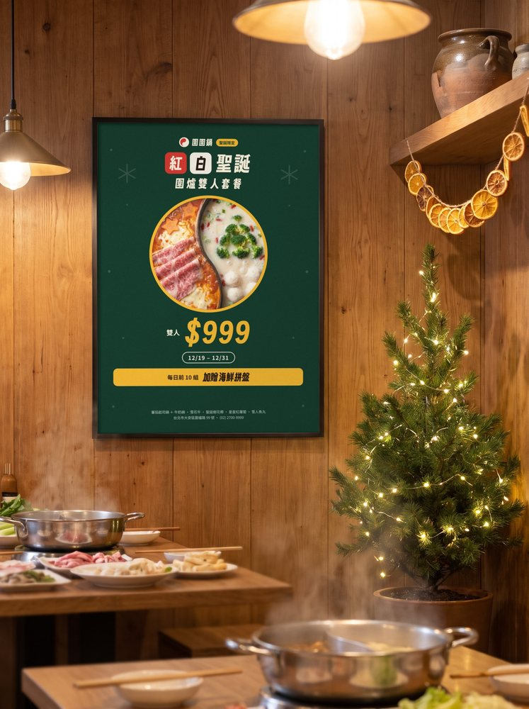
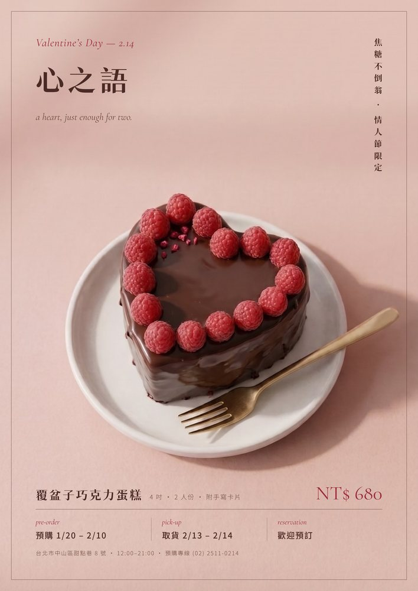
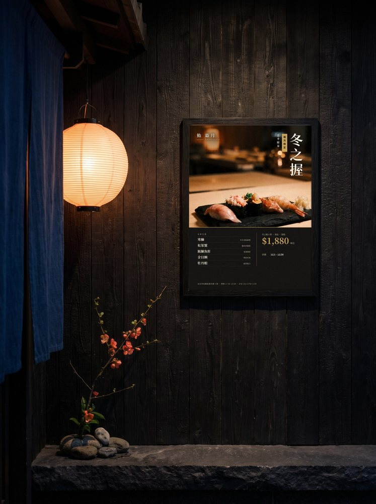
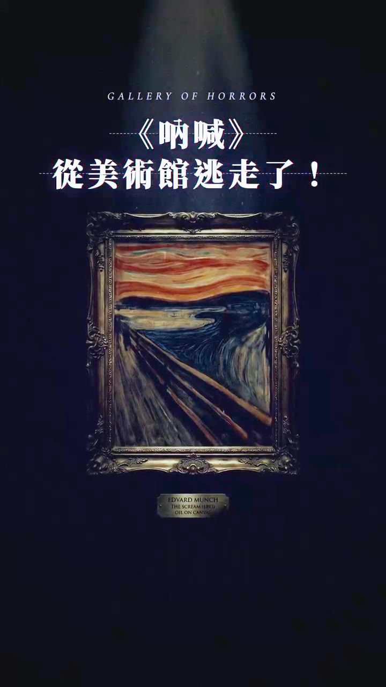

<!doctype html>
<html lang="zh-Hant">
<head>
<meta charset="utf-8">
<meta name="viewport" content="width=device-width,initial-scale=1">
<title>Wei AI Visuals Portfolio</title>
<meta name="description" content="Weiwei 的 AI 美食品牌視覺作品集：商業短影音、平面設計與延伸應用。">
<meta property="og:title" content="Wei AI Visuals Portfolio">
<meta property="og:description" content="Weiwei 的 AI 美食品牌視覺作品集：商業短影音、平面設計與延伸應用。">
<meta property="og:type" content="website">
<meta name="theme-color" content="#0b0908">
<link rel="icon" href="favicon.svg" type="image/svg+xml">
<style>html,body{height:100%;margin:0}#dc-root,#dc-root>.sc-host{height:100%}</style>
<link rel="stylesheet" href="https://fonts.googleapis.com/css2?family=Instrument+Serif:ital@0;1&amp;family=Noto+Serif+TC:wght@500;600;700;900&amp;family=Noto+Sans+TC:wght@400;500;700;900&amp;family=Oswald:wght@600;700&amp;display=swap">
<style>
/* 輸送帶改自 Lucian UX/UI Prompt #394 · MIT License (c) 2026 Seokwoooo · https://lucianlabs.dev/uxui-prompt/ */
body{margin:0;background:#0b0908}
a{color:#d6b47c}a:hover{color:#ecd3a4}
button:focus-visible,a:focus-visible{outline:1px solid #d6b47c;outline-offset:4px}
.q-pbtn.qz-nofv:focus-visible{outline:none}
.q-ph:not(.qz) .q-pbtn.qz-nofv:focus-visible:not(:hover)~.q-slot .phone{scale:1}
.q-ph:not(.qz) .q-pbtn.qz-nofv:focus-visible:not(:hover)~.q-slot .q-scr{scale:1}
.cz{--paper:#0f0c0b;--card:#17120f;--ink:#ece4d8;--muted:#a69a8d;--line:#ece4d81f;--persimmon:#c9a46a;--persimmon-text:#d6b47c;--mustard:#d99b3a;--berry:#d9837a;--wood:#1a1411;--spring:cubic-bezier(.34,1.15,.64,1);--ease:cubic-bezier(.22,1,.36,1);--ink-2:#cfc5b8;--meta:#8f8478;--e-out:cubic-bezier(.16,1,.3,1);--e-io:cubic-bezier(.87,0,.13,1);--e-in:cubic-bezier(.7,0,.84,0)}
body{-webkit-font-smoothing:antialiased}
@keyframes steam{0%{opacity:0;translate:0 10px;scale:1 .9}30%{opacity:.55}100%{opacity:0;translate:0 -36px;scale:1 1.15}}
@keyframes pop{0%{opacity:0;translate:0 40px;scale:.96}60%{opacity:1}100%{opacity:1;translate:0 0;scale:1}}
@keyframes fade{from{opacity:0}to{opacity:1}}
@keyframes rise{from{opacity:0;translate:0 10px}to{opacity:1;translate:0 0}}
@keyframes rollA{from{opacity:0;translate:0 60%}to{opacity:1;translate:0 0}}
@keyframes rollB{from{opacity:0;translate:0 60%}to{opacity:1;translate:0 0}}
@keyframes ticketOut{0%{translate:0 -105%}70%{translate:0 4%}100%{translate:0 0}}
@keyframes called{0%{scale:1}30%{scale:1.04 .94}60%{scale:.98 1.03}100%{scale:1}}
@keyframes ball{0%{scale:.4;opacity:0}60%{scale:1.1;opacity:1}100%{scale:1}}
.belt.is-dragging{cursor:grabbing}
.belt img,.belt video{-webkit-user-drag:none;pointer-events:none}
.plate .card.paper{rotate:var(--tilt,0deg);transition:translate .6s var(--spring),scale .6s var(--spring),rotate .5s var(--spring),box-shadow .35s var(--ease)}
.plate:hover .card.paper,.plate:focus-visible .card.paper{rotate:0deg}
.plate .preview{opacity:0;transition:opacity .3s var(--ease)}
.plate:hover .preview,.plate:focus-visible .preview{opacity:1}
.plate:hover .vbadge,.plate:focus-visible .vbadge{opacity:0}
.vbadge{transition:opacity .3s var(--ease)}
.plate .card{transition:translate .6s var(--spring),scale .6s var(--spring),box-shadow .35s var(--ease)}
.plate:hover .card{translate:0 -14px;box-shadow:0 18px 30px -14px #3a282055}
.plate:active .card{scale:1.04 .92;transition-duration:.12s}
.plate .hint{opacity:0;transition:opacity .3s var(--ease)}
.plate:hover .hint,.plate:focus-visible .hint{opacity:1}
.steam path{animation:steam 4.2s ease-in-out infinite;opacity:0}
.steam path:nth-child(2){animation-delay:1.4s}
.steam path:nth-child(3){animation-delay:2.8s}
.sheet{animation:sheetIn .9s var(--e-out) both}
@keyframes sheetIn{from{opacity:0;translate:0 24px}}
.veil{animation:fade .6s var(--e-out) both}
.beat-note{animation:rise .35s var(--ease) both}
.rollA{display:inline-block;animation:rollA .45s var(--spring) both}
.rollB{display:inline-block;animation:rollB .45s var(--spring) both}
.ticket{animation:ticketOut .8s var(--spring) both}
.called{animation:called .6s var(--spring) both}
.ballin{animation:ball .3s var(--spring) both}
.qbar{transition:scale .6s var(--spring)}
/* P1 原位展開 — grid: equal cells, works centred at their own ratio on a common baseline */
html{scrollbar-gutter:stable}
.wgrid{display:grid;grid-template-columns:repeat(6,minmax(0,1fr));gap:56px 28px}
.wgrid>.wcard{grid-column:span 2}
.wgrid>.wcard.wide{grid-column:span 4}
.wgrid>.wcard{animation:cardIn .9s var(--e-out) backwards;animation-delay:calc(var(--i,0) * 60ms)}
@keyframes cardIn{from{opacity:0;translate:0 28px;scale:.97}}
/* works_split: video tab as two groups (直式短影音 / 橫式影片) */
.wgrid[data-split]{display:block}
.wgrp{display:flex;flex-direction:column;gap:36px}
.wgrp+.wgrp{margin-top:112px}
.wglab{margin:0;padding-top:20px;border-top:1px solid var(--line);font-weight:400;line-height:1.4;text-align:left;animation:cardIn .9s var(--e-out) backwards;animation-delay:calc(var(--i,0) * 60ms)}
.wgrp:first-child>.wglab{padding-top:0;border-top:none}
.wrow{display:grid;gap:56px 28px}
.wrow>.wcard{animation:cardIn .9s var(--e-out) backwards;animation-delay:calc(var(--i,0) * 60ms)}
.wrow-v{grid-template-columns:repeat(4,minmax(0,1fr))}
.wrow-v .wcard .cell{aspect-ratio:9 / 16}
.wrow-w{display:flex;justify-content:center}
.wrow-w>.wcard{width:calc((100% - 28px) * 2 / 3)}
.wrow-w .wcard.wide .cell{flex:none;aspect-ratio:16 / 9}
.wrow-w .wcard.wide .fx{position:relative;left:auto;bottom:auto;width:100%;height:auto}
.wgrid:not([data-split]) .wcard .cell{aspect-ratio:4 / 5}
@media (max-width:900px){
.wgrp{gap:24px}
.wgrp+.wgrp{margin-top:72px}
.wglab{padding-top:16px}
.wrow{gap:36px 16px}
.wrow-v{grid-template-columns:repeat(2,minmax(0,1fr))}
.wrow-w>.wcard{width:100%}
}
@media (prefers-reduced-motion: reduce){.wrow>.wcard,.wglab{animation:none}}
/* harmony_patch: one grid, one left edge, one type scale on 作品總覽.
   column = header width; card columns C1-C4 = 4 x --cw, the first and last on the column edges */
#work,#queue{--cw:min(220px,calc((100% - 84px) / 4));--g1:24px;--g2:clamp(40px,4.5vw,64px);--g3:clamp(80px,9vw,128px)}
#work .wgrp{gap:var(--g1)}
#work .wgrp+.wgrp{margin-top:var(--g2)}
#work .wglab{padding-top:var(--g1)}
#work .wgrp:first-child>.wglab{padding-top:0}
#work .wrow{gap:var(--g2) 16px}
#work .wcard{text-align:left}
#work .wcap{flex-direction:column;align-items:flex-start;justify-content:flex-start;gap:4px;align-self:stretch;width:auto;max-width:100%;margin-top:14px}
#work .wcap .wl,#work .wcap .ws{max-width:100%;overflow:hidden;text-overflow:ellipsis}
#work .wcap .wl{font-size:15px;letter-spacing:.06em}
#work .wcap .ws{font-size:12px;letter-spacing:.02em}
#work .wrow-w{display:flex;justify-content:flex-start}
#work .wrow-w>.wcard{width:100%}
#work .wgrid:not([data-split]){display:grid;grid-template-columns:repeat(2,minmax(0,1fr));gap:var(--g2) 16px;width:auto;margin-inline:0}
#work .wgrid:not([data-split])>.wcard{grid-column:auto;justify-self:stretch;width:auto}
@media (min-width:901px){
#work .wrow-v{grid-template-columns:repeat(4,var(--cw));justify-content:space-between;column-gap:0}
#work .wrow-v>.wcard{justify-self:stretch;width:auto}
#work .wrow-w>.wcard{width:calc((100% + 2 * var(--cw)) / 3)}
#work .wgrid:not([data-split]){grid-template-columns:repeat(5,min(200px,calc((100% - 96px) / 5)));justify-content:space-between;column-gap:0}
}
/* 延伸應用 (harmony_patch): text over C1-C2, phone at card width in C4; stacked on mobile, left-aligned */
#queue{display:flex;flex-direction:column;gap:var(--g2)}
.q-tx{min-width:0;display:flex;flex-direction:column;gap:var(--g1);max-width:none;word-break:keep-all;line-break:strict}
.q-ph{--qk:.56;position:relative;display:flex;flex-direction:column;align-items:flex-start;gap:14px;width:max-content;max-width:100%;margin:0}
.q-slot{position:relative;flex:none;width:calc(340px * var(--qk));height:calc(720px * var(--qk))}
.q-pop{position:absolute;inset:50% auto auto 50%;width:340px;height:720px;margin:-360px 0 0 -170px;padding:0;border:0;background:none;color:inherit;overflow:visible;scale:var(--qk)}
.q-pop>.phone{transition:clip-path 1.4s var(--e-out),scale 1.1s var(--e-out)}
.q-scr{flex:1;min-height:0;display:flex;flex-direction:column;transition:scale 1.1s var(--e-out)}
.q-ph:not(.qz-live) .q-pop{pointer-events:none}
.q-pbtn{position:absolute;inset:0;z-index:1;display:block;width:100%;margin:0;padding:0;border:0;border-radius:2px;background:none;cursor:pointer;-webkit-tap-highlight-color:transparent}
.q-ph:not(.qz) .q-pbtn:hover~.q-slot .phone,.q-ph:not(.qz) .q-pbtn:focus-visible~.q-slot .phone{scale:.98}
.q-ph:not(.qz) .q-pbtn:hover~.q-slot .q-scr,.q-ph:not(.qz) .q-pbtn:focus-visible~.q-slot .q-scr{scale:1.04}
.q-ph.qz .q-pop{position:fixed;inset:50% auto auto 50%;scale:var(--qs,1);z-index:61}
.q-veil{display:none}
.q-veil:popover-open{display:block;position:fixed;inset:0;width:auto;height:auto;max-width:none;max-height:none;margin:0;padding:0;border:0;overflow:hidden;background:radial-gradient(70vw 80vh at 50% 50%,#22170f 0%,#0b0908 72%);color:var(--ink)}
.q-veil:popover-open::backdrop{background:none}
.q-pop:popover-open::backdrop{background:none}
.q-veil .q-x{position:absolute;top:18px;right:clamp(16px,2.4vw,32px)}
.q-pts{list-style:none;margin:0;padding:0;display:flex;flex-direction:column}
.q-pts li{display:grid;grid-template-columns:36px 1fr;column-gap:8px;padding:16px 0;border-top:1px solid var(--line)}
.q-pts li:last-child{border-bottom:1px solid var(--line)}
.q-pts .n{font-family:'Instrument Serif',serif;font-size:14px;line-height:1.6;color:var(--meta)}
.q-pts b{display:block;font-family:'Noto Serif TC',serif;font-weight:500;font-size:16px;line-height:1.6;letter-spacing:.06em;color:var(--ink)}
.q-pts span.d{display:block;margin-top:4px;font-size:14px;line-height:1.75;color:var(--muted)}
.q-lead{margin:0;font-size:15px;line-height:1.95;color:var(--ink-2)}
.q-note{margin:0;font-size:12px;letter-spacing:.04em;color:var(--meta)}
.q-cap{margin:0;font-family:'Noto Serif TC',serif;font-weight:500;font-size:15px;line-height:1.4;letter-spacing:.06em;color:var(--ink);text-align:left;white-space:nowrap}
@media (min-width:901px){
#queue{display:grid;grid-template-columns:repeat(4,var(--cw));justify-content:space-between;align-items:center;column-gap:0}
#queue .q-tx{grid-column:1 / span 2}
#queue .q-ph{grid-column:3 / span 2;justify-self:center}
}
@media (min-width:1000px){
#queue .q-ph{--qk:.647}
}
@media (max-width:900px){.q-ph{--qk:.52}.q-veil .q-x{position:fixed;top:12px;right:12px}}
@media (max-width:370px){.q-ph{--qk:.48}}
@media (prefers-reduced-motion: reduce){.q-pop>.phone,.q-scr{transition:none}}
.wgrid.leaving{opacity:0;translate:0 -8px;transition:opacity .35s var(--e-in),translate .35s var(--e-in)}
.wcard{min-width:0;padding:0;border:none;background:none;cursor:pointer;font-family:inherit;color:var(--ink);display:flex;flex-direction:column;align-items:stretch;text-align:center;transition:opacity .9s var(--e-out)}
.wcard .cell{position:relative;display:flex;align-items:flex-end;justify-content:center;width:100%;aspect-ratio:3 / 4}
.wcard .fx{position:relative;display:block;max-width:100%;max-height:100%}
.wcard .fx.v{height:100%;aspect-ratio:9 / 16}
.wcard .fx.p{width:100%;aspect-ratio:4 / 5}
.wcard .fx.w{width:100%;aspect-ratio:16 / 9}
.wcard .frame{position:absolute;inset:0;display:block;overflow:hidden;border-radius:2px;background:#15110f;transition:scale 1.1s var(--e-out)}
.wcard .frame>img,.wcard .frame>video{position:absolute;inset:0;width:100%;height:100%;object-fit:cover;filter:brightness(.86) saturate(.95);transition:scale 1.1s var(--e-out),filter .9s var(--e-out)}
.wcard .frame>video.preview{opacity:0;transition:scale 1.1s var(--e-out),filter .9s var(--e-out),opacity .45s var(--e-out)}
.wcard .frame>video.preview.live{opacity:1}
.wcard:hover .frame,.wcard:focus-visible .frame{scale:.98}
.wcard:hover .frame>img,.wcard:hover .frame>video,.wcard:focus-visible .frame>img,.wcard:focus-visible .frame>video{scale:1.06;filter:brightness(1) saturate(1)}
.wcard .vbadge{transition:opacity .5s var(--e-out)}
.wcard:hover .vbadge,.wcard:focus-visible .vbadge{opacity:0}
.wcap{display:flex;justify-content:center;align-items:baseline;gap:10px;margin-top:18px;min-width:0;white-space:nowrap}
.wcap .wl{flex:0 0 auto;font-family:'Noto Serif TC',serif;font-weight:500;font-size:17px;line-height:1.4;letter-spacing:.06em;transition:color .5s var(--e-out)}
.wcap .ws{min-width:0;overflow:hidden;text-overflow:ellipsis;font-size:13px;line-height:1.4;color:var(--ink-2)}
.wcard:hover .wl,.wcard:focus-visible .wl{color:#d6b47c}
@media (hover:hover){.wgrid:not(.zoomed):has(.wcard:hover) .wcard:not(:hover){opacity:.45}}
.wgrid:not(.zoomed):has(.wcard:focus-visible) .wcard:not(:focus-visible){opacity:.45}
.wgrid.zoomed .wcard{opacity:.45}
/* the rest of the grid sinks into the dark, staggered by distance (--dd) from the opened work */
.wcard .fx,.wcard .wcap{transition:opacity .75s var(--e-out) var(--dd,0ms),scale .9s var(--e-out) var(--dd,0ms),filter .9s var(--e-out) var(--dd,0ms)}
.wgrid.zoomed .fx,.wgrid.zoomed .wcap{opacity:0;scale:.96;filter:blur(8px)}
.wgrid .wcard.is-sel .fx{opacity:0;scale:1;filter:none;transition:none}
.wgrid .wcard.is-back .fx{opacity:1;scale:1;filter:none;transition:none}
/* detail stage */
.dz:focus{outline:none}
.dz{position:fixed;inset:0;z-index:50;display:flex;flex-direction:column;box-sizing:border-box;padding:64px clamp(24px,5vw,80px) 16px;color:var(--ink)}
.dz-bg{position:absolute;inset:0;background:radial-gradient(60vw 70vh at 34% 44%,#22170f 0%,#0b0908 72%);opacity:0;transition:opacity .9s cubic-bezier(.45,0,.2,1)}
.dz.in .dz-bg{opacity:1;transition:opacity .9s var(--e-out)}
.dz-body{position:relative;flex:1 1 auto;min-height:0;display:flex;align-items:center;justify-content:center;gap:clamp(40px,6vw,104px)}
.dz-left{flex:0 0 auto;max-height:100%;display:flex;flex-direction:column;align-items:center;gap:12px}
.zf{position:relative;display:block;overflow:hidden;border-radius:2px;background:#120e0c;padding:0;border:0;box-sizing:border-box}
.zf.v{height:min(78vh,calc(100vh - 200px));aspect-ratio:9 / 16}
.zf.v.w{height:auto;width:min(62vw,calc(70vh * 16 / 9),calc(100vw - 2 * clamp(24px,5vw,80px) - 400px - clamp(32px,4vw,64px)));aspect-ratio:16 / 9}
.dz-body:has(.zf.w){gap:clamp(32px,4vw,64px)}
.zf.p{width:min(36vw,calc((100vh - 290px - var(--pgx,0px)) * var(--arn,.8)));aspect-ratio:var(--ar,4 / 5);cursor:zoom-in;isolation:isolate;touch-action:pan-y}
.zf .zp,.zf .zv{position:absolute;inset:0;width:100%;height:100%;object-fit:cover;display:block}
.zf .zv{background:transparent;opacity:0;transition:opacity .6s var(--e-out)}
.zf .zv.live{opacity:1}
.zf .pg{position:absolute;inset:0;width:100%;height:100%;object-fit:contain;display:block;opacity:0;mix-blend-mode:plus-lighter;transition:opacity .9s linear;-webkit-user-drag:none;user-select:none}
.zf .pg.cov{object-fit:cover}
.zf .pg.on{opacity:1}
.zf.p:focus-visible{outline:1px solid #d6b47c;outline-offset:6px}
.dz-text{position:relative;flex:0 1 440px;min-width:0;max-height:100%;overflow-y:auto;scrollbar-width:none;display:flex;flex-direction:column;gap:22px}
.zl{--k:0;opacity:0;translate:0 12px;transition:opacity .35s var(--e-in),translate .35s var(--e-in)}
.dz.in .zl{opacity:1;translate:0 0;transition:opacity 1.1s var(--e-out) calc(450ms + var(--k) * 50ms),translate 1.1s var(--e-out) calc(450ms + var(--k) * 50ms)}
.dz-x{position:absolute;top:18px;right:clamp(16px,2.4vw,32px);z-index:3;opacity:0;transition:opacity .35s var(--e-in),background-color .3s var(--ease),border-color .3s var(--ease),rotate .4s var(--ease)}
.dz.in .dz-x{opacity:1;transition:opacity 1.1s var(--e-out) .45s,background-color .3s var(--ease),border-color .3s var(--ease),rotate .4s var(--ease)}
.dz-foot{position:relative;display:flex;align-items:flex-end;justify-content:space-between;gap:24px;padding-top:16px}
.dz-foot .navbtn{flex:1 1 0;min-width:0}
.dz-foot .navbtn:last-child{justify-content:flex-end}
.zstrip{flex:0 1 auto;min-width:0;display:flex;align-items:flex-end;gap:10px;overflow-x:auto;scrollbar-width:none;padding:0 2px 7px}
.zs{position:relative;flex:0 0 auto;height:64px;padding:0;border:0;border-radius:1px;background:#120e0c;cursor:pointer;opacity:.45;transition:opacity .6s var(--e-out)}
.zs img{width:100%;height:100%;object-fit:cover;display:block;border-radius:1px}
.zs::after{content:"";position:absolute;left:0;right:0;bottom:-6px;height:1px;background:#c9a46a;scale:0 1;transition:scale .8s var(--e-out)}
.zs:hover,.zs:focus-visible{opacity:.8}
.zs.on{opacity:1}
.zs.on::after{scale:1 1}
::view-transition-old(root){animation:none;opacity:0}
::view-transition-new(root){animation:none}
::view-transition-group(zhero){animation-duration:1.1s;animation-timing-function:cubic-bezier(.87,0,.13,1)}
html.zclose::view-transition-group(zhero){animation-duration:1s}
::view-transition-old(zhero),::view-transition-new(zhero){height:100%;object-fit:cover}
::view-transition-image-pair(zhero){overflow:clip}
@media (max-width:900px){
.wcap{flex-direction:column;align-items:center;gap:2px;margin-top:12px}
.wcap .wl{font-size:15px}.wcap .ws{max-width:100%;font-size:12px}
.dz{display:block;overflow-y:auto;overscroll-behavior:contain;padding:0}
.dz-bg{position:fixed}
.dz-body{flex-direction:column;align-items:stretch;gap:28px;padding:68px 20px 28px}
.dz-left{align-self:center;width:100%;max-height:none}
.zf.v{height:auto;width:min(100%,calc(68vh * 9 / 16))}
.zf.p{width:100%}
.dz-text{flex:none;max-height:none;overflow:visible}
.dz-x{position:fixed;top:12px;right:12px}
.dz-foot{position:sticky;bottom:0;gap:4px;padding:18px 8px calc(10px + env(safe-area-inset-bottom));background:linear-gradient(#0b090800,#0b0908 34%)}
.dz-foot .navbtn{flex:0 0 44px;justify-content:center}
.dz-foot .navbtn>:not([aria-hidden]){display:none}
.zs{height:52px}
}
@media (prefers-reduced-motion: reduce){.wcard,.wcard .frame,.wcard .frame>img,.wcard .frame>video,.wcard .fx,.wcard .wcap{transition:none}.dz-bg,.dz.in .dz-bg{transition:opacity .2s linear}.zl,.dz.in .zl{translate:none;transition:opacity .2s linear}.zf .pg{transition-duration:.2s}::view-transition-group(*),::view-transition-old(*),::view-transition-new(*){animation-duration:.01ms!important}}
.tile .media{position:relative;display:block;overflow:hidden;background:#1d1714;border-radius:6px;transition:translate .5s var(--ease),box-shadow .4s var(--ease)}
.tile .media img{transition:scale .8s var(--ease)}
.tile:hover .media,.tile:focus-visible .media{translate:0 -6px;box-shadow:0 26px 40px -26px #000000cc}
.tile:hover .media img{scale:1.03}
.tile .preview{opacity:0;transition:opacity .3s var(--ease)}
.tile:hover .preview,.tile:focus-visible .preview{opacity:1}
.tile:hover .vbadge,.tile:focus-visible .vbadge{opacity:0}
.tile .cta{position:absolute;left:0;right:0;bottom:0;padding:48px 16px 14px;background:linear-gradient(#1d171400,#1d1714c2);color:#f6f1e8;font-family:'Noto Serif TC',serif;font-size:15px;font-weight:500;letter-spacing:.08em;text-align:left;opacity:0;transition:opacity .3s var(--ease)}
.tile:hover .cta,.tile:focus-visible .cta{opacity:1}
.mist{position:absolute;left:-12%;right:-12%;bottom:-4%;height:78%;pointer-events:none;mix-blend-mode:screen;z-index:0;overflow:hidden;-webkit-mask-image:linear-gradient(transparent,#000 30%);mask-image:linear-gradient(transparent,#000 30%)}
.mist i{position:absolute;left:0;bottom:0;width:200%;height:var(--h,72%);background:#d6b47c;-webkit-mask:url(media/fog1.png) repeat-x 0 0/50% 100%;mask:url(media/fog1.png) repeat-x 0 0/50% 100%;opacity:var(--o,.2);animation:mistdrift var(--t,70s) linear infinite}
.mist i+i{--t:104s;--o:.14;--h:88%;bottom:-6%;-webkit-mask-image:url(media/fog2.png);mask-image:url(media/fog2.png);animation-direction:reverse}
@keyframes mistdrift{to{transform:translate3d(-50%,0,0)}}
.ch{display:inline-block;animation:condense 1.2s var(--e-out) both;animation-delay:calc(var(--i) * 34ms + 120ms)}
.ch.done{animation:none}
@keyframes condense{0%{opacity:0;filter:blur(10px);translate:0 .22em}100%{opacity:1;filter:blur(0);translate:0 0}}
.rise{animation:riseup 1.1s cubic-bezier(.25,.6,.25,1) both}
.rise.done{animation:none}
@keyframes riseup{from{opacity:0;translate:0 10px;filter:blur(4px)}to{opacity:1;translate:0 0;filter:blur(0)}}
.xbtn{display:grid;place-items:center;width:44px;height:44px;padding:0;border-radius:50%;border:1px solid #ffffff2e;background:#1a1411b3;color:#f2ebe1;cursor:pointer;-webkit-backdrop-filter:blur(10px);backdrop-filter:blur(10px);transition:background-color .3s var(--ease),border-color .3s var(--ease),rotate .4s var(--ease)}
.xbtn:hover,.xbtn:focus-visible{background:#2a2019e6;border-color:#d6b47c99;rotate:90deg}
.navbtn{display:inline-flex;align-items:center;gap:10px;min-height:44px;padding:0;border:none;background:none;cursor:pointer;font-family:inherit;color:#a69a8d;transition:color .3s var(--ease)}
.navbtn:hover,.navbtn:focus-visible{color:#f2ebe1}
.navbtn b{font-weight:400;font-family:'Noto Serif TC',serif;font-size:15px;color:#f2ebe1}
.fog{display:none}
.off .mist i{animation-play-state:paused}
@keyframes drift{from{translate:-4% 0;scale:1}to{translate:6% -5%;scale:1.12}}
.glass{background:linear-gradient(140deg,#ffffff1f,#ffffff08 60%);border:1px solid #ffffff21;box-shadow:inset 0 1px 0 #ffffff1f,0 24px 60px -30px #000000cc;-webkit-backdrop-filter:blur(18px) saturate(1.4);backdrop-filter:blur(18px) saturate(1.4)}
.grain{position:fixed;inset:0;pointer-events:none;z-index:40;opacity:.05;mix-blend-mode:overlay;background-image:url("data:image/svg+xml;utf8,<svg xmlns='http://www.w3.org/2000/svg' width='180' height='180'><filter id='n'><feTurbulence type='fractalNoise' baseFrequency='.9' numOctaves='2' stitchTiles='stitch'/></filter><rect width='100%' height='100%' filter='url(%23n)'/></svg>")}
.pill{border-top:1px solid var(--line);padding:24px 0 0}
.wcard{position:relative}

.entry2{position:relative;display:block;height:clamp(280px,28vw,400px);padding:0;border:0;border-radius:2px;overflow:hidden;background:#120e0c;cursor:pointer;text-align:left;font-family:inherit;color:#f2ebe1;transition:scale 1.1s var(--e-out)}
.entry2 .bg{position:absolute;inset:0;display:flex;gap:0}
.entry2 .bg img{flex:1 1 0;min-width:0;height:100%;object-fit:cover;display:block;filter:brightness(.5) saturate(.9);transition:filter 1.1s var(--e-out),scale 1.6s var(--e-out)}
.entry2:hover,.entry2:focus-visible{scale:.985}
.entry2:hover .bg img,.entry2:focus-visible .bg img{filter:brightness(.72) saturate(1);scale:1.08}
.entry2 .shade{position:absolute;inset:0;background:linear-gradient(to top,#0b0908f0 0%,#0b090880 38%,#0b090800 72%)}
.entry2 .t{position:absolute;left:36px;bottom:44px;overflow:hidden;height:1.3em;font-family:'Noto Serif TC',serif;font-weight:500;font-size:clamp(24px,2.6vw,36px);line-height:1.3;letter-spacing:.1em}
.entry2 .t>span{display:block;transition:translate .7s var(--e-out)}
.entry2 .t>span::after{content:attr(data-t);display:block;color:#d6b47c}
.entry2:hover .t>span,.entry2:focus-visible .t>span{translate:0 -1.3em}
.entry2 .ln{position:absolute;left:36px;bottom:32px;height:1px;width:36px;background:#c9a46a;transition:width .9s var(--e-out)}
.entry2:hover .ln,.entry2:focus-visible .ln{width:132px}
.entry{transition:translate .5s var(--ease),box-shadow .4s var(--ease)}
.entry:hover,.entry:focus-visible{translate:0 -4px;box-shadow:0 24px 40px -28px #000000cc}
.entry:active{translate:0 -2px;transition-duration:.12s}
.lm{display:block;overflow:hidden;padding-bottom:.08em}
.lm>span{display:block;translate:0 105%;transition:translate 1.2s var(--e-out) calc(var(--i,0) * 90ms)}
.rv{opacity:0;translate:0 24px;transition:opacity 1s var(--e-out),translate 1s var(--e-out);transition-delay:calc(var(--i,0) * 70ms + var(--d0,0ms))}
.is-in .lm>span,.is-in .rv{translate:none;opacity:1}
.hl{white-space:nowrap;color:var(--ink);background:linear-gradient(#c9a46a,#c9a46a) 0 100%/0 1px no-repeat;transition:color .9s var(--e-out) .6s,background-size 1.1s var(--e-out) .75s}
.is-in .hl{color:#c9a46a;background-size:100% 1px}
.phone{clip-path:inset(100% 0 0 0 round 44px);transition:clip-path 1.4s var(--e-out)}
.is-in .phone{clip-path:inset(0 round 44px)}
.curtain{position:fixed;inset:0;z-index:60;background:#0b0908;pointer-events:none;clip-path:inset(100% 0 0 0)}
.mmeta{font-size:12px;letter-spacing:.24em;color:var(--meta)}
.chips{display:flex;flex-wrap:wrap;gap:0 4px;margin:0;padding:0;list-style:none;font-size:15px;color:var(--ink-2)}
.chips li+li::before{content:"·";margin-right:6px;color:var(--meta)}
.pgs{display:flex;flex-wrap:nowrap;gap:8px;overflow-x:auto;width:100%;scrollbar-width:none}
.pgs.many{--pgh:52px;display:grid;grid-template-columns:repeat(5,60px);gap:8px;justify-content:center;width:0;min-width:100%;overflow:visible}
.pgs.many>[role=tab]{width:100%}
.pgs.many>[role=tab]>img{width:100%!important;height:100%!important;object-fit:contain}
@media (min-width:901px){
.wgrid:not(:has(>.wide))>.wcard:nth-child(3n+1):nth-last-child(2){grid-column:2 / span 2}
.wgrid:not(:has(>.wide))>.wcard:nth-child(3n+1):last-child{grid-column:3 / span 2}
.wcard.wide .cell{flex:1 1 0;aspect-ratio:auto;min-height:0}
.wcard.wide .fx{position:absolute;left:0;bottom:0}
}
@media (max-width:900px){
.wgrid{grid-template-columns:repeat(4,minmax(0,1fr));gap:36px 16px;grid-auto-flow:row dense}
.wgrid>.wcard.wide{grid-column:1 / -1}
.wgrid:not(:has(>.wide))>.wcard:nth-child(2n+1):last-child{grid-column:2 / span 2}
.wcard .cell{aspect-ratio:5 / 7}
.wcard.wide .cell{aspect-ratio:16 / 9}
.zf.v.w{width:100%}
.pgs.many{--pgh:46px;grid-template-columns:repeat(5,54px)}
}
/* L2 作品總覽 (home): one native-scroll row of all 8 works at a common height; depth of field on hover; opens with P1's 原位展開 */
@property --fl{syntax:'<length>';inherits:false;initial-value:0px}
.gal-h{display:flex;flex-direction:column;align-items:flex-start;gap:12px;margin:0 0 clamp(40px,4vw,56px);font:inherit;font-weight:400;letter-spacing:normal;color:inherit}
.grow{--gh:clamp(240px,40vh,400px);--gg:28px;position:relative;width:100vw;margin-left:calc(50% - 50vw)}
.g-sc{--P:max(24px,calc((100vw - 1280px) / 2 + 24px));--fr:12vw;position:relative;display:flex;align-items:flex-end;gap:var(--gg);overflow-x:auto;overflow-y:hidden;overscroll-behavior-x:contain;scroll-snap-type:x proximity;scroll-padding-left:var(--P);padding:12px calc(var(--fr) + 24px) 12px var(--P);margin:-12px 0;scrollbar-width:none;-webkit-user-select:none;user-select:none;cursor:grab;-webkit-mask-image:linear-gradient(90deg,#0000 0,#000 var(--fl),#000 calc(100% - var(--fr)),#000000a0 calc(100% - var(--fr) * .6),#0000002e calc(100% - var(--fr) * .26),#0000 calc(100% - var(--fr) * .04));mask-image:linear-gradient(90deg,#0000 0,#000 var(--fl),#000 calc(100% - var(--fr)),#000000a0 calc(100% - var(--fr) * .6),#0000002e calc(100% - var(--fr) * .26),#0000 calc(100% - var(--fr) * .04));transition:--fl .7s var(--e-out)}
.g-sc::-webkit-scrollbar{display:none}
.grow.scrolled .g-sc{--fl:max(var(--P),7vw)}
.g-sc.drag{scroll-snap-type:none;cursor:grabbing}
.g-sc.drag .it{cursor:grabbing}
.it{flex:0 0 auto;display:block;padding:0;border:0;background:none;font:inherit;color:var(--ink);text-align:left;cursor:pointer;scroll-snap-align:start;-webkit-tap-highlight-color:transparent}
.it .iw{display:flex;flex-direction:column;align-items:flex-start}
.it .fx{position:relative;display:block;height:var(--gh)}
.it .fx.v{aspect-ratio:9 / 16}
.it .fx.p{aspect-ratio:4 / 5}
.it .fx.w{aspect-ratio:16 / 9}
.it .fr{position:absolute;inset:0;display:block;overflow:hidden;border-radius:2px;background:#15110f;filter:var(--rf,none);transition:filter .6s var(--e-out),scale 1.1s var(--e-out)}
.it .fr>img,.it .fr>video{position:absolute;inset:0;width:100%;height:100%;object-fit:cover;display:block;filter:brightness(.86) saturate(.95);-webkit-user-drag:none;pointer-events:none;transition:scale 1.1s var(--e-out),filter .9s var(--e-out)}
.it .fr>video{opacity:0;transition:scale 1.1s var(--e-out),filter .9s var(--e-out),opacity .45s var(--e-out)}
.it .fr>video.live{opacity:1}
.it .icap{display:flex;align-items:baseline;gap:10px;width:0;min-width:100%;margin-top:16px;white-space:nowrap}
.it .cl{flex:0 0 auto;font-family:'Noto Serif TC',serif;font-weight:500;font-size:16px;line-height:1.4;letter-spacing:.06em;transition:color .5s var(--e-out)}
.it .cs{min-width:0;overflow:hidden;text-overflow:ellipsis;font-size:13px;line-height:1.4;color:var(--ink-2)}
/* 景深: the hovered / keyboard-focused work comes forward, the rest of the row drops out of focus */
.it.hot .fr{scale:.98;filter:none}
.it.hot .fr>img,.it.hot .fr>video{scale:1.06;filter:none}
.it.hot .cl{color:#d6b47c}
.grow.dim .it:not(.hot) .fr{filter:brightness(min(.45,var(--rk,1))) blur(max(3px,var(--rb,0px)))}
.grow.dim .it:not(.hot) .icap{opacity:.45}
.grow.scr .it .fr{transition:filter .12s linear}
/* 景深長廊: depth of field written by gDof (quantised): --rf/--rb/--rk/--rs on .fr, --ro on .it; hover (.hot) is always sharp */
.it .fr{scale:var(--rs,1)}
.it .icap{opacity:var(--ro,1)}
.it.hot .icap{opacity:1}
/* G3 景深 (gallery3d_patch): .g3a = 弧形景深 (also the reduced-motion flat row), .g3r = 環形旋轉; set on .grow by gBind */
.grow.g3a .g-sc{--fe:clamp(40px,10vw,170px);scroll-snap-type:x mandatory;scroll-padding:0;padding-left:var(--pl,40vw);padding-right:var(--pr,40vw);-webkit-mask-image:linear-gradient(90deg,#0000 0,#0000002e calc(var(--fe) * .22),#000000a0 calc(var(--fe) * .6),#000 var(--fe),#000 calc(100% - var(--fe)),#000000a0 calc(100% - var(--fe) * .6),#0000002e calc(100% - var(--fe) * .22),#0000 100%);mask-image:linear-gradient(90deg,#0000 0,#0000002e calc(var(--fe) * .22),#000000a0 calc(var(--fe) * .6),#000 var(--fe),#000 calc(100% - var(--fe)),#000000a0 calc(100% - var(--fe) * .6),#0000002e calc(100% - var(--fe) * .22),#0000 100%);transition:none}
.grow.g3a .g-sc.drag{scroll-snap-type:none}
/* the arc transform sits on .iw: .it stays untransformed, so scroll-snap measures the real layout box */
.grow.g3a .it{scroll-snap-align:center;transform-style:preserve-3d}
.grow.g3a .it .iw{transform-origin:50% calc(var(--gh) / 2)}
/* the stage's own plane sits at z 0, in front of the receding works: only the works take the pointer */
.grow.g3r{overflow-x:clip;touch-action:pan-y;cursor:grab}
.grow.g3r .g-sc.drag,.grow.g3r .g-sc.drag .it{cursor:grabbing}
.grow.g3r .g-sc{display:block;overflow:visible;padding:0;margin:0;-webkit-mask-image:none;mask-image:none;transform-style:preserve-3d;pointer-events:none;scroll-snap-type:none;transition:none}
.grow.g3r .it{pointer-events:auto;position:absolute;left:50%;top:var(--rt,0px);scroll-snap-align:none;transform-origin:50% 50%}
.grow.g3r .it .icap{display:none}
.g-cap{position:relative;height:1.6em;margin-top:clamp(22px,2.6vw,36px);pointer-events:none;transition:opacity .75s var(--e-out)}
.g-cap .ln{position:absolute;left:0;right:0;top:0;display:flex;justify-content:center;overflow:hidden;padding-bottom:.08em}
.g-cap .ln>span{display:flex;align-items:baseline;gap:10px;white-space:nowrap}
.g-cap .cl{font-family:'Noto Serif TC',serif;font-weight:500;font-size:16px;line-height:1.4;letter-spacing:.06em;color:var(--ink);transition:color .5s var(--e-out)}
.g-cap .cs{font-size:13px;line-height:1.4;color:var(--ink-2)}
.g-cap.hot .ln:last-child .cl{color:#d6b47c}
.grow.zoomed .g-cap{opacity:0}
@media (max-width:900px){.g-cap{margin-top:20px}.g-cap .cl{font-size:15px}.g-cap .cs{font-size:12px}.g-cap .ln>span{gap:8px}}
/* open: the rest of the row sinks into the dark, staggered by distance (--dd) from the opened work */
.grow .fx,.grow .icap{transition:opacity .75s var(--e-out) var(--dd,0ms),scale .9s var(--e-out) var(--dd,0ms),filter .9s var(--e-out) var(--dd,0ms)}
.grow.zoomed .fx,.grow.zoomed .icap{opacity:0;scale:.96;filter:blur(8px)}
.grow .it.is-sel .fx{opacity:0;scale:1;filter:none;transition:none}
.grow .it.is-back .fx{opacity:1;scale:1;filter:none;transition:none}
.it:focus-visible{outline:none}
.it:focus-visible .fr{outline:1px solid #d6b47c;outline-offset:4px}
.gbar{position:relative;height:1px;margin-top:36px;background:#8f847833;overflow:hidden}
.gbar i{position:absolute;left:0;top:0;bottom:0;width:30%;background:#c9a46a;opacity:.7;will-change:transform}
@media (max-width:900px){.it .fx.w{height:auto;width:min(calc(var(--gh) * 16 / 9),84vw)}.grow{--gh:min(calc(52vw * 16 / 9),46vh);--gg:14px}.g-sc{--fr:10vw;padding-right:calc(var(--fr) + 12px)}.it .icap{margin-top:12px;gap:8px}.it .cl{font-size:15px}.it .cs{font-size:12px}.gbar{margin-top:28px}}
@media (prefers-reduced-motion: reduce){.g-sc,.it .fr,.it .fr>img,.it .fr>video,.it .cl,.grow .fx,.grow .icap{transition:none}.grow.dim .it:not(.hot) .fr{filter:brightness(.45)}}
/* M 首頁主視覺: every work around the edges at three depths (atmosphere only), title centred, 移焦 cycles focus */
.cz>header{position:relative;z-index:6}
.hero3{--u:min(calc(100vw / 1440),calc(100vh / 900));position:relative;height:100vh;height:100svh;min-height:560px;margin-top:calc(-1 * var(--hh,86px))}
.hf{position:absolute;inset:0;z-index:0;overflow:clip;pointer-events:none;-webkit-user-select:none;user-select:none}
.ht{position:absolute;left:calc(var(--ax) + var(--x) * var(--u));top:calc(var(--ay) + var(--y) * var(--u));height:calc(var(--h) * var(--u));aspect-ratio:var(--ar);z-index:var(--z)}
.d1{--bf:none;--dk:.15;--z:3}.d2{--bf:blur(4px);--dk:.45;--z:2}.d3{--bf:blur(9.5px);--dk:.65;--z:1}
.hero3 .ht[data-id="taille"]{left:max(calc(var(--ax) + var(--x) * var(--u)),calc(50% + 276px))}
.hs{position:absolute;inset:0;opacity:0;transition:scale 1.6s var(--e-out)}
.hf.lit .hs{opacity:1;transition:opacity 1.8s var(--e-out) var(--d,0ms),scale 1.6s var(--e-out)}
.hm{position:absolute;inset:0;overflow:hidden;border-radius:2px;background:#15110f;filter:var(--bf);transition:filter 1.6s var(--e-out)}
.hm>img,.hx,.hv{position:absolute;inset:0;width:100%;height:100%;object-fit:cover;display:block;border-radius:2px}
.hm>.hb2{opacity:0}
.hd{position:absolute;inset:0;z-index:3;background:#000;opacity:var(--dk);transition:opacity 1.6s var(--e-out)}
.hx{opacity:0}
.hv{opacity:0;transition:opacity .9s var(--e-out)}
.hv.live{opacity:1}
.ht.f .hs,.ht.fs .hs{scale:1.02}
.ht.f .hm{filter:blur(0px)}
.ht.f .hd{opacity:0}


.hero3>.mist{z-index:1}
.hveil{position:absolute;inset:0;z-index:2;pointer-events:none;background:radial-gradient(calc(var(--u) * 600) calc(var(--u) * 340) at 50% 50%,#0b0908f0 0%,#0b0908d0 38%,#0b090880 66%,#0b090800 100%),linear-gradient(#0b0908e6 0,#0b090800 15%,#0b090800 80%,#0b0908 100%)}
.htx{position:absolute;left:50%;top:50%;z-index:5;translate:-50% -50%;width:max-content;max-width:calc(100% - 48px);display:flex;flex-direction:column;align-items:center;gap:18px;text-align:center}
.htx h1 .wi{font-style:italic;margin-right:.02em}
.htx h1{margin:0;font-family:'Instrument Serif',serif;font-weight:400;font-size:clamp(52px,calc(var(--u) * 96),120px);line-height:.95;letter-spacing:-.015em;text-shadow:0 2px 40px #000}
.htx .tag{margin:2px 0 0;font-family:'Instrument Serif',serif;font-style:italic;font-size:24px;color:var(--persimmon-text)}
.htx .lead{margin:0;font-size:16px;line-height:1.8;color:var(--muted)}
@media (max-width:700px){
.hero3{--u:min(calc(100vw / 390),calc(100vh / 844))}
.ht{left:calc(var(--max) + var(--mx) * var(--u));top:calc(var(--may) + var(--my) * var(--u));height:calc(var(--mh) * var(--u))}
.ht.mo{display:none}
.hero3 .ht[data-id="taille"]{left:calc(var(--max) + var(--mx) * var(--u));top:max(calc(var(--may) + var(--my) * var(--u)),calc(50% + 150px))}
.m1{--bf:none;--dk:.15;--z:3}.m2{--bf:blur(4px);--dk:.45;--z:2}.m3{--bf:blur(9.5px);--dk:.65;--z:1}
.hero3>.mist{height:46%}
.hveil{background:radial-gradient(150% 230px at 50% 50%,#0b0908f2 0%,#0b0908cc 45%,#0b090800 100%),linear-gradient(#0b0908e6 0,#0b090800 14%,#0b090800 84%,#0b0908 100%)}
.htx{gap:14px;max-width:calc(100% - 40px)}
.htx h1{font-size:58px}
.htx .tag{font-size:21px}
.htx .lead{font-size:15px;line-height:1.75}
}
@media (prefers-reduced-motion: reduce){.hs,.hf.lit .hs{opacity:1;transition:none}.hm,.hd,.hv{transition:none}}
@media (prefers-reduced-motion: reduce){.steam path,.sheet,.veil,.beat-note,.rollA,.rollB,.ticket,.called,.ballin{animation:none}.steam path{opacity:.4}.plate .card,.qbar,.entry,.tile .media,.tile .media img{transition:none}.fog,.mist i,.ch,.rise,.wgrid>.wcard{animation:none}.lm>span,.rv,.hl,.phone,.entry2,.entry2 .bg img,.entry2 .t>span{transition:none}.lm>span,.rv{translate:none;opacity:1}.phone{clip-path:none}}
</style>
</head>
<body>
<div id="dc-root"></div>
<script type="text/x-wei-template" id="wei-tpl">

<div id="top" class="cz" style="overflow-x: clip; background-color: #0b0908; background-image: radial-gradient(900px 600px at 18% -8%, #2b1d1366 0%, #0b090800 70%); background-repeat: no-repeat; color: var(--ink); font-family: 'Noto Sans TC', sans-serif; min-height: 100vh">

<header style="max-width: 1280px; margin: 0 auto; padding: 22px 24px; box-sizing: border-box; display: flex; flex-wrap: wrap; justify-content: space-between; align-items: center; gap: 12px; font-size: 14px; letter-spacing: 0.12em">
<span aria-hidden="true"></span>
<nav aria-label="頁面" style="display: flex; flex-wrap: wrap; align-items: center; gap: 24px">
<sc-for list="{{ nav }}" as="n" hint-placeholder-count="3">
<button type="button" onClick="{{ n.go }}" aria-current="{{ n.cur }}" style="{{ n.style }}">{{ n.label }}</button>
</sc-for>
</nav>
</header>

<sc-if value="{{ pageHome }}" hint-placeholder-val="{{ true }}">
<section aria-label="首頁" class="{{ heroCls }}">
<svg width="0" height="0" style="position: absolute; width: 0; height: 0; overflow: hidden" aria-hidden="true" focusable="false"><defs>
<filter id="fx-in" x="-12%" y="-12%" width="124%" height="124%" color-interpolation-filters="sRGB">
<feImage href="media/smoke-noise.jpg" preserveAspectRatio="none" result="n"/>
<feColorMatrix in="n" type="matrix" result="m" values="0 0 0 0 0  0 0 0 0 0  0 0 0 0 0  0 0 0 0 0"/>
<feDisplacementMap in="SourceGraphic" in2="n" scale="0" xChannelSelector="G" yChannelSelector="B" result="d"/>
<feGaussianBlur in="d" stdDeviation="0" result="db"/>
<feComposite in="db" in2="m" operator="in" result="bm"/>
<feGaussianBlur in="SourceAlpha" stdDeviation="0" result="sa"/>
<feComposite in="bm" in2="sa" operator="in" result="body"/>
<feComposite in="m" in2="m" operator="arithmetic" k1="-4" k2="4" k3="0" k4="0" result="edge"/>
<feFlood flood-color="#f1e2c6" flood-opacity="0"/>
<feComposite in2="edge" operator="in"/>
<feComposite in2="sa" operator="in" result="glow"/>
<feMerge><feMergeNode in="body"/><feMergeNode in="glow"/></feMerge>
</filter>
</defs></svg>
<div class="hf" aria-hidden="true">
<sc-for list="{{ heroTiles }}" as="t" hint-placeholder-count="8">
<span class="{{ t.cls }}" data-k="{{ t.k }}" data-id="{{ t.id }}" data-pages="{{ t.pages }}" style="{{ t.st }}"><span class="hs">
<span class="hm"><span class="hd"></span></span>

<sc-if value="{{ t.isVideo }}" hint-placeholder-val="{{ false }}">
<video class="hv" src="{{ t.video }}" muted="{{ true }}" loop="{{ true }}" playsInline="{{ true }}" preload="none"></video>
</sc-if>
</span></span>
</sc-for>
</div>
<div class="mist" aria-hidden="true"><i></i><i></i></div>
<div class="hveil" aria-hidden="true"></div>
<div class="htx">
<h1 aria-label="Wei AI Visuals Portfolio"><span aria-hidden="true" style="display: block"><sc-for list="{{ t1 }}" as="ch" hint-placeholder-count="14"><span class="{{ ch.cls }}" style="{{ ch.st }}">{{ ch.c }}</span></sc-for></span><span aria-hidden="true" style="display: block"><sc-for list="{{ t2 }}" as="ch" hint-placeholder-count="9"><span class="{{ ch.cls }}" style="{{ ch.st }}">{{ ch.c }}</span></sc-for></span></h1>
<p class="{{ tagCls }}" style="animation-delay: 1.35s">Made with AI, served fresh.</p>
<p class="{{ leadCls }}" style="animation-delay: 1.6s">為當代餐飲品牌打造的 AI 影音與視覺體系：短影音、平面菜單、文宣，<br>精準切中不同客群的情緒開關。</p>
</div>
</section>

<div style="max-width: 1280px; margin: 0 auto; padding: 0 24px; box-sizing: border-box">

<section id="problem" data-rv="problem" class="{{ rvProblem }}" style="padding: clamp(112px, 12vw, 176px) 0; display: flex; flex-wrap: wrap; gap: 40px 80px; border-bottom: 1px solid var(--line)">
<div style="flex: 0 1 220px; min-width: 0; display: flex; flex-direction: column; gap: 12px">
<span class="mmeta rv">01 / 問題</span>
<span class="rv" style="--i: 1; font-family: 'Instrument Serif', serif; font-style: italic; font-size: 24px; color: var(--ink-2)">The Problem</span>
</div>
<div style="flex: 2.4 1 480px; min-width: 0; display: flex; flex-direction: column; gap: 40px">
<p style="margin: 0; font-family: 'Noto Serif TC', serif; font-weight: 500; font-size: clamp(24px, 2.7vw, 38px); line-height: 1.45"><span class="lm"><span>餐飲社群需要高頻率的短影音提升曝光、熱度</span></span><span class="lm"><span style="--i: 1">但每一次開拍，都是對<span class="hl">時間與行銷預算</span>的消耗</span></span></p>
<div style="display: grid; grid-template-columns: repeat(auto-fit, minmax(200px, 1fr)); gap: 20px">
<div class="rv" style="--i: 0; --d0: 250ms; padding: 20px 0 0; border-top: 1px solid var(--line)"><h3 style="margin: 0; font-family: 'Noto Serif TC', serif; font-size: 17px; font-weight: 500; letter-spacing: .04em; color: var(--ink-2)">場地與器材限制</h3></div>
<div class="rv" style="--i: 1; --d0: 250ms; padding: 20px 0 0; border-top: 1px solid var(--line)"><h3 style="margin: 0; font-family: 'Noto Serif TC', serif; font-size: 17px; font-weight: 500; letter-spacing: .04em; color: var(--ink-2)">食材損耗與造型工時</h3></div>
<div class="rv" style="--i: 2; --d0: 250ms; padding: 20px 0 0; border-top: 1px solid var(--line)"><h3 style="margin: 0; font-family: 'Noto Serif TC', serif; font-size: 17px; font-weight: 500; letter-spacing: .04em; color: var(--ink-2)">後製週期與溝通成本</h3></div>
</div>
</div>
</section>

<section id="how" data-rv="how" class="{{ rvHow }}" style="padding: clamp(112px, 12vw, 176px) 0; display: flex; flex-wrap: wrap; gap: 40px 80px; border-bottom: 1px solid var(--line)">
<div style="flex: 0 1 220px; min-width: 0; display: flex; flex-direction: column; gap: 12px">
<span class="mmeta rv">02 / 解法</span>
<span class="rv" style="--i: 1; font-family: 'Instrument Serif', serif; font-style: italic; font-size: 24px; color: var(--ink-2)">The Approach</span>
</div>
<div style="flex: 2.4 1 480px; min-width: 0; display: flex; flex-direction: column; gap: 36px">
<p style="margin: 0; font-family: 'Noto Serif TC', serif; font-weight: 500; font-size: clamp(24px, 2.7vw, 38px); line-height: 1.45"><span class="lm"><span>結合生成式 AI 與實體真實細節</span></span><span class="lm"><span style="--i: 1">為每種客群製作<span class="hl">專屬短影音</span></span></span></p>
<div style="position: relative; display: grid; grid-template-columns: repeat(auto-fit, minmax(min(100%, 320px), 1fr)); gap: 48px 56px">
<span class="fog" aria-hidden="true" style="width: 70%; height: 80%; left: 15%; top: 10%; background: #8a5a34; opacity: .22; animation-duration: 30s"></span>
<sc-for list="{{ pillars }}" as="s" hint-placeholder-count="4">
<div class="pill rv" style="{{ s.st }}; position: relative; display: flex; flex-direction: column; gap: 12px">
<span class="mmeta">{{ s.n }}</span>
<h3 style="margin: 0; font-family: 'Noto Serif TC', serif; font-weight: 500; font-size: 22px; letter-spacing: .04em">{{ s.title }}</h3>
<p style="margin: 0; max-width: 34em; font-size: 16px; line-height: 1.85; color: var(--muted)">{{ s.body }}</p>
</div>
</sc-for>
</div>
</div>
</section>

<section id="gallery" data-rv="dof" class="{{ rvDof }}" aria-labelledby="gal-h" style="padding: clamp(112px, 12vw, 176px) 0; border-bottom: 1px solid var(--line)">
<h2 id="gal-h" class="gal-h"><span class="mmeta rv">03 / 作品</span><span class="rv" style="--i: 1; font-family: 'Instrument Serif', serif; font-style: italic; font-size: 24px; color: var(--ink-2)">Selected Works</span></h2>
<div class="grow">
<div class="g-sc">
<sc-for list="{{ rowItems }}" as="d" hint-placeholder-count="10">
<button type="button" class="it" data-wid="{{ d.id }}" aria-label="{{ d.aria }}" onClick="{{ d.pick }}" onMouseEnter="{{ d.enter }}" onMouseLeave="{{ d.leave }}" onFocus="{{ d.focus }}" onBlur="{{ d.leave }}">
<span class="iw rv" style="{{ d.st }}">
<span class="{{ d.fxCls }}" style="{{ d.fxSt }}"><span class="fr">

<sc-if value="{{ d.isVideo }}" hint-placeholder-val="{{ true }}">
<video class="preview" src="{{ d.video }}" muted="{{ true }}" loop="{{ true }}" playsInline="{{ true }}" preload="none"></video>
</sc-if>
</span></span>
<span class="icap"><span class="cl">{{ d.label }}</span><span class="cs">{{ d.sub }}</span></span>
</span>
</button>
</sc-for>
</div>
</div>
<div class="gbar" aria-hidden="true"><i></i></div>
</section>

<section aria-label="前往其他頁面" style="padding: clamp(96px, 10vw, 144px) 0; display: grid; grid-template-columns: repeat(auto-fit, minmax(min(100%, 440px), 1fr)); gap: 16px">
<button type="button" class="entry2" onClick="{{ goWorks }}">
<span class="bg" aria-hidden="true"></span>
<span class="shade" aria-hidden="true"></span>
<span class="t"><span data-t="作品總覽">作品總覽</span></span><span class="ln" aria-hidden="true"></span>
</button>
<button type="button" class="entry2" onClick="{{ goExt }}">
<span class="bg" aria-hidden="true"></span>
<span class="shade" aria-hidden="true"></span>
<span class="t"><span data-t="延伸應用">延伸應用</span></span><span class="ln" aria-hidden="true"></span>
</button>
</section>
</div>
</sc-if>

<sc-if value="{{ pageWorks }}" hint-placeholder-val="{{ false }}">
<div style="max-width: 1280px; margin: 0 auto; padding: 0 24px; box-sizing: border-box">
<section id="work" style="padding: var(--g2) 0 var(--g3); display: flex; flex-direction: column; gap: var(--g2)">
<div style="display: flex; flex-wrap: wrap; justify-content: space-between; align-items: flex-end; gap: 20px 40px; padding-bottom: var(--g1); border-bottom: 1px solid var(--line)">
<h1 style="margin: 0; font-family: 'Noto Serif TC', serif; font-weight: 500; font-size: clamp(34px, 4vw, 56px); line-height: 1.1; letter-spacing: .04em">作品總覽</h1>
<div role="tablist" aria-label="作品分類" style="display: flex; flex-wrap: wrap; gap: 10px 32px">
<sc-for list="{{ workTabs }}" as="t" hint-placeholder-count="2">
<button type="button" role="tab" aria-selected="{{ t.sel }}" onClick="{{ t.pick }}" style="{{ t.style }}">{{ t.label }}<span style="margin-left: 8px; font-size: 12px; opacity: .75">{{ t.count }}</span></button>
</sc-for>
</div>
</div>
<sc-if value="{{ showVideo }}" hint-placeholder-val="{{ true }}">
<div class="{{ gridCls }}" data-split="video">
<div class="wgrp">
<h2 class="mmeta wglab" style="--i: 0">直式短影音</h2>
<div class="wrow wrow-v">
<sc-for list="{{ videoTall }}" as="d" hint-placeholder-count="4">
<button type="button" class="{{ d.cls }}" data-wid="{{ d.id }}" style="{{ d.st }}" onClick="{{ d.pick }}" onMouseEnter="{{ d.enter }}" onMouseLeave="{{ d.leave }}" onFocus="{{ d.enter }}" onBlur="{{ d.leave }}" aria-label="{{ d.aria }}">
<span class="cell"><span class="{{ d.fxCls }}" style="{{ d.fxSt }}"><span class="frame">

<video class="preview" src="{{ d.video }}" poster="{{ d.img }}" muted="{{ true }}" loop="{{ true }}" playsInline="{{ true }}" preload="none"></video>
<span class="vbadge" aria-hidden="true" style="position: absolute; top: 10px; left: 12px; font-family: 'Instrument Serif', serif; font-style: italic; font-size: 14px; color: #f2ebe1; text-shadow: 0 1px 10px #000000b3">{{ d.len }}</span>
</span></span></span>
<span class="wcap"><span class="wl">{{ d.label }}</span><span class="ws">{{ d.sub }}</span></span>
</button>
</sc-for>
</div>
</div>
<div class="wgrp wgrp-w">
<h2 class="mmeta wglab" style="--i: 3">橫式影片</h2>
<div class="wrow wrow-w">
<sc-for list="{{ videoWide }}" as="d" hint-placeholder-count="1">
<button type="button" class="{{ d.cls }}" data-wid="{{ d.id }}" style="{{ d.st }}" onClick="{{ d.pick }}" onMouseEnter="{{ d.enter }}" onMouseLeave="{{ d.leave }}" onFocus="{{ d.enter }}" onBlur="{{ d.leave }}" aria-label="{{ d.aria }}">
<span class="cell"><span class="{{ d.fxCls }}" style="{{ d.fxSt }}"><span class="frame">

<video class="preview" src="{{ d.video }}" poster="{{ d.img }}" muted="{{ true }}" loop="{{ true }}" playsInline="{{ true }}" preload="none"></video>
<span class="vbadge" aria-hidden="true" style="position: absolute; top: 10px; left: 12px; font-family: 'Instrument Serif', serif; font-style: italic; font-size: 14px; color: #f2ebe1; text-shadow: 0 1px 10px #000000b3">{{ d.len }}</span>
</span></span></span>
<span class="wcap"><span class="wl">{{ d.label }}</span><span class="ws">{{ d.sub }}</span></span>
</button>
</sc-for>
</div>
</div>
</div>
</sc-if>
<sc-if value="{{ showPrint }}" hint-placeholder-val="{{ false }}">
<div class="{{ gridCls }}">
<sc-for list="{{ printWorks }}" as="d" hint-placeholder-count="5">
<button type="button" class="{{ d.cls }}" data-wid="{{ d.id }}" style="{{ d.st }}" onClick="{{ d.pick }}" aria-label="{{ d.aria }}">
<span class="cell"><span class="{{ d.fxCls }}" style="{{ d.fxSt }}"><span class="frame" style="background: #1a1411">

</span></span></span>
<span class="wcap"><span class="wl">{{ d.label }}</span><span class="ws">{{ d.sub }}</span></span>
</button>
</sc-for>
</div>
</sc-if>
</section>
<section id="queue" data-rv="queue" class="{{ rvQueue }}" style="padding: var(--g3) 0; border-top: 1px solid var(--line)">
<div class="q-tx">
<span class="mmeta rv">延伸應用</span>
<h2 class="q-h" style="margin: 0; font-family: 'Noto Serif TC', serif; font-weight: 500; font-size: clamp(22px, 2.2vw, 30px); line-height: 1.45; white-space: nowrap"><span class="lm"><span>等位的時間，也是品牌的時間。</span></span></h2>
<p class="rv q-lead" style="--i: 2">把乾等的 20 分鐘，變成點餐、看影音、玩遊戲的時間。</p>
<ol class="q-pts" aria-label="延伸應用重點">
<li class="rv" style="--i: 2; --d0: 200ms"><span class="n">01</span><span><b>透明預估</b><span class="d">看得見前面組數與時間，少一點焦慮與跑單。</span></span></li>
<li class="rv" style="--i: 3; --d0: 200ms"><span class="n">02</span><span><b>提前點餐</b><span class="d">候位時先點好，入座就開鍋。</span></span></li>
<li class="rv" style="--i: 4; --d0: 200ms"><span class="n">03</span><span><b>自然曝光</b><span class="d">影音與小遊戲被完整看完，順勢帶動加購。</span></span></li>
</ol>
<p class="q-note">互動示範：號碼、時間、菜單皆為模擬資料。</p>
</div>

<div class="q-ph">
<button type="button" class="q-pbtn" aria-label="「圍圍鍋」行動候位介面" aria-haspopup="dialog"></button>
<div class="q-slot">
<div class="q-pop" role="dialog" aria-label="「圍圍鍋」行動候位介面">
<div class="ww phone" style="--ww-green: #183c2e; --ww-red: #d9382b; --ww-cream: #fbf0dc; --ww-paper: #fffaf0; --ww-yellow: #f0b42c; --ww-ink: #2a1a14; --ww-muted: #6d5c50; --ww-line: #e6d6bb; width: 340px; flex: none; box-sizing: border-box; border: 10px solid #000; border-radius: 44px; background: var(--ww-cream); overflow: hidden; height: 720px; display: flex; flex-direction: column; box-shadow: 0 30px 50px -30px #3a282099; font-family: 'Noto Sans TC', sans-serif; color: var(--ww-ink)">
<div class="q-scr">
<div style="padding: 16px 18px 14px; display: flex; justify-content: space-between; align-items: center; background: var(--ww-green)">
<span style="display: flex; align-items: center; gap: 10px"><svg width="34" height="34" viewBox="0 0 40 40" aria-hidden="true"><circle cx="20" cy="20" r="19" fill="#fbf0dc"></circle><path d="M20 4 A16 16 0 0 0 20 36 A8 8 0 0 0 20 20 A8 8 0 0 1 20 4 Z" fill="#d9382b"></path><circle cx="20" cy="20" r="16" fill="none" stroke="#183c2e" stroke-width="2.5"></circle></svg><span style="display: flex; flex-direction: column; line-height: 1.1"><span style="font-weight: 900; font-size: 21px; letter-spacing: 0.06em; color: var(--ww-cream)">圍圍鍋</span><span style="font-size: 9px; font-weight: 700; letter-spacing: 0.22em; color: var(--ww-yellow)">WEI WEI HOT POT</span></span></span>
<span style="padding: 4px 11px; border-radius: 999px; background: var(--ww-yellow); color: var(--ww-green); font-size: 12px; font-weight: 700">線上候位</span>
</div>

<sc-if value="{{ noTicket }}" hint-placeholder-val="{{ true }}">
<div style="flex: 1; display: flex; flex-direction: column; align-items: center; justify-content: center; gap: 12px; padding: 24px; text-align: center">
<svg width="150" height="122" viewBox="0 0 150 122" aria-hidden="true"><path d="M62 20 q-6 -8 0 -16 M75 20 q-6 -8 0 -16 M88 20 q-6 -8 0 -16" fill="none" stroke="#c9b394" stroke-width="3" stroke-linecap="round"></path><rect x="8" y="62" width="22" height="13" rx="6" fill="#5b3a28"></rect><rect x="120" y="62" width="22" height="13" rx="6" fill="#5b3a28"></rect><circle cx="75" cy="70" r="47" fill="#5b3a28"></circle><circle cx="75" cy="70" r="40" fill="#fbf0dc"></circle><path d="M75 30 A40 40 0 0 0 75 110 A20 20 0 0 0 75 70 A20 20 0 0 1 75 30 Z" fill="#d9382b"></path><rect x="54" y="56" width="16" height="9" rx="3" fill="#fbf0dc" opacity=".85"></rect><circle cx="64" cy="88" r="5" fill="#f0b42c"></circle><circle cx="90" cy="54" r="5" fill="#ffffff" stroke="#c9b394" stroke-width="2"></circle><circle cx="96" cy="82" r="6" fill="#4f8a3c"></circle><rect x="80" y="92" width="11" height="9" rx="2" fill="#f0d27a"></rect></svg>
<p style="margin: 6px 0 0; font-size: 14px; color: var(--ww-muted)">目前候位</p>
<p style="margin: 0; font-weight: 900; font-size: 72px; line-height: 1; color: var(--ww-green)">{{ waiting }}<span style="font-size: 20px"> 組</span></p>
<p style="margin: 0; font-size: 14px; color: var(--ww-muted)">預估等候約 {{ waitingMins }} 分鐘</p>
<button type="button" onClick="{{ takeTicket }}" style="margin-top: 10px; min-height: 56px; padding: 0 42px; border: none; border-radius: 16px; background: var(--ww-red); color: var(--ww-paper); font-family: inherit; font-size: 18px; font-weight: 900; letter-spacing: 0.12em; box-shadow: 0 5px 0 #9e2a1f; cursor: pointer">抽號碼牌</button>
<p style="margin: 6px 0 0; font-size: 12px; letter-spacing: 0.3em; color: var(--ww-green); font-weight: 700">圍起來，就是一家人</p>
</div>
</sc-if>

<sc-if value="{{ hasTicket }}" hint-placeholder-val="{{ false }}">
<div style="flex: 1; min-height: 0; display: flex; flex-direction: column">
<div style="overflow: hidden; padding: 0 14px">
<div class="ticket" style="margin-top: -2px; background: var(--ww-paper); border: 2px solid var(--ww-green); border-top: none; border-radius: 0 0 18px 18px; padding: 14px 16px 16px; display: flex; flex-direction: column; gap: 10px">
<div style="display: flex; justify-content: space-between; align-items: flex-end">
<div>
<p style="margin: 0; font-size: 11px; color: var(--ww-muted)">你的號碼</p>
<p style="margin: 0; font-family: 'Oswald', sans-serif; font-weight: 700; font-style: italic; font-size: 50px; line-height: 1; color: var(--ww-red)">A{{ ticketNo }}</p>
</div>
<p aria-live="polite" style="margin: 0; text-align: right; font-size: 13px; color: var(--ww-muted)">前面還有<br><span style="font-weight: 900; font-size: 32px; color: var(--ww-green); overflow: hidden; display: inline-block; vertical-align: bottom"><span class="{{ rollClass }}">{{ ahead }}</span></span> 組・約 {{ mins }} 分</p>
</div>
<sc-if value="{{ hasCoupon }}" hint-placeholder-val="{{ false }}"><p style="margin: 0; padding: 6px 10px; border-radius: 8px; background: #fff1c9; font-size: 12px; font-weight: 700; color: var(--ww-green)">已獲得：{{ coupon }}</p></sc-if>
<div style="height: 8px; border-radius: 4px; background: #183c2e1a; overflow: hidden"><div class="qbar" style="height: 100%; background: var(--ww-red); transform-origin: left; scale: {{ progress }} 1"></div></div>
<sc-if value="{{ isCalled }}" hint-placeholder-val="{{ false }}">
<p class="called" role="status" style="margin: 0; padding: 11px 12px; border-radius: 12px; background: var(--ww-red); color: var(--ww-paper); font-weight: 900; text-align: center">輪到您入座囉！請至櫃台報到</p>
</sc-if>
</div>
</div>

<div role="tablist" aria-label="等待時可以做的事" style="display: flex; gap: 4px; margin: 14px 14px 0; padding: 4px; border-radius: 14px; background: #183c2e14">
<sc-for list="{{ tabs }}" as="t" hint-placeholder-count="3">
<button type="button" role="tab" aria-selected="{{ t.sel }}" onClick="{{ t.pick }}" style="{{ t.style }}">{{ t.label }}</button>
</sc-for>
</div>

<div style="flex: 1; min-height: 0; overflow-y: auto; padding: 14px">
<sc-if value="{{ tabOrder }}" hint-placeholder-val="{{ true }}">
<div style="display: flex; flex-direction: column; gap: 10px">
<sc-for list="{{ menu }}" as="m" hint-placeholder-count="4">
<div style="display: flex; align-items: center; gap: 10px; padding: 10px 12px; background: var(--ww-paper); border: 1.5px solid var(--ww-line); border-radius: 14px">
<div aria-hidden="true" style="flex: 0 0 40px; height: 40px; border-radius: 11px; background: var(--ww-green); color: var(--ww-cream); display: flex; align-items: center; justify-content: center; font-weight: 900; font-size: 17px">{{ m.tag }}</div>
<div style="flex: 1; min-width: 0"><p style="margin: 0; font-size: 14px; font-weight: 700; line-height: 1.35">{{ m.name }}</p><p style="margin: 2px 0 0; font-family: 'Oswald', sans-serif; font-weight: 700; font-style: italic; font-size: 16px; color: var(--ww-red)">{{ m.price }}</p></div>
<button type="button" onClick="{{ m.dec }}" aria-label="{{ m.decLabel }}" style="flex: 0 0 auto; width: 32px; height: 32px; border: 1.5px solid var(--ww-green); border-radius: 50%; background: transparent; color: var(--ww-green); font-size: 16px; cursor: pointer">−</button>
<span style="width: 18px; text-align: center; font-family: 'Oswald', sans-serif; font-weight: 600">{{ m.qty }}</span>
<button type="button" onClick="{{ m.inc }}" aria-label="{{ m.incLabel }}" style="flex: 0 0 auto; width: 32px; height: 32px; border: none; border-radius: 50%; background: var(--ww-green); color: var(--ww-cream); font-size: 16px; cursor: pointer">＋</button>
</div>
</sc-for>
<button type="button" onClick="{{ submitOrder }}" style="min-height: 48px; margin-top: 6px; border: none; border-radius: 14px; background: var(--ww-red); color: var(--ww-paper); font-family: inherit; font-size: 15px; font-weight: 900; box-shadow: 0 4px 0 #9e2a1f; cursor: pointer">{{ orderLabel }}</button>
</div>
</sc-if>
<sc-if value="{{ tabVideo }}" hint-placeholder-val="{{ false }}">
<div style="display: flex; flex-direction: column; gap: 16px">
<div style="padding: 14px 16px; background: var(--ww-green); color: var(--ww-cream); border-radius: 16px; display: flex; flex-direction: column; gap: 8px">
<div style="display: flex; justify-content: space-between; align-items: center; gap: 8px"><h4 style="margin: 0; font-weight: 900; font-size: 16px">聖誕限定活動</h4><span style="flex: 0 0 auto; padding: 2px 9px; border-radius: 999px; background: var(--ww-yellow); color: var(--ww-green); font-size: 11px; font-weight: 700">12/19 – 12/31</span></div>
<sc-for list="{{ seasonal }}" as="m" hint-placeholder-count="3">
<div style="display: flex; justify-content: space-between; gap: 10px; font-size: 13px; padding-top: 7px; border-top: 1px dashed #fbf0dc40"><span style="display: flex; flex-direction: column; gap: 2px"><span style="font-weight: 700">{{ m.name }}</span><sc-if value="{{ m.hasNote }}" hint-placeholder-val="{{ false }}"><span style="font-size: 11px; line-height: 1.5; opacity: 0.8">{{ m.note }}</span></sc-if></span><span style="flex: 0 0 auto; font-family: 'Oswald', sans-serif; font-weight: 700; font-style: italic; color: var(--ww-yellow)">{{ m.price }}</span></div>
</sc-for>
</div>
<div style="display: flex; flex-direction: column; gap: 8px">
<h4 style="margin: 0; font-weight: 900; font-size: 16px; color: var(--ww-green)">活動</h4>

<p style="margin: 0; font-size: 12px; color: var(--ww-muted)">紅白聖誕・圍爐雙人套餐（12/19 – 12/31）</p>
</div>
<div style="display: flex; flex-direction: column; gap: 8px">
<h4 style="margin: 0; font-weight: 900; font-size: 16px; color: var(--ww-green); text-align: center">品牌短影音</h4>
<video src="{{ queueVideo }}" poster="{{ queuePoster }}" controls="{{ true }}" preload="metadata" aria-label="圍圍鍋短影音" style="width: 64%; aspect-ratio: 9 / 16; display: block; margin: 0 auto; background: #000; border: 2px solid var(--ww-green); border-radius: 14px; box-sizing: border-box"></video>
</div>
</div>
</sc-if>
<sc-if value="{{ tabGame }}" hint-placeholder-val="{{ false }}">
<div style="display: flex; flex-direction: column; gap: 12px">
<div style="display: flex; flex-direction: column; gap: 2px">
<div style="display: flex; justify-content: space-between; align-items: baseline; gap: 8px"><span style="font-weight: 900; font-size: 16px; color: var(--ww-green)">筷子神手・撈丸子</span><span style="font-family: 'Oswald', sans-serif; font-weight: 600; font-size: 15px">撈到 {{ score }} 顆</span></div>
<span aria-live="polite" style="font-size: 12px; color: var(--ww-muted)">{{ gameHint }}</span>
</div>
<ul style="list-style: none; margin: 0; padding: 0; display: flex; flex-direction: column; gap: 6px">
<sc-for list="{{ tiers }}" as="t" hint-placeholder-count="2">
<li style="{{ t.style }}"><span><b>撈滿 {{ t.goal }} 顆</b>　{{ t.prize }}</span><span aria-hidden="true" style="font-weight: 900">{{ t.mark }}</span></li>
</sc-for>
</ul>
<div style="position: relative; width: 74%; align-self: center">
<div style="width: 100%; aspect-ratio: 1; border: 8px solid #5b3a28; border-radius: 50%; background: linear-gradient(90deg, #d9382b 0 49%, #5b3a28 49% 51%, #fbf0dc 51% 100%); padding: 14%; box-sizing: border-box; display: grid; grid-template-columns: repeat(3, minmax(0, 1fr)); gap: 6px">
<sc-for list="{{ cells }}" as="c" hint-placeholder-count="9">
<button type="button" onClick="{{ c.hit }}" aria-label="{{ c.aria }}" style="border: none; background: transparent; padding: 0; cursor: pointer; display: flex; align-items: center; justify-content: center">
<sc-if value="{{ c.on }}" hint-placeholder-val="{{ false }}"><span class="ballin" aria-hidden="true" style="width: 70%; aspect-ratio: 1; border-radius: 50%; background: radial-gradient(circle at 35% 35%, #ffffff, #ead9bd); border: 2.5px solid #5b3a28"></span></sc-if>
</button>
</sc-for>
</div>
<sc-if value="{{ gameIdle }}" hint-placeholder-val="{{ true }}">
<button type="button" onClick="{{ startGame }}" style="position: absolute; top: 50%; left: 50%; translate: -50% -50%; min-height: 50px; padding: 0 24px; border: none; border-radius: 14px; background: var(--ww-green); color: var(--ww-cream); font-family: inherit; font-size: 15px; font-weight: 900; white-space: nowrap; box-shadow: 0 4px 0 #0e2219; cursor: pointer">{{ gameLabel }}</button>
</sc-if>
</div>
<sc-if value="{{ hasCoupon }}" hint-placeholder-val="{{ false }}">
<div class="called" role="status" style="width: 100%; padding: 12px 14px; box-sizing: border-box; background: #fff1c9; border: 2px dashed var(--ww-red); border-radius: 14px; display: flex; flex-direction: column; gap: 4px; text-align: center">
<span style="font-size: 12px; font-weight: 700; color: var(--ww-red)">恭喜，兌換券已存入候位卡夾</span>
<b style="font-weight: 900; font-size: 17px; color: var(--ww-green)">{{ coupon }}</b>
<span style="font-size: 11px; line-height: 1.6; color: var(--ww-muted)">本優惠限本次候位號碼牌使用，每組號碼限領一次。兌換券已自動歸戶至號碼牌卡夾，入座確認點單時出示螢幕即享折抵，恕不與其他店內優惠併用。</span>
</div>
</sc-if>
</div>
</sc-if>
</div>

<div style="display: flex; justify-content: space-between; padding: 8px 14px 14px; border-top: 1.5px solid var(--ww-line)">
<button type="button" onClick="{{ fastForward }}" style="min-height: 40px; padding: 0 10px; border: none; background: transparent; color: var(--ww-red); font-family: inherit; font-size: 12px; font-weight: 700; cursor: pointer">快轉候位（示範）</button>
<button type="button" onClick="{{ cancelTicket }}" style="min-height: 40px; padding: 0 10px; border: none; background: transparent; color: var(--ww-muted); font-family: inherit; font-size: 12px; cursor: pointer">取消號碼牌</button>
</div>
</div>
</sc-if>
</div>
</div>
</div>
</div>
<p class="q-cap">「圍圍鍋」行動候位介面</p>
<div class="q-veil"><button type="button" class="xbtn q-x" aria-label="關閉（Esc）" title="關閉（Esc）"><svg width="16" height="16" viewBox="0 0 16 16" aria-hidden="true"><path d="M3 3 L13 13 M13 3 L3 13" stroke="currentColor" stroke-width="1.4" stroke-linecap="round"></path></svg></button></div>
</div>
</section>

</div>
</sc-if>

<div style="max-width: 1280px; margin: 0 auto; padding: 0 24px; box-sizing: border-box">
<footer style="padding: 64px 0 48px; border-top: 1px solid var(--line); display: flex; flex-wrap: wrap; justify-content: space-between; align-items: baseline; gap: 16px">
<p style="margin: 0; font-family: 'Noto Serif TC', serif; font-weight: 500; font-size: clamp(22px, 2.2vw, 30px); line-height: 1.45">謝謝光臨，歡迎聯繫與合作。</p>
<p style="margin: 0; font-size: 12px; letter-spacing: .04em; color: var(--muted)">Email・<a href="mailto:wiwilee9@gmail.com" style="display: inline-flex; align-items: center; min-height: 44px">wiwilee9@gmail.com</a></p>
</footer>
</div>

<sc-if value="{{ open }}" hint-placeholder-val="{{ false }}">
<div role="dialog" aria-modal="true" aria-label="{{ sel.title }}" class="{{ dzCls }}" style="{{ dzSt }}" tabindex="-1">
<div class="dz-bg" aria-hidden="true"></div>
<button type="button" class="xbtn dz-x" onClick="{{ close }}" aria-label="關閉（Esc）" title="關閉（Esc）"><svg width="16" height="16" viewBox="0 0 16 16" aria-hidden="true"><path d="M3 3 L13 13 M13 3 L3 13" stroke="currentColor" stroke-width="1.4" stroke-linecap="round"></path></svg></button>
<div class="dz-body">
<div class="dz-left">
<sc-if value="{{ sel.hasVideo }}" hint-placeholder-val="{{ false }}">
<span class="{{ sel.zfCls }}" style="{{ zfSt }}">

<video class="zv" src="{{ sel.video }}" poster="{{ sel.img }}" controls="{{ true }}" muted="{{ true }}" loop="{{ true }}" playsInline="{{ true }}" preload="metadata" aria-label="{{ sel.title }}"></video>
</span>
</sc-if>
<sc-if value="{{ sel.isPrint }}" hint-placeholder-val="{{ false }}">
<button type="button" class="zf p" style="{{ zfSt }}" onClick="{{ zoomIn }}" aria-label="放大看{{ sel.pageLabel }}">

<sc-for list="{{ sel.pages }}" as="pg" hint-placeholder-count="3">

</sc-for>
</button>
<sc-if value="{{ sel.hasPages }}" hint-placeholder-val="{{ false }}">
<div role="tablist" aria-label="頁面" class="{{ sel.pgsCls }}" style="--k: 1; justify-content: center">
<sc-for list="{{ sel.pages }}" as="pg" hint-placeholder-count="3">
<button type="button" role="tab" aria-selected="{{ pg.sel }}" aria-label="{{ pg.label }}" title="{{ pg.label }}" onClick="{{ pg.pick }}" style="{{ pg.style }}"></button>
</sc-for>
</div>
</sc-if>
<span class="zl" style="--k: 1; font-size: 13px; color: var(--muted)">{{ sel.pageLabel }}・點圖可放大</span>
</sc-if>
</div>

<div class="dz-text">
<div class="zl" style="--k: 0; display: flex; flex-direction: column; gap: 6px">
<p class="mmeta" style="margin: 0">{{ sel.kind }}</p>
<h2 style="margin: 0; font-family: 'Noto Serif TC', serif; font-weight: 500; font-size: clamp(24px, 2.7vw, 36px); line-height: 1.3; letter-spacing: .04em">{{ sel.label }} <span style="font-family: 'Instrument Serif', serif; font-style: italic; font-weight: 400; font-size: 24px; color: var(--persimmon-text)">{{ sel.en }}</span></h2>
</div>
<dl class="zl" style="--k: 1; margin: 0; display: grid; grid-template-columns: repeat(2, minmax(0, 1fr)); gap: 12px 24px; font-size: 15px; line-height: 1.6">
<sc-for list="{{ sel.facts }}" as="f" hint-placeholder-count="4">
<div style="display: flex; flex-direction: column; gap: 2px"><dt style="font-size: 12px; letter-spacing: .12em; color: var(--meta)">{{ f.k }}</dt><dd style="margin: 0">{{ f.v }}</dd></div>
</sc-for>
</dl>
<div class="zl" style="--k: 2; padding: 18px 0 0; border-top: 1px solid var(--line); display: flex; flex-direction: column; gap: 8px">
<h3 class="mmeta" style="margin: 0; font-weight: 400">受眾溝通切角</h3>
<ul style="list-style: none; margin: 0; padding: 0; display: flex; flex-direction: column; gap: 10px">
<sc-for list="{{ sel.angles }}" as="a" hint-placeholder-count="3">
<li style="font-size: 15px; line-height: 1.8; color: var(--ink-2)"><b style="font-weight: 500; color: var(--ink)">{{ a.k }}：</b>{{ a.v }}</li>
</sc-for>
</ul>
</div>
<div class="zl" style="--k: 3; padding: 18px 0 0; border-top: 1px solid var(--line); display: flex; flex-direction: column; gap: 8px">
<h3 class="mmeta" style="margin: 0; font-weight: 400">品牌核心訊息</h3>
<p style="margin: 0; font-family: 'Noto Serif TC', serif; font-weight: 500; font-size: 17px; line-height: 1.8">{{ sel.message }}</p>
</div>
<div class="zl" style="--k: 4; padding: 18px 0 0; border-top: 1px solid var(--line); display: flex; flex-direction: column; gap: 8px">
<h3 class="mmeta" style="margin: 0; font-weight: 400">適合應用觸點</h3>
<ul class="chips">
<sc-for list="{{ sel.places }}" as="pl" hint-placeholder-count="3">
<li>{{ pl }}</li>
</sc-for>
</ul>
</div>
</div>
</div>

<div class="dz-foot zl" style="--k: 5">
<button type="button" class="navbtn" onClick="{{ prevWork }}" aria-label="上一件：{{ sel.prevLabel }}"><span aria-hidden="true">←</span><span style="font-size: 12px; letter-spacing: 0.2em">上一件</span><b>{{ sel.prevLabel }}</b></button>
<nav class="zstrip" aria-label="作品">
<sc-for list="{{ strip }}" as="s" hint-placeholder-count="10">
<button type="button" class="{{ s.cls }}" onClick="{{ s.go }}" aria-label="{{ s.aria }}" aria-current="{{ s.cur }}" style="{{ s.st }}"></button>
</sc-for>
</nav>
<button type="button" class="navbtn" onClick="{{ nextWork }}" aria-label="下一件：{{ sel.nextLabel }}" style="text-align: right"><b>{{ sel.nextLabel }}</b><span style="font-size: 12px; letter-spacing: 0.2em">下一件</span><span aria-hidden="true">→</span></button>
</div>
<sc-if value="{{ zoom }}" hint-placeholder-val="{{ false }}">
<div class="veil" style="position: fixed; inset: 0; z-index: 4; overflow-y: auto; background: #2a1d17f2; padding: 20px; box-sizing: border-box; display: flex; flex-direction: column; align-items: center; gap: 14px">
<button type="button" class="xbtn" onClick="{{ zoomOut }}" aria-label="關閉放大（Esc）" title="關閉放大（Esc）" style="position: sticky; top: 0; align-self: flex-end; flex: 0 0 auto"><svg width="16" height="16" viewBox="0 0 16 16" aria-hidden="true"><path d="M3 3 L13 13 M13 3 L3 13" stroke="currentColor" stroke-width="1.4" stroke-linecap="round"></path></svg></button>

</div>
</sc-if>
</div>
</sc-if>
<div class="grain" aria-hidden="true"></div>
</div>
</script>
<script src="js/react.production.min.js"></script>
<script src="js/react-dom.production.min.js"></script>
<script src="js/wei-runtime.js"></script>
<script>
(function (DCLogic, StreamableLogic, React) {

class Component extends DCLogic {
  constructor(props) {
    super(props);
    this.state = {
      page: 'home', sel: null, beat: 0, intro: true, rv: {},
      ticket: false, ahead: 4, called: false, tab: 'order', qty: [0, 0, 0, 0], ordered: false,
      game: false, gPaused: false, score: 0, left: 12, cell: -1, best: 0
    };
    this.x = 0; this.v = 0; this.boost = 0; this.skew = 0; this.last = 0; this.raf = 0; this.hover = false;
    this.frame = this.frame.bind(this);
    this.beltDown = this.beltDown.bind(this);
    this.dragging = false; this.dragMoved = false; this.flinging = false; this.pv = 0;
    this.hMode = 'M2';   // HERO_MODE: M1 進場顯影 / M2 移焦溶接 / M3 定時換格 (the only difference between M1, M2 and M3)
    this.fxTick = this.fxTick.bind(this); this.pxTick = this.pxTick.bind(this);
  }
  componentDidMount() {
    this.rm = !!(window.matchMedia && window.matchMedia('(prefers-reduced-motion: reduce)').matches);
    this.lastY = window.scrollY || 0;
    this.onScroll = () => {
      const y = window.scrollY || 0;
      const dy = y - this.lastY;
      this.lastY = y;
      this.boost = Math.min(10, this.boost + Math.abs(dy) * 0.05);
      this.kick();
    };
    this.onVis = () => { if (!document.hidden) this.kick(); this.hSync(); if (document.hidden) this.gStopVid(); else this.gAuto(); };
    this.introT = setTimeout(() => this.setState({ intro: false }), this.rm ? 0 : 3200);
    this.onKey = (ev) => {
      if (!this.state.sel) return;
      if (ev.key === 'Escape') {
        ev.preventDefault();
        if (this.state.zoom) { this.setState({ zoom: false }); const zf = document.querySelector('.dz .zf.p'); if (zf) zf.focus({ preventScroll: true }); }
        else this.closeSheet();
        return;
      }
      if (this.state.zoom || (ev.key !== 'ArrowRight' && ev.key !== 'ArrowLeft')) return;
      const d = ev.key === 'ArrowRight' ? 1 : -1;
      const a = document.activeElement;
      if (a && a.closest && a.closest('.dz .zf.p')) { ev.preventDefault(); this.zPageStep(d); return; }
      this.stepWork(d);
    };
    window.addEventListener('keydown', this.onKey);
    this.qzInit();
    this.pvInit();
    this.initReveal();
    this.hInit();
    this.gBind();
    window.addEventListener('scroll', this.onScroll, { passive: true });
    document.addEventListener('visibilitychange', this.onVis);
    this.kick();
  }
  componentDidUpdate() {
    this.kick(); this.hBind(); this.initReveal(); this.hSync();
    this.pvSync(); this.gBind();
    this.zSwipeBind();
    this.qzSync();
    if (this._zPre && this.state.phase === 'pre') { this._zPre = false; this.zRunOpen(); }
    if (this._zIn) { const out = this._zIn; this._zIn = null; this.zRunIn(out); }
    if (this._zAfter && !this.state.sel) { const f = this._zAfter; this._zAfter = null; f(); }
  }
  initReveal() {
    const els = document.querySelectorAll('[data-rv]');
    const done = this.state.rv || {};
    if (this.rm || !('IntersectionObserver' in window)) {
      const all = {}; let add = false;
      els.forEach((e) => { const k = e.getAttribute('data-rv'); all[k] = true; if (!done[k]) add = true; });
      if (add) this.setState({ rv: Object.assign({}, done, all) });
      return;
    }
    if (!this.io) {
      this.io = new IntersectionObserver((es) => {
        const add = {}; let any = false;
        es.forEach((e) => { if (e.isIntersecting) { add[e.target.getAttribute('data-rv')] = true; any = true; this.io.unobserve(e.target); } });
        if (any) this.setState({ rv: Object.assign({}, this.state.rv || {}, add) });
      }, { rootMargin: '0px 0px -12% 0px', threshold: 0.15 });
    }
    els.forEach((e) => { if (!done[e.getAttribute('data-rv')]) this.io.observe(e); });
    const hero = document.querySelector('.hero3');
    if (hero && hero !== this._heroEl) {
      this._heroEl = hero;
      if (this.heroIO) this.heroIO.disconnect();
      this.heroIO = new IntersectionObserver((es) => { const off = !es[0].isIntersecting; if (off !== !!this.heroOff) { this.heroOff = off; const h = document.querySelector('.hero3'); if (h) h.classList.toggle('off', off); this.hSync(); } });
      this.heroIO.observe(hero);
    }
  }
  closeSheet() { this.zClose(); }
  /* ---------- 延伸應用 phone: small at rest, 原位展開 to a centred overlay (FLIP, same node) ---------- */
  qzEls() {
    const ph = document.querySelector('#queue .q-ph');
    if (!ph) return null;
    return { ph, btn: ph.querySelector('.q-pbtn'), slot: ph.querySelector('.q-slot'), pop: ph.querySelector('.q-pop'), veil: ph.querySelector('.q-veil'), x: ph.querySelector('.q-x') };
  }
  qzInit() {
    this.qz = { open: false, busy: false, want: null, anims: [], inerted: [] };
    this.onQzClick = (ev) => {
      const t = ev.target;
      if (!t || !t.closest) return;
      if (t.closest('#queue .q-pbtn')) { ev.preventDefault(); this.qzOpen(); return; }
      if (t.closest('#queue .q-veil')) { ev.preventDefault(); this.qzClose(ev.detail === 0); }
    };
    this.onQzKey = (ev) => {
      if (!this.qz || !this.qz.open) return;
      if (ev.key === 'Escape') { ev.preventDefault(); ev.stopImmediatePropagation(); this.qzClose(true); }
    };
    this.onQzResize = () => { if (this.qz && this.qz.open) { const e = this.qzEls(); if (e) e.pop.style.setProperty('--qs', String(this.qzFit())); } };
    document.addEventListener('click', this.onQzClick);
    window.addEventListener('keydown', this.onQzKey, true);
    window.addEventListener('resize', this.onQzResize);
    this.qzSync();
  }
  qzTeardown() {
    if (this.onQzClick) document.removeEventListener('click', this.onQzClick);
    if (this.onQzKey) window.removeEventListener('keydown', this.onQzKey, true);
    if (this.onQzResize) window.removeEventListener('resize', this.onQzResize);
    if (this.qz && this.qz.open) this.qzReset();
  }
  qzSync() {
    if (!this.qz) return;
    const e = this.qzEls();
    if (this.gTimer && (!e || !this.qz.open)) this.gPause();
    if (!e) { if (this.qz.open || this.qz.busy) this.qzReset(); return; }
    if (!this.qz.open && !this.qz.busy && !e.pop.inert) e.pop.inert = true;
  }
  qzFit() {
    const vw = document.documentElement.clientWidth || window.innerWidth, vh = window.innerHeight;
    const narrow = vw <= 600;
    const wmax = narrow ? vw * 0.9 : 340;
    const hmax = narrow ? vh - 128 : Math.min(vh * 0.88, vh - 112);
    return Math.max(0.3, Math.min(wmax / 340, hmax / 720, narrow ? 1.1 : 1));
  }
  qzBg(on) {
    const e = this.qzEls();
    if (on && e) {
      const keep = new Set([e.veil]);
      const list = [];
      let n = e.slot;
      while (n && n.parentElement && n.id !== 'top') {
        Array.from(n.parentElement.children).forEach((c) => { if (c !== n && !keep.has(c) && !c.inert && !c.classList.contains('grain') && c.getAttribute('role') !== 'dialog') { c.inert = true; list.push(c); } });
        n = n.parentElement;
      }
      this.qz.inerted = list;
      try { document.documentElement.style.overflow = 'hidden'; } catch (err) {}
    } else {
      (this.qz.inerted || []).forEach((c) => { c.inert = false; });
      this.qz.inerted = [];
      try { document.documentElement.style.overflow = ''; } catch (err) {}
    }
  }
  qzTop(el, on) {
    try {
      if (on) { el.setAttribute('popover', 'manual'); el.showPopover(); }
      else { if (el.matches(':popover-open')) el.hidePopover(); el.removeAttribute('popover'); }
    } catch (err) {}
  }
  qzStop() { (this.qz.anims || []).forEach((a) => { try { a.cancel(); } catch (err) {} }); this.qz.anims = []; }
  qzDelta(e) {
    const s0 = e.slot.getBoundingClientRect();
    const p1 = e.pop.getBoundingClientRect();
    return { dx: (s0.left + s0.width / 2) - (p1.left + p1.width / 2), dy: (s0.top + s0.height / 2) - (p1.top + p1.height / 2), k: s0.width / 340 };
  }
  qzOpen() {
    const e = this.qzEls();
    if (!e || !this.qz || this.qz.busy || this.qz.open || this.state.sel || this.zbusy) return;
    this.qz.busy = true; this.qz.open = true; this.qz.want = null;
    this.pvStopAll && this.pvStopAll();
    const qs = this.qzFit();
    e.pop.style.setProperty('--qs', String(qs));
    this.qzBg(true);
    e.pop.inert = false;
    this.qzTop(e.veil, true);
    e.ph.classList.add('qz');
    this.qzTop(e.pop, true);
    const d = this.qzDelta(e);
    try { e.x.focus({ preventScroll: true }); } catch (err) {}
    const done = () => {
      this.qzStop();
      e.ph.classList.add('qz-live');
      this.qz.busy = false;
      if (this.qz.want !== 'close') this.gResume();
      if (this.qz.want === 'close') { this.qz.want = null; this.qzClose(); }
    };
    if (this.rm || !e.pop.animate) { done(); return; }
    const T = { duration: 900, easing: 'cubic-bezier(.87,0,.13,1)', fill: 'both' };
    const a1 = e.pop.animate({ translate: [d.dx + 'px ' + d.dy + 'px', '0px 0px'], scale: [String(d.k), String(qs)] }, T);
    const a2 = e.veil.animate({ opacity: [0, 1] }, { duration: 700, easing: 'cubic-bezier(.16,1,.3,1)', fill: 'both' });
    this.qz.anims = [a1, a2];
    a1.finished.then(done, () => {});
  }
  qzClose(kb) {
    const e = this.qzEls();
    if (!e || !this.qz || !this.qz.open) return;
    if (this.qz.busy) { this.qz.want = 'close'; return; }
    this.qz.busy = true;
    this.gPause();
    e.ph.classList.remove('qz-live');
    const qs = parseFloat(e.pop.style.getPropertyValue('--qs')) || 1;
    const d = this.qzDelta(e);
    const fin = () => {
      this.qzReset();
      if (!kb) {
        e.btn.classList.add('qz-nofv');
        const off = () => { e.btn.classList.remove('qz-nofv'); e.btn.removeEventListener('blur', off); document.removeEventListener('keydown', off, true); };
        e.btn.addEventListener('blur', off); document.addEventListener('keydown', off, true);
      }
      try { e.btn.focus({ preventScroll: true, focusVisible: !!kb }); } catch (err) {}
    };
    if (this.rm || !e.pop.animate) { fin(); return; }
    const T = { duration: 900, easing: 'cubic-bezier(.87,0,.13,1)', fill: 'both' };
    const a1 = e.pop.animate({ translate: ['0px 0px', d.dx + 'px ' + d.dy + 'px'], scale: [String(qs), String(d.k)] }, T);
    const a2 = e.veil.animate({ opacity: [1, 0] }, { duration: 900, easing: 'cubic-bezier(.87,0,.13,1)', fill: 'both' });
    this.qz.anims = [a1, a2];
    a1.finished.then(fin, () => {});
  }
  qzReset() {
    const e = this.qzEls();
    if (e) {
      this.qzTop(e.pop, false);
      this.qzTop(e.veil, false);
      e.ph.classList.remove('qz', 'qz-live');
      e.pop.inert = true;
    }
    this.qzStop();
    this.qzBg(false);
    this.qz.open = false; this.qz.busy = false; this.qz.want = null;
  }
  /* ---------- P1 原位展開: grid preview manager ---------- */
  pvInit() {
    this.canHover = !!(window.matchMedia && window.matchMedia('(hover: hover) and (pointer: fine)').matches);
    this.pvPlaying = new Set(); this.pvVis = new Map(); this.pvSeen = new WeakSet();
    if (!('IntersectionObserver' in window)) return;
    this.pvIO = new IntersectionObserver((es) => {
      es.forEach((e) => { if (e.isIntersecting) this.pvVis.set(e.target, e.intersectionRatio); else { this.pvVis.delete(e.target); this.pvStop(e.target); } });
      if (!this.canHover) this.pvAuto();
    }, { threshold: [0, 0.25, 0.6, 0.8, 1] });
    if (!this.canHover) {
      this.onPvScroll = () => { clearTimeout(this.pvScT); this.pvScT = setTimeout(() => this.pvAuto(), 160); };
      window.addEventListener('scroll', this.onPvScroll, { passive: true });
    }
  }
  zStripSync() {
    const st = document.querySelector('.dz .zstrip'); const on = st && st.querySelector('.zs.on');
    if (!st || !on || st.scrollWidth <= st.clientWidth) return;
    const x = on.offsetLeft - (st.clientWidth - on.offsetWidth) / 2;
    try { st.scrollTo({ left: Math.max(0, x), behavior: this.rm ? 'auto' : 'smooth' }); } catch (err) { st.scrollLeft = x; }
  }
  pvSync() {
    if (!this.pvIO) return;
    document.querySelectorAll('.wgrid .wcard').forEach((c) => { if (!this.pvSeen.has(c) && c.querySelector('video.preview')) { this.pvSeen.add(c); this.pvIO.observe(c); } });
    this.pvVis.forEach((r, c) => { if (!c.isConnected) { this.pvVis.delete(c); this.pvIO.unobserve(c); } });
    this.pvPlaying.forEach((c) => { if (!c.isConnected) this.pvPlaying.delete(c); });
  }
  pvStart(card) {
    if (this.rm || this.state.sel || document.hidden || !card || !card.isConnected) return;
    const v = card.querySelector('video.preview');
    if (!v || this.pvPlaying.has(card)) return;
    if (this.pvPlaying.size >= 2) this.pvStop(this.pvPlaying.values().next().value, true);
    this.pvPlaying.add(card);
    v.preload = 'auto';
    const pr = v.play();
    const reveal = () => { if (this.pvPlaying.has(card)) v.classList.add('live'); };
    const ok = () => { if ('requestVideoFrameCallback' in v) v.requestVideoFrameCallback(reveal); else v.addEventListener('timeupdate', reveal, { once: true }); };
    if (pr && pr.then) pr.then(ok, () => { this.pvPlaying.delete(card); }); else ok();
  }
  pvStop(card, reset) {
    if (!card) return;
    this.pvPlaying.delete(card);
    const v = card.querySelector('video.preview');
    if (!v) return;
    v.classList.remove('live');
    if (!v.paused) v.pause();
    if (reset) { try { v.currentTime = 0; } catch (err) {} }
  }
  pvStopAll() { clearTimeout(this.hv); Array.from(this.pvPlaying || []).forEach((c) => this.pvStop(c)); }
  pvAuto() {
    if (this.canHover || this.state.sel) return;
    let best = null, r = 0.6, bd = 1e9;
    const mid = window.innerHeight / 2;
    this.pvVis.forEach((ratio, c) => {
      if (ratio < 0.6 || !c.isConnected) return;
      const b = c.getBoundingClientRect(); const d = Math.abs(b.top + b.height / 2 - mid);
      if (ratio > r + 0.02 || (ratio >= r - 0.02 && d < bd)) { best = c; r = Math.max(r, ratio); bd = d; }
    });
    Array.from(this.pvPlaying).forEach((c) => { if (c !== best) this.pvStop(c); });
    if (best) this.pvStart(best);
  }
  /* ---------- P1 原位展開: detail stage ---------- */
  zDelays(card) {
    const out = {};
    if (!card) return out;
    const cards = Array.from(document.querySelectorAll('.wgrid .wcard'));
    const c0 = card.getBoundingClientRect(); const cx = c0.left + c0.width / 2, cy = c0.top + c0.height / 2;
    const ds = cards.map((c) => { const r = c.getBoundingClientRect(); return Math.hypot(r.left + r.width / 2 - cx, r.top + r.height / 2 - cy); });
    const mx = Math.max(1, ...ds);
    cards.forEach((c, k) => { const ms = Math.round(ds[k] / mx * 170); out[c.getAttribute('data-wid')] = ms; c.style.setProperty('--dd', ms + 'ms'); });
    return out;
  }
  zLock(on) {
    try { document.documentElement.style.overflow = on ? 'hidden' : ''; } catch (err) {}
    const top = document.getElementById('top');
    if (!top) return;
    Array.from(top.children).forEach((el) => {
      if (el.getAttribute('role') === 'dialog' || el.classList.contains('grain')) return;
      if (on) { el.inert = true; el.setAttribute('data-zinert', ''); }
      else if (el.hasAttribute('data-zinert')) { el.inert = false; el.removeAttribute('data-zinert'); }
    });
  }
  zDecode(img, ms) {
    if (!img) return Promise.resolve();
    const p = img.decode ? img.decode().catch(() => {}) : Promise.resolve();
    return Promise.race([p, new Promise((r) => setTimeout(r, ms || 600))]);
  }
  zOpen(id, side, from) {
    if (this.zbusy || this.state.sel || this.paging) return;
    this.zbusy = true;
    this.lastTrigger = from || document.activeElement;
    this._zRow = !!from;
    const card = from || document.querySelector('.wgrid [data-wid="' + id + '"]');
    const pv = card && card.querySelector('video.preview');
    this._zT = null;
    if (pv && pv.classList.contains('live') && !this.rm) { pv.pause(); this._zT = pv.currentTime; this.pvPlaying.delete(card); }
    this.pvStopAll();
    this._zSrc = card ? card.querySelector(from ? '.fr' : '.frame') : null;
    const zdd = this._zRow ? this.gDelays(card) : this.zDelays(card);
    this._zPre = true;
    this.setState({ sel: id, phase: 'pre', side: side || 0, zoom: false, landed: false, zsel: null, zback: null, zhide: false, zdd });
  }
  async zRunOpen() {
    const id = this.state.sel;
    const dz = document.querySelector('.dz');
    const zf = dz && dz.querySelector('.zf');
    if (!dz || !zf) { this.zbusy = false; return; }
    await this.zDecode(zf.querySelector('img'), 700);
    if (this.state.sel !== id) { this.zbusy = false; return; }
    const src = this._zSrc && this._zSrc.isConnected ? this._zSrc : null;
    this._zSrc = null;
    const zv = zf.querySelector('video.zv');
    if (zv && src && this._zT != null) {
      // continue from the preview's frame: seek the stage video there; fall back to the poster if it is not ready in time
      const okFrame = await new Promise((res) => {
        setTimeout(() => res(false), 350);
        const got = () => { if (zv.readyState >= 2) res(true); else zv.addEventListener('loadeddata', () => res(true), { once: true }); };
        try { zv.preload = 'auto'; zv.addEventListener('seeked', got, { once: true }); zv.currentTime = this._zT; } catch (err) { res(false); }
      });
      if (okFrame) { zv.style.transition = 'none'; zv.classList.add('live'); requestAnimationFrame(() => { zv.style.transition = ''; }); }
      else { const pv = src.querySelector('video.preview'); if (pv) { pv.style.transition = 'none'; pv.classList.remove('live'); requestAnimationFrame(() => { pv.style.transition = ''; }); } try { zv.currentTime = 0; } catch (err) {} }
    }
    this._zT = null;
    const flip = () => {
      dz.style.visibility = 'visible'; dz.classList.add('in');
      const g = document.querySelector('.wgrid'); if (g) g.classList.add('zoomed');
      const card = src && src.closest('.wcard,.it'); if (card) card.classList.add('is-sel');
      if (this._zRow) this.gZoom();
      this.zLock(true);
      const x = dz.querySelector('.dz-x'); if (x) x.focus({ preventScroll: true });
      this.zStripSync();
      this.setState({ phase: 'open', zsel: id });
    };
    const done = () => {
      const z = document.querySelector('.dz .zf'); if (z) z.style.viewTransitionName = '';
      this.zbusy = false; this.zLanded(); this.zPendingRun();
    };
    if (this.rm || !src) {
      flip();
      dz.animate([{ opacity: 0 }, { opacity: 1 }], { duration: this.rm ? 200 : 600, easing: 'cubic-bezier(.16,1,.3,1)' }).finished.then(done, done);
      return;
    }
    if (zv) zv.controls = false;
    if (document.startViewTransition && !window.__zForceFlip) {
      src.style.viewTransitionName = 'zhero';
      const t = document.startViewTransition(() => {
        src.style.viewTransitionName = '';
        flip();
        zf.style.viewTransitionName = 'zhero';
      });
      t.finished.then(done, done);
      return;
    }
    const C = src.getBoundingClientRect();
    flip();
    const F = zf.getBoundingClientRect();
    zf.animate([
      { transformOrigin: '0 0', transform: 'translate(' + (C.left - F.left) + 'px,' + (C.top - F.top) + 'px) scale(' + (C.width / F.width) + ',' + (C.height / F.height) + ')' },
      { transformOrigin: '0 0', transform: 'none' }
    ], { duration: 1100, easing: 'cubic-bezier(.87,0,.13,1)' }).finished.then(done, done);
  }
  zLanded() {
    if (!this.state.sel) return;
    const zf = document.querySelector('.dz .zf');
    if (!zf) return;
    if (zf.classList.contains('p')) { if (!this.state.landed) this.setState({ landed: true }); return; }
    const v = zf.querySelector('video.zv');
    if (!v) return;
    v.controls = true;
    const live = () => v.classList.add('live');
    if (this.rm) { live(); return; }
    const pr = v.play();
    const ok = () => { if ('requestVideoFrameCallback' in v) v.requestVideoFrameCallback(live); else v.addEventListener('timeupdate', live, { once: true }); };
    if (pr && pr.then) pr.then(ok, live); else ok();
  }
  zPendingRun() {
    const p = this.zPending; this.zPending = null;
    if (!p || !this.state.sel) return;
    if (p === 'close') this.zClose(); else this.zGo(p.k);
  }
  zClose() {
    if (!this.state.sel) return;
    if (this.zbusy) { this.zPending = 'close'; return; }
    this.zbusy = true;
    const id = this.state.sel;
    const dz = document.querySelector('.dz');
    const zf = dz && dz.querySelector('.zf');
    const v = zf && zf.querySelector('video'); if (v && !v.paused) v.pause();
    const row = this._zRow ? this._gRow : null;
    const card = row ? row.querySelector('.it[data-wid="' + id + '"]') : document.querySelector('.wgrid [data-wid="' + id + '"]');
    const frame = card && card.querySelector(row ? '.fr' : '.frame');
    const g = row || document.querySelector('.wgrid');
    if (row && card) this.gReveal(card);
    const finish = () => {
      document.documentElement.classList.remove('zclose');
      if (frame) frame.style.viewTransitionName = '';
      this._zAfter = () => {
        this.zbusy = false; this.zPending = null;
        if (row) this.gZoomEnd(row);
        const t = card && card.isConnected ? card : (this.lastTrigger && this.lastTrigger.isConnected ? this.lastTrigger : null);
        if (t && t.focus) t.focus({ preventScroll: true });
        this.pvAuto();
      };
      this.setState({ sel: null, phase: null, zsel: null, zback: null, zhide: false, landed: false, zoom: false });
    };
    const reveal = () => {
      this.zLock(false);
      if (g) g.classList.remove('zoomed');
      if (card) { const r = card.getBoundingClientRect(); if (r.top < 0 || r.bottom > window.innerHeight) card.scrollIntoView({ block: 'center' }); }
    };
    if (!dz || !zf || !frame || this.rm) {
      if (dz) { dz.classList.remove('in'); }
      const a = dz ? dz.animate([{ opacity: 1 }, { opacity: 0 }], { duration: this.rm ? 200 : 500, easing: 'cubic-bezier(.7,0,.84,0)', fill: 'forwards' }) : null;
      const end = () => { reveal(); if (card) { card.classList.remove('is-sel'); } finish(); };
      if (a) a.finished.then(end, end); else end();
      return;
    }
    const zdd = this._zRow ? this.gDelays(card) : this.zDelays(card);
    if (document.startViewTransition && !window.__zForceFlip) {
      document.documentElement.classList.add('zclose');
      zf.style.viewTransitionName = 'zhero';
      const t = document.startViewTransition(() => {
        zf.style.viewTransitionName = ''; zf.style.visibility = 'hidden';
        dz.classList.remove('in');
        reveal();
        card.classList.remove('is-sel'); card.classList.add('is-back');
        frame.style.viewTransitionName = 'zhero';
        this.setState({ phase: 'closing', zsel: null, zback: id, zhide: true, zdd });
      });
      t.finished.then(finish, finish);
      return;
    }
    dz.classList.remove('in');
    reveal();
    this.setState({ phase: 'closing', zdd });
    const C = frame.getBoundingClientRect(), F = zf.getBoundingClientRect();
    zf.animate([
      { transformOrigin: '0 0', transform: 'none' },
      { transformOrigin: '0 0', transform: 'translate(' + (C.left - F.left) + 'px,' + (C.top - F.top) + 'px) scale(' + (C.width / F.width) + ',' + (C.height / F.height) + ')' }
    ], { duration: 1000, easing: 'cubic-bezier(.87,0,.13,1)', fill: 'forwards' }).finished.then(() => {
      card.classList.remove('is-sel'); card.classList.add('is-back');
      this.setState({ zsel: null, zback: id }); finish();
    }, finish);
  }
  zGo(k) {
    const ids = this.navIds || [];
    if (!this.state.sel || !ids.length) return;
    k = (k + ids.length) % ids.length;
    if (this.zbusy || this.state.phase !== 'open') { this.zPending = { k }; return; }
    if (ids[k] === this.state.sel) return;
    this.zbusy = true; this.zTargetK = k;
    const body = document.querySelector('.dz .dz-body');
    const v = document.querySelector('.dz video.zv'); if (v) { if (!v.paused) v.pause(); }
    const id = ids[k];
    const swap = (out) => {
      if (v) v.classList.remove('live');
      this._zIn = out;
      this.setState({ sel: id, side: 0, landed: true, zoom: false, zsel: id, workTab: (this.typeOf || {})[id] || this.state.workTab, zdd: {} });
    };
    if (!body) { swap(null); return; }
    const out = body.animate([{ opacity: 1 }, { opacity: 0 }], { duration: this.rm ? 150 : 350, easing: 'cubic-bezier(.7,0,.84,0)', fill: 'forwards' });
    out.finished.then(() => swap(out), () => swap(out));
  }
  async zRunIn(out) {
    const dz = document.querySelector('.dz');
    const body = dz && dz.querySelector('.dz-body');
    if (dz) { dz.scrollTop = 0; const tx = dz.querySelector('.dz-text'); if (tx) tx.scrollTop = 0; }
    const g = document.querySelector('.wgrid'); if (g && this.state.sel) g.classList.add('zoomed');
    const zf = dz && dz.querySelector('.zf');
    await this.zDecode(zf && (zf.querySelector('.pg.on') || zf.querySelector('img')), 700);
    this.zStripSync();
    const fin = () => { this.zbusy = false; this.zTargetK = null; this.zLanded(); this.zPendingRun(); };
    if (!body) { if (out) out.cancel(); fin(); return; }
    const inn = body.animate([{ opacity: 0 }, { opacity: 1 }], { duration: this.rm ? 200 : 600, easing: 'cubic-bezier(.16,1,.3,1)' });
    if (out) out.cancel();
    inn.finished.then(fin, fin);
  }
  zPage(k) {
    const cur = this.curWork;
    if (!cur || !cur.pages) return;
    k = (k + cur.pages.length) % cur.pages.length;
    const imgs = document.querySelectorAll('.dz .zf.p .pg:not(.cov)');
    const go = () => this.setState({ side: k, landed: true, zoom: false });
    this.zDecode(imgs[k], 500).then(go, go);
  }
  zPageStep(d) {
    const cur = this.curWork;
    if (!cur || !cur.pages) return;
    this.zPage(Math.min(this.state.side || 0, cur.pages.length - 1) + d);
  }
  zSwipeBind() {
    const el = document.querySelector('.dz .zf.p');
    if (!el || el === this._zSwEl) return;
    this._zSwEl = el;
    let x0 = null, y0 = 0, dx = 0, t0 = 0;
    el.addEventListener('pointerdown', (e) => { if (e.button) return; x0 = e.clientX; y0 = e.clientY; dx = 0; t0 = performance.now(); this._zSwiped = false; });
    el.addEventListener('pointermove', (e) => {
      if (x0 == null) return;
      dx = e.clientX - x0; const dy = e.clientY - y0;
      if (Math.abs(dy) > Math.abs(dx) && Math.abs(dy) > 10) x0 = null;
    });
    const end = () => {
      if (x0 == null) return;
      const vel = Math.abs(dx) / Math.max(1, performance.now() - t0);
      x0 = null;
      if (Math.abs(dx) > el.clientWidth * 0.18 || (Math.abs(dx) > 24 && vel > 0.5)) { this._zSwiped = true; this.zPageStep(dx < 0 ? 1 : -1); }
    };
    el.addEventListener('pointerup', end); el.addEventListener('pointercancel', () => { x0 = null; });
  }
  curtainTo(fn) {
    if (this.rm || this.paging || !document.body.animate) { fn(); return; }
    this.paging = true;
    let c = document.querySelector('body > .curtain');
    if (!c) { c = document.createElement('div'); c.className = 'curtain'; c.setAttribute('aria-hidden', 'true'); c.style.cssText = 'position:fixed;inset:0;z-index:60;background:#0b0908;pointer-events:none;clip-path:inset(100% 0 0 0)'; document.body.appendChild(c); }
    c.animate([{ clipPath: 'inset(100% 0 0 0)' }, { clipPath: 'inset(0 0 0 0)' }], { duration: 520, easing: 'cubic-bezier(.7,0,.84,0)', fill: 'forwards' }).finished.then(() => {
      fn();
      setTimeout(() => {
        c.animate([{ clipPath: 'inset(0 0 0 0)' }, { clipPath: 'inset(0 0 100% 0)' }], { duration: 820, easing: 'cubic-bezier(.16,1,.3,1)', fill: 'forwards' }).finished.then(() => { this.paging = false; }, () => { this.paging = false; });
      }, 60);
    }, () => { this.paging = false; fn(); });
  }
  pickTab(id) {
    if (id === (this.state.workTab || 'video')) return;
    const g = document.querySelector('.wgrid');
    if (this.rm || !g) { this.setState({ workTab: id }); return; }
    if (this.busy) return;
    this.busy = true;
    g.classList.add('leaving');
    setTimeout(() => { this.busy = false; this.setState({ workTab: id }); }, 350);
  }
  stepWork(d) {
    const ids = this.navIds || [];
    const base = this.zPending && this.zPending.k != null ? this.zPending.k : (this.zbusy && this.zTargetK != null ? this.zTargetK : ids.indexOf(this.state.sel));
    if (base < 0) return;
    this.zGo(base + d);
  }
  // ---------- M 首頁主視覺: works around the edges, three depths, 移焦 every 5s; HERO_MODE decides where the 煙霧溶接 is used ----------
  //   M1 進場顯影: works develop in from the dark one by one via the smoke dissolve; 移焦 is a plain soft focus change
  //   M2 移焦溶接: every 移焦 smoke-reveals the sharp work over its blurred self; the previous one blurs back softly
  //   M3 定時換格: every ~6.5s one unfocused print tile smoke-dissolves into another page of the same work
  hInit() {
    this.fxInit();
    this.hP = { stagger: 300, smokeStart: 300, fadeStart: 200, fadeStagger: 90, focusEvery: 5000, swapEvery: 6500, amp: { d1: 16, d2: 9, d3: 4 } };
    // focus order by tile index (data-k): 0 冬之握海報, 1 心之語, 2 鮨霜月, 3 紅白聖誕立牌, 4 菜單, 5 焦糖不倒翁, 6 蒔刻入口海報, 7 美術館
    // 蒔刻 (6) is the second focus on both layouts; mobile shows 0 1 2 3 5 6 (4 and 7 are desktop only)
    this.hOrder = ['0', '6', '1', '3', '2', '5', '7', '4'];
    this.hOrderM = ['0', '6', '5', '3', '1', '2'];
    this.hMq = window.matchMedia ? window.matchMedia('(max-width: 700px)') : null;
    this.pxCur = [0, 0]; this.pxTgt = [0, 0]; this.pxLast = 0; this.pxRaf = 0;
    this.onHMove = (ev) => {
      if (ev.pointerType && ev.pointerType !== 'mouse') return;
      // 作品總覽 row: a dim that came from keyboard focus clears as soon as the mouse moves
      if (this._gHotBy === 'focus' && (ev.movementX || ev.movementY)) this.gHot(null);
      if (this.rm || !this.canHover || !this.hLive()) return;
      const W = window.innerWidth || 1, H = window.innerHeight || 1;
      this.pxTgt = [Math.max(-1, Math.min(1, (ev.clientX / W - 0.5) * 2)), Math.max(-1, Math.min(1, (ev.clientY / H - 0.5) * 2))];
      if (!this.pxRaf) { this.pxLast = 0; this.pxRaf = requestAnimationFrame(this.pxTick); }
    };
    window.addEventListener('pointermove', this.onHMove, { passive: true });
    // keyboard modality: only Tab / arrow keys count as keyboard navigation (a programmatic focus restore does not)
    this.onKbMode = (e) => { this.kbNav = e.key === 'Tab' || /^Arrow/.test(e.key || ''); };
    this.onPtrMode = () => { this.kbNav = false; };
    window.addEventListener('keydown', this.onKbMode, true);
    window.addEventListener('pointerdown', this.onPtrMode, true);
    this.onHResize = () => this.hMeasure();
    window.addEventListener('resize', this.onHResize);
    this.hBind();
  }
  hMeasure() {
    const h = document.querySelector('.cz > header'), top = document.getElementById('top');
    if (h && top) top.style.setProperty('--hh', h.offsetHeight + 'px');
  }
  hBind() {
    // mount, and again whenever the hero is re-mounted (coming back from the works page)
    const hero = document.querySelector('.hero3');
    if (hero === this._hero) return;
    this.hTeardown();
    this._hero = hero;
    if (!hero) return;
    this.hMeasure();
    this.hTiles = Array.prototype.slice.call(hero.querySelectorAll('.ht'));
    this.hEnter();
  }
  hTeardown() {
    (this.hTimers || []).forEach((t) => clearTimeout(t));
    this.hTimers = [];
    clearTimeout(this.hCyT); clearTimeout(this.hSwT); this.hCyT = 0; this.hSwT = 0;
    if (this.pxRaf) cancelAnimationFrame(this.pxRaf);
    this.pxRaf = 0;
    if (this._hVid) { this._hVid.pause(); this._hVid = null; }
    if (this.fxRuns) this.fxRuns.forEach((r) => this.fxCancel(r));
    this.hEntered = false; this.hFocusEl = null; this.hSwapEl = null; this.hLastSwap = null; this.hStep = 0; this.hSwK = 0;
    this._hero = null; this.hTiles = [];
  }
  hLater(ms, fn) { const t = setTimeout(fn, ms); this.hTimers.push(t); return t; }
  hLive() {
    return !!(this._hero && this._hero.isConnected && !this.rm && !this.heroOff && !document.hidden && !this.state.sel && (this.state.page || 'home') === 'home');
  }
  hActive() {
    const mob = !!(this.hMq && this.hMq.matches);
    const ids = mob ? this.hOrderM : this.hOrder;
    return ids.map((id) => this.hTiles.find((t) => t.getAttribute('data-k') === id)).filter((t) => t && t.isConnected && t.offsetWidth > 0);
  }
  hEnter() {
    const hero = this._hero, hf = hero.querySelector('.hf');
    if (this.rm) { hf.classList.add('lit'); return; }    // reduced motion: static composition, visible at once
    const tiles = this.hActive();
    window.__heroT0 = performance.now();                    // test hook: entrance clock
    const fade = (start, step) => {
      tiles.forEach((t, i) => t.style.setProperty('--d', (start + i * step) + 'ms'));
      hf.classList.add('lit');
      const end = start + (tiles.length - 1) * step + 1800;
      this.hLater(end + 100, () => { this.hTiles.forEach((t) => t.style.removeProperty('--d')); });
      this.hEntered = true;
      const first = Math.max(2800, end);                   // first 移焦 once the fade has landed
      clearTimeout(this.hCyT); this.hCyT = setTimeout(() => this.hCycle(), first);
      if (this.hMode === 'M3') { clearTimeout(this.hSwT); this.hSwT = setTimeout(() => this.hSwap(), first + 3400); }
    };
    if (this.hMode !== 'M1') { fade(this.hP.fadeStart, this.hP.fadeStagger); return; }
    // M1 進場顯影: one by one out of the dark through the smoke
    this.fxWhenReady(900, (ok) => {
      if (this._hero !== hero) return;
      if (!ok || this.fxLite) { fade(this.hP.smokeStart, this.hP.stagger); return; }
      let n = 0;
      const all = () => {
        if (++n < tiles.length || this._hero !== hero) return;
        hf.classList.add('lit');
        this.hTiles.forEach((t) => { const s = t.querySelector('.hs'); if (s) s.style.removeProperty('opacity'); });
        this.hEntered = true;
        clearTimeout(this.hCyT); this.hCyT = setTimeout(() => this.hCycle(), 500);
      };
      tiles.forEach((t, i) => this.hLater(this.hP.smokeStart + i * this.hP.stagger, () => {
        const s = t.querySelector('.hs');
        if (!s || !s.isConnected) { all(); return; }
        s.style.setProperty('opacity', '1');
        if (!this.smoke(s, t.getAttribute('data-k'), all)) all();
      }));
    });
  }
  hNext(peek) {
    const list = this.hActive(), n = list.length;
    for (let j = 0; j < n; j++) {
      const c = list[((this.hStep || 0) + j) % n];
      if (c !== this.hSwapEl && c !== this.hFocusEl) { if (!peek) this.hStep = ((this.hStep || 0) + j + 1) % n; return c; }
    }
    return null;
  }
  hCycle() {
    clearTimeout(this.hCyT); this.hCyT = 0;
    if (!this.hLive() || !this.hEntered) return;           // hSync restarts it when the hero is back
    const t = this.hNext(false);
    if (t) this.hFocus(t);
    this.hCyT = setTimeout(() => this.hCycle(), this.hP.focusEvery);
  }
  hWill(t) {
    t.classList.add('wc');
    clearTimeout(t._wcT);
    t._wcT = setTimeout(() => t.classList.remove('wc'), 1800);
  }
  hFocus(t) {
    const prev = this.hFocusEl;
    this.hFocusEl = t;
    if (prev && prev !== t) this.hUnfocus(prev);
    this.hWill(t);
    const x = t.querySelector('.hx');
    if (this.hMode === 'M2' && x && !this.fxLite && this.fxReady()) {
      // 移焦溶接: the sharp work smoke-reveals over its own blurred, dimmed self
      x.style.setProperty('transition', 'none'); x.style.setProperty('opacity', '1');
      t.classList.add('fs');
      t._run = this.smoke(x, t.getAttribute('data-k'), () => { t._run = null; if (this.hFocusEl === t) this.hPlay(t); });
      if (t._run) return;
      x.style.setProperty('opacity', '0'); t.classList.remove('fs');
    }
    t.classList.add('f');                                  // plain soft focus change, 1.6s --e-out
    this.hLater(1000, () => this.hPlay(t));
  }
  hUnfocus(t) {
    this.hWill(t);
    this.hStopVid(t);
    if (t._run) { this.fxCancel(t._run); t._run = null; }
    t.classList.remove('f', 'fs');
    const x = t.querySelector('.hx');
    if (x && x.style.getPropertyValue('opacity') === '1') {
      void x.offsetWidth;
      x.style.setProperty('transition', 'opacity 1.6s cubic-bezier(.16,1,.3,1)');
      x.style.setProperty('opacity', '0');
    }
  }
  hPlay(t) {
    // only the focused tile, only while the hero is live, one hero video at a time; poster stays until a frame is decoded
    const v = t && t.querySelector('video.hv');
    if (!v || this.hFocusEl !== t || !this.hLive()) return;
    if (this._hVid === v && !v.paused) return;
    this.hStopVid();
    this._hVid = v;
    clearTimeout(v._pT);
    v.preload = 'auto';
    const pr = v.play();
    const live = () => { if (this._hVid === v) v.classList.add('live'); };
    const ok = () => { if ('requestVideoFrameCallback' in v) v.requestVideoFrameCallback(live); else v.addEventListener('timeupdate', live, { once: true }); };
    if (pr && pr.then) pr.then(ok, () => { if (this._hVid === v) this._hVid = null; }); else ok();
  }
  hStopVid(only) {
    const v = this._hVid;
    if (!v || (only && !only.contains(v))) return;
    this._hVid = null;
    v.classList.remove('live');
    clearTimeout(v._pT);
    if (!this.hLive()) { v.pause(); return; }
    v._pT = setTimeout(() => { if (this._hVid !== v) v.pause(); }, 950);   // after the .9s fade
  }
  hSync() {
    // every update / visibility / hero IO change: pause everything when the hero is not live, resume when it is
    if (!this._hero) return;
    if (!this.hLive()) {
      clearTimeout(this.hCyT); clearTimeout(this.hSwT); this.hCyT = 0; this.hSwT = 0;
      if (this.pxRaf) { cancelAnimationFrame(this.pxRaf); this.pxRaf = 0; }
      this.hTiles.forEach((t) => t.classList.remove('px'));
      if (this._hVid) { const v = this._hVid; this._hVid = null; v.classList.remove('live'); clearTimeout(v._pT); v.pause(); }
      this.hWasOff = true;
      return;
    }
    if (!this.hEntered) return;
    if (!this.hCyT) this.hCyT = setTimeout(() => this.hCycle(), this.hWasOff ? 1800 : this.hP.focusEvery);
    if (this.hMode === 'M3' && !this.hSwT) this.hSwT = setTimeout(() => this.hSwap(), 3400);
    if (this.hWasOff && this.hFocusEl) { const f = this.hFocusEl; this.hLater(600, () => this.hPlay(f)); }
    this.hWasOff = false;
  }
  pxTick(now) {
    // cursor parallax by depth (near ±16 / mid ±9 / far ±4 px), exponentially smoothed, no tilt
    this.pxRaf = 0;
    if (!this.hLive()) { this.pxLast = 0; return; }
    const dt = Math.min(0.05, (now - (this.pxLast || now)) / 1000 || 1 / 60);
    this.pxLast = now;
    const k = 1 - Math.exp(-dt / 0.45), c = this.pxCur, g = this.pxTgt;
    c[0] += (g[0] - c[0]) * k; c[1] += (g[1] - c[1]) * k;
    const A = this.hP.amp, still = Math.abs(g[0] - c[0]) < 1e-3 && Math.abs(g[1] - c[1]) < 1e-3;
    this.hTiles.forEach((t) => {
      const a = t.classList.contains('d1') ? A.d1 : t.classList.contains('d2') ? A.d2 : A.d3;
      t.style.setProperty('translate', (-c[0] * a).toFixed(2) + 'px ' + (-c[1] * a).toFixed(2) + 'px');
      t.classList.toggle('px', !still);
    });
    if (!still) this.pxRaf = requestAnimationFrame(this.pxTick);
    else this.pxLast = 0;
  }
  hSwap() {
    // M3 定時換格: an unfocused print tile turns to another page / mock-up of the same work
    clearTimeout(this.hSwT); this.hSwT = 0;
    if (!this.hLive() || !this.hEntered) return;
    this.hSwT = setTimeout(() => this.hSwap(), this.hP.swapEvery);
    const nextF = this.hNext(true);
    const pool = this.hActive().filter((t) => (t.getAttribute('data-pages') || '').indexOf('|') > 0 && t !== this.hFocusEl && t !== nextF && t !== this.hLastSwap && !this.hSwapEl);
    if (!pool.length) return;
    const t = pool[(this.hSwK++) % pool.length];
    const list = t.getAttribute('data-pages').split('|');
    const pi = ((t._pi || 0) + 1) % list.length, src = list[pi];
    const front = t._front || t.querySelector('.hb'), back = front.classList.contains('hb') ? t.querySelector('.hb2') : t.querySelector('.hb');
    if (!back) return;
    this.hSwapEl = t;
    const im = new Image(); im.src = src;
    const go = () => {
      if (this.hSwapEl !== t) return;
      if (!this.hLive() || this.hFocusEl === t) { this.hSwapEl = null; return; }
      back.src = src;
      back.style.setProperty('transition', 'none');
      back.style.setProperty('z-index', '2'); front.style.setProperty('z-index', '1');
      back.style.setProperty('opacity', '1');
      const fin = () => {
        front.style.setProperty('opacity', '0');
        t._front = back; t._pi = pi;
        this.hSwapEl = null; this.hLastSwap = t;
      };
      if (!this.fxLite && this.fxReady()) { if (this.smoke(back, t.getAttribute('data-k') + 's', fin)) return; }
      // CSS fallback: a plain crossfade
      back.style.setProperty('opacity', '0'); void back.offsetWidth;
      back.style.setProperty('transition', 'opacity 1.6s cubic-bezier(.16,1,.3,1)'); back.style.setProperty('opacity', '1');
      this.hLater(1650, fin);
    };
    const p = im.decode ? im.decode() : Promise.resolve();
    Promise.race([p.catch(() => {}), new Promise((r) => setTimeout(r, 1200))]).then(go);
  }
  // ---------- 煙霧溶接 (J's smoke dissolve, now per element: each tile gets its own clone of #fx-in) ----------
  fxInit() {
    this.fxP = {
      dur: 1900,               // ms, one reveal
      inWin: [0, 0.85],        // the smoke front sweeps over this part of the run, the rest settles
      K: 3.4,                  // mask edge slope; lower = softer, mistier front
      Q: [[0, .15], [.05, .278], [.25, .42], [.5, .518], [.75, .608], [.95, .725], [1, .85]], // noise quantiles
      disp: 26, blur: 3.5, feather: 30, drift: 48,
      haze: 0.14               // warm haze at the front: a very faint gold
    };
    this.fxNoise = 'media/smoke-noise.jpg';
    const ua = navigator.userAgent || '';
    let saved = false;
    try { saved = sessionStorage.getItem('fxLite') === '1'; } catch (e) {}
    // SVG filters on HTML are slow/unreliable in WebKit -> CSS fades there
    this.fxLite = saved || /^((?!chrome|chromium|android|crios|fxios|edg).)*safari/i.test(ua);
    if (!this.fxLite && !this.rm) { this.fxImg = new Image(); this.fxImg.src = this.fxNoise; }
    this.fxRuns = new Set(); this.fxRaf = 0;
  }
  fxReady() { return !!(this.fxImg && this.fxImg.complete && this.fxImg.naturalWidth); }
  fxWhenReady(ms, cb) {
    if (this.rm || this.fxLite || !this.fxImg) { cb(false); return; }
    if (this.fxReady()) { cb(true); return; }
    let done = false;
    const fin = () => { if (done) return; done = true; cb(this.fxReady()); };
    this.fxImg.addEventListener('load', fin, { once: true });
    this.fxImg.addEventListener('error', fin, { once: true });
    this.hLater(ms, fin);
  }
  fxFilter(k) {
    const id = 'fx-' + k;
    let f = document.getElementById(id);
    if (f) return f;
    const tpl = document.getElementById('fx-in');
    if (!tpl) return null;
    f = tpl.cloneNode(true); f.id = id;
    tpl.parentNode.appendChild(f);
    return f;
  }
  fxNodes(f) { return { img: f.querySelector('feImage'), mask: f.querySelector('feColorMatrix'), disp: f.querySelector('feDisplacementMap'), blur: f.querySelector('feGaussianBlur'), feather: f.querySelector('feGaussianBlur[in="SourceAlpha"]'), haze: f.querySelector('feFlood') }; }
  smoke(el, k, done) {
    if (!el || this.rm || this.fxLite || !this.fxReady()) return null;
    const f = this.fxFilter(k);
    if (!f) return null;
    const now = performance.now();
    const n = parseInt(k, 10) || 0;
    const run = { el, f: this.fxNodes(f), id: f.id, n0: now, last: now, dur: this.fxP.dur, done, deltas: [], o: [(n * 0.37 + (/s$/.test(String(k)) ? 0.29 : 0)) % 0.6, (n * 0.53) % 0.6] };
    this.fxRender(run, 0);
    el.style.setProperty('filter', 'url(#' + f.id + ')');
    this.fxRuns.add(run);
    if (!this.fxRaf) this.fxRaf = requestAnimationFrame(this.fxTick);
    return run;
  }
  fxTick(now) {
    this.fxRaf = 0;
    const land = !this.hLive();                          // off-screen / covered / hidden: land every run now
    Array.from(this.fxRuns).forEach((run) => {
      if (!run.el.isConnected) { this.fxRuns.delete(run); return; }
      run.deltas.push(now - run.last); run.last = now;
      const t = land ? 1 : Math.min(1, (now - run.n0) / run.dur);
      this.fxRender(run, t);
      if (t >= 1) this.fxEnd(run, land);
    });
    if (this.fxRuns.size) this.fxRaf = requestAnimationFrame(this.fxTick);
  }
  fxEnd(run, landed) {
    this.fxRuns.delete(run);
    run.el.style.removeProperty('filter');               // idle cost zero
    // adaptive (J): a dissolve that ran badly (median frame > 40ms while visible) downgrades to CSS fades for good
    if (!landed && !window.__fxKeep) {                   // __fxKeep: test harness only (software rendering)
      const d = run.deltas.slice(1).sort((x, y) => x - y), med = d[d.length >> 1] || 0;
      if (document.visibilityState === 'visible' && med > 40) { this.fxLite = true; try { sessionStorage.setItem('fxLite', '1'); } catch (e) {} }
    }
    if (run.done) run.done();
  }
  fxCancel(run) {
    if (!run) return;
    this.fxRuns.delete(run);
    if (run.el) run.el.style.removeProperty('filter');
  }
  fxRender(run, t) {
    const P = this.fxP, F = run.f;
    const clamp01 = (x) => x < 0 ? 0 : x > 1 ? 1 : x;
    const sio = (x) => -(Math.cos(Math.PI * x) - 1) / 2;
    const eo = (x) => 1 - Math.pow(1 - x, 3);
    const win = (x, w) => clamp01((x - w[0]) / (w[1] - w[0]));
    const quant = (q) => { const Q = P.Q; for (let i = 1; i < Q.length; i++) if (q <= Q[i][0]) { const a = Q[i - 1], b = Q[i]; return a[1] + (b[1] - a[1]) * (q - a[0]) / (b[0] - a[0]); } return Q[Q.length - 1][1]; };
    const thr = (p) => quant(1 - p) + (0.5 / P.K) * (1 - 2 * p);
    const row = (k, b) => '0 0 0 0 0  0 0 0 0 0  0 0 0 0 0  ' + k + ' 0 0 0 ' + b.toFixed(4);
    const attr = (el, k, v) => { if (el && el.getAttribute(k) !== v) el.setAttribute(k, v); };
    const pi = sio(win(t, P.inWin)), si = Math.pow(1 - pi, 1.5), rise = P.drift * eo(t);
    const W = run.el.offsetWidth || 1, H = run.el.offsetHeight || 1;
    // noise laid out in the element's own box; each tile reads a different patch of it
    attr(F.img, 'x', (-(0.12 + run.o[0]) * W).toFixed(1));
    attr(F.img, 'y', (-(0.12 + run.o[1]) * H - rise).toFixed(1));
    attr(F.img, 'width', (1.86 * W).toFixed(1));
    attr(F.img, 'height', (1.86 * H + P.drift).toFixed(1));
    attr(F.mask, 'values', row(P.K, 0.5 - P.K * thr(pi)));
    attr(F.disp, 'scale', (P.disp * si).toFixed(2));
    attr(F.blur, 'stdDeviation', (P.blur * si).toFixed(2));
    attr(F.feather, 'stdDeviation', (P.feather * si).toFixed(2));
    attr(F.haze, 'flood-opacity', (P.haze * Math.sin(Math.PI * pi)).toFixed(3));
  }
  // ---------- L2 作品總覽 row (home): native horizontal scroll, 景深 hover, opens with P1's 原位展開 ----------
  gBind() {
    const row = document.querySelector('.grow');
    if (row === this._gRow) return;
    this.gUnbind();
    if (!row) return;
    const sc = row.querySelector('.g-sc');
    if (!sc) return;
    this._gRow = row; this._gSc = sc;
    // G3: 'ring' (reduced motion always gets the flat row of the arc layout, without 3D or blur)
    this.g3 = this.rm ? 'arc' : 'ring';
    row.classList.add(this.g3 === 'ring' ? 'g3r' : 'g3a');
    this.gA = 0; this.gFront = -1; this.gCapK = -1;
    if (this.g3 === 'ring') { const cap = document.createElement('div'); cap.className = 'g-cap'; cap.setAttribute('aria-hidden', 'true'); row.appendChild(cap); this._gCap = cap; }
    const sec = row.closest('section');
    this._gBar = sec ? sec.querySelector('.gbar i') : null;
    this._gH = sec ? sec.querySelector('.gal-h') : null;
    this.gOnScroll = () => {
      if (!this.gRaf) this.gRaf = requestAnimationFrame(() => { this.gRaf = 0; this.gPaint(); });
      row.classList.add('scr');
      clearTimeout(this.gScT);
      this.gScT = setTimeout(() => { row.classList.remove('scr'); this.gAuto(); }, 160);
    };
    this.gOnDown = (e) => this.gDown(e);
    this.gOnKey = (e) => this.gKey(e);
    this.gOnClick = (e) => { if (this.gDragged) { e.preventDefault(); e.stopPropagation(); } };
    this.gOnResize = () => { this.gMeasure(); this.gPaint(); };
    sc.addEventListener('scroll', this.gOnScroll, { passive: true });
    sc.addEventListener('pointerdown', this.gOnDown);
    sc.addEventListener('keydown', this.gOnKey);
    sc.addEventListener('click', this.gOnClick, true);
    window.addEventListener('resize', this.gOnResize);
    this.gOnWheel = (e) => this.gRingWheel(e);
    this.gOnDownRow = (e) => { if (!sc.contains(e.target)) this.gDown(e); };
    if (this.g3 === 'ring') { row.addEventListener('wheel', this.gOnWheel, { passive: false }); row.addEventListener('pointerdown', this.gOnDownRow); }
    this.gVis = !('IntersectionObserver' in window);
    if (!this.gVis) {
      this.gIO = new IntersectionObserver((es) => {
        const e = es[es.length - 1];
        const vh = window.innerHeight || 1;
        this.gVis = e.isIntersecting && (e.intersectionRatio >= 0.5 || e.intersectionRect.height >= vh * 0.5);
        this.gIn = e.isIntersecting;
        if (this.gIn && this.gDirty) { this.gDirty = false; this.gPaint(); }
        if (!e.isIntersecting) { this.gHot(null); this.gStopVid(); } else this.gAuto();
      }, { threshold: [0, 0.25, 0.5, 0.75, 1] });
      this.gIO.observe(row);
    }
    if (!this.canHover) {
      this.gOnWin = () => { clearTimeout(this.gWinT); this.gWinT = setTimeout(() => this.gAuto(), 160); };
      window.addEventListener('scroll', this.gOnWin, { passive: true });
    }
    this.gMeasure(); this.gArcStart(); this.gPaint(true);
  }
  gUnbind() {
    const sc = this._gSc;
    if (sc) {
      sc.removeEventListener('scroll', this.gOnScroll); sc.removeEventListener('pointerdown', this.gOnDown);
      sc.removeEventListener('keydown', this.gOnKey); sc.removeEventListener('click', this.gOnClick, true);
    }
    if (this.gOnResize) window.removeEventListener('resize', this.gOnResize);
    if (this._gRow && this.gOnWheel) { this._gRow.removeEventListener('wheel', this.gOnWheel); this._gRow.removeEventListener('pointerdown', this.gOnDownRow); }
    this.gRingStop(); clearTimeout(this.gWhT); clearTimeout(this.gCapT);
    if (this._gCap) { this._gCap.remove(); this._gCap = null; }
    this._gR = null; this._gD = null; this.gCapK = -1; this.gFront = -1;
    if (this.gOnWin) window.removeEventListener('scroll', this.gOnWin);
    if (this.gIO) this.gIO.disconnect();
    if (this.gUp) this.gUp();
    if (this.gRaf) cancelAnimationFrame(this.gRaf);
    clearTimeout(this.gScT); clearTimeout(this.gWinT); clearTimeout(this.gHvT); clearTimeout(this.gOffT); clearTimeout(this.gDdT);
    this.gStopVid();
    this.gIO = null; this.gOnWin = null; this.gRaf = 0; this._gHot = null; this._gRow = null; this._gSc = null; this._gBar = null; this._gH = null;
    this.gDragging = false; this.gDragged = false;
  }
  gItems() { return this._gSc ? Array.prototype.slice.call(this._gSc.querySelectorAll('.it')) : []; }
  gMeasure() {
    const sc = this._gSc, h = this._gH;
    if (!sc || !h) return;
    // the row bleeds to the visible viewport edges (scrollbar excluded); P = the page's content column edge
    const row = this._gRow, vw = document.documentElement.clientWidth || window.innerWidth;
    const col = h.getBoundingClientRect().left, par = row.parentNode.getBoundingClientRect().left;
    row.style.marginLeft = (-par).toFixed(2) + 'px'; row.style.width = vw + 'px';
    const P = Math.max(16, Math.round(col));
    if (P !== this.gP) { this.gP = P; sc.style.setProperty('--P', P + 'px'); }
    if (this.g3 === 'ring') this.gRingMeasure(); else this.gArcMeasure();
  }
  gSnapPos(it) {
    // 弧形景深 snaps works to the row's centre
    const sc = this._gSc;
    return Math.max(0, Math.min(sc.scrollWidth - sc.clientWidth, Math.round(it.offsetLeft + it.offsetWidth / 2 - sc.clientWidth / 2)));
  }
  gPaint(force) {
    const sc = this._gSc, row = this._gRow;
    if (!sc || !sc.isConnected) return;
    if (this.gIn === false && !force) { this.gDirty = true; return; }
    if (this.g3 === 'ring') { this.gRingPaint(); return; }
    const sl = sc.scrollLeft, sw = sc.scrollWidth, cw = sc.clientWidth, max = Math.max(0, sw - cw);
    row.classList.toggle('scrolled', sl > 4);
    const bar = this._gBar;
    if (bar) {
      const bw = bar.parentNode.clientWidth, seg = Math.max(24, bw * cw / Math.max(1, sw));
      bar.style.width = seg.toFixed(1) + 'px';
      bar.style.transform = 'translateX(' + (max ? (sl / max) * (bw - seg) : 0).toFixed(1) + 'px)';
    }
    this.gArcPaint(sl, cw);
  }
  // ---------- 弧形景深: a shallow concave arc, focus at the row's horizontal centre ----------
  // measured on bind / resize only; gArcPaint runs in gPaint (one rAF per scroll frame) and writes only what changed
  gArcMeasure() {
    const sc = this._gSc, its = this.gItems();
    if (!sc || !its.length) { this._gD = null; return; }
    const cw = sc.clientWidth, w = its.map((it) => it.offsetWidth);
    // side padding so the first and the last work can reach the centre
    const pl = Math.max(0, Math.round(cw / 2 - w[0] / 2)), pr = Math.max(0, Math.round(cw / 2 - w[w.length - 1] / 2));
    if (sc._pl !== pl) { sc._pl = pl; sc.style.setProperty('--pl', pl + 'px'); }
    if (sc._pr !== pr) { sc._pr = pr; sc.style.setProperty('--pr', pr + 'px'); }
    const narrow = cw < 700, fx = its[0].querySelector('.fx');
    const oy = fx ? Math.round(fx.offsetTop + fx.offsetHeight / 2) : 0;
    sc.style.perspective = this.rm ? '' : (narrow ? 1000 : 1600) + 'px';
    sc.style.perspectiveOrigin = this.rm ? '' : '50% ' + oy + 'px';
    this._gD = { cw, its, w, c: its.map((it, k) => it.offsetLeft + w[k] / 2) };
  }
  gArcStart() {
    // at rest: centre the first work whose left side is already (mostly) filled by the works before it
    const sc = this._gSc, D = this._gD;
    if (this.g3 !== 'arc' || !sc || !D || sc._g3s) return;
    sc._g3s = true;
    const l0 = D.c[0] - D.w[0] / 2;
    let k = 0;
    for (; k < D.its.length - 1; k++) if (D.c[k] - D.w[k] / 2 - l0 >= (D.cw / 2 - D.w[k] / 2) * 0.78) break;
    sc.scrollLeft = this.gSnapPos(D.its[k]);
  }
  gArcPaint(sl, cw) {
    let D = this._gD;
    if (!D || D.cw !== cw || !D.its.length || !D.its[0].isConnected) { this.gArcMeasure(); D = this._gD; if (!D) return; }
    const rm = this.rm, narrow = cw < 700, mid = cw / 2;
    const H = narrow ? cw * 0.8 : cw * 0.5;                        // distance (px) that counts as "the side"
    const AM = narrow ? 14 : 20, ZM = narrow ? 110 : 190, PP = narrow ? 1000 : 1600, ZF = narrow ? 20 : 36;
    const p0 = cw * (narrow ? 0.1 : 0.06), p1 = cw * (narrow ? 0.62 : 0.44), NB = 12;   // 12 levels of 0.5px: 6px at the sides
    for (let k = 0; k < D.its.length; k++) {
      const it = D.its[k], fr = it._fr || (it._fr = it.querySelector('.fr'));
      const X = D.c[k] - sl - mid, ax = Math.abs(X), s = X < 0 ? -1 : 1;
      const e = Math.min(1.25, ax / H), e1 = Math.min(1, e);
      let tf = '';
      if (!rm) {
        // concave: a side work turns its inner edge away, so it faces the centre; it also steps back, the centre one forward
        const ang = -s * AM * Math.sin(e1 * Math.PI / 2);
        const z = ZF * Math.pow(Math.max(0, 1 - e / 0.3), 2) - ZM * e * e;
        const tx = X * (1 - 0.05 * e1) * (PP - z) / PP - X;    // keeps the row's spacing after the perspective
        tf = 'translate3d(' + tx.toFixed(1) + 'px,0,' + z.toFixed(1) + 'px) rotateY(' + ang.toFixed(2) + 'deg)';
      }
      const iw = it._iw || (it._iw = it.querySelector('.iw'));
      if (iw && iw._tf !== tf) { iw._tf = tf; iw.style.transform = tf; }
      if (!fr) continue;
      let n = 0;
      if (ax - D.w[k] / 2 > mid) n = -1;   // outside the row's viewport: no filter at all
      else if (!rm) {
        let t = (Math.max(0, ax - D.w[k] * 0.25) - p0) / (p1 - p0);
        t = t < 0 ? 0 : t > 1 ? 1 : t;
        n = Math.round(t * t * (3 - 2 * t) * NB);
      }
      if (fr._dn === n) continue;
      fr._dn = n;
      const u = n < 0 ? 1 : n / NB, b = (n < 0 ? 0 : n * 0.5), kb = (1 - 0.55 * u).toFixed(3);
      fr.style.setProperty('--rf', n > 0 ? 'brightness(' + kb + ') blur(' + b + 'px)' : 'none');
      fr.style.setProperty('--rb', b + 'px');
      fr.style.setProperty('--rk', n < 0 ? '1' : kb);
      it.style.setProperty('--ro', (1 - 0.6 * u).toFixed(3));
    }
  }
  // ---------- 環形旋轉: the works on a cylinder around a vertical axis, seen from outside-front ----------
  gRingMeasure() {
    const sc = this._gSc, row = this._gRow, its = this.gItems(), N = its.length;
    if (!sc || !N) { this._gR = null; return; }
    const vw = row.clientWidth || window.innerWidth, narrow = vw < 700;
    row.style.removeProperty('--gh');
    const fx = its.map((it) => it.querySelector('.fx'));
    const h0 = Math.max.apply(null, fx.map((f) => f.offsetHeight));
    let w = fx.map((f) => f.offsetWidth);
    const cwid = Math.min(1232, vw - 2 * (this.gP || 24));
    // P perspective, m front magnification, S projected half-span (desktop: the ring spans ~90% of the content width)
    const P = narrow ? 1000 : 1500, m = narrow ? 1.04 : 1.08, S = narrow ? vw * 0.8 : cwid * 0.45;
    const zf = P * (1 - 1 / m), R = S * (P - zf) / (P - S), C = 2 * Math.PI * R, gap = narrow ? 18 : 36;
    // common height: the works fill ~72% of the circumference (never overlapping), up to 1.2x the row's own height
    const sum = w.reduce((a, b) => a + b, 0), f = Math.min(narrow ? 1 : 1.2, C * (narrow ? 0.8 : 0.72) / sum, (C * 0.92 - N * gap) / sum);
    if (Math.abs(f - 1) > 0.005) { row.style.setProperty('--gh', (h0 * f).toFixed(1) + 'px'); w = fx.map((x) => x.offsetWidth); }
    const gh = Math.max.apply(null, fx.map((x) => x.offsetHeight));
    const g = (C - w.reduce((a, b) => a + b, 0)) / N;          // equal gaps all the way round
    const th = [0];
    for (let k = 1; k < N; k++) th.push(th[k - 1] + ((w[k - 1] + w[k]) / 2 + g) / R);
    const t = (narrow ? 3 : 4) * Math.PI / 180, st = Math.sin(t), ct = Math.cos(t), zc = zf - R;
    const mf = P / (P - zc - R * ct), mb = P / (P - zc + R * ct);
    const up = Math.max(gh / 2 * mf - R * st * mf, R * st * mb + gh / 2 * mb), dn = gh / 2 * mf + R * st * mf;
    const yc = Math.round(up + 6), Hh = Math.round(yc + dn + 6);
    sc.style.height = Hh + 'px'; sc.style.perspective = P + 'px'; sc.style.perspectiveOrigin = '50% ' + yc + 'px';
    sc.style.setProperty('--rt', (yc - gh / 2).toFixed(1) + 'px');
    this._gR = { its, th, R, zc, t: t * 180 / Math.PI, N, Rp: R * mf, vw };
    for (let k = 0; k < N; k++) its[k]._tf = null;
  }
  gRingPaint() {
    let G = this._gR;
    if (!G || !G.its.length || !G.its[0].isConnected) { this.gRingMeasure(); G = this._gR; if (!G) return; }
    const a = this.gA || 0, TAU = 2 * Math.PI, NB = 16;
    let fk = 0, fd = 9;
    for (let k = 0; k < G.N; k++) {
      const it = G.its[k], fr = it._fr || (it._fr = it.querySelector('.fr'));
      let p = G.th[k] + a;
      p -= TAU * Math.round(p / TAU);
      const c = Math.cos(p), u = (1 - c) / 2, ap = Math.abs(p);
      if (ap < fd) { fd = ap; fk = k; }
      const tf = 'translate3d(-50%,0,' + G.zc.toFixed(1) + 'px) rotateX(' + (-G.t) + 'deg) rotateY(' + (p * 180 / Math.PI).toFixed(2) + 'deg) translateZ(' + G.R.toFixed(1) + 'px)';
      if (it._tf !== tf) { it._tf = tf; it.style.transform = tf; }
      const zi = String(Math.round(50 + 49 * c));
      if (it._zi !== zi) { it._zi = zi; it.style.zIndex = zi; }
      // behind the axis the works fade to a dim, heavily blurred ghost (the mirrored back stays unreadable)
      const o = ap <= Math.PI / 2 ? 1 : 1 - 0.78 * Math.pow((ap - Math.PI / 2) / (Math.PI / 2), 1.4);
      const os = (Math.round(o * 50) / 50).toFixed(2);
      if (it._o !== os) { it._o = os; it.style.opacity = os === '1.00' ? '' : os; }
      if (!fr) continue;
      const n = Math.round(NB * Math.pow(Math.min(1, Math.max(0, u - 0.03) / 0.62), 0.9));
      if (fr._dn === n) continue;
      fr._dn = n;
      const b = n * 0.5, kb = (1 - 0.8 * Math.pow(Math.min(1, u / 0.65), 0.7)).toFixed(3);
      fr.style.setProperty('--rf', n > 0 ? 'brightness(' + kb + ') blur(' + b + 'px)' : 'none');
      fr.style.setProperty('--rb', b + 'px');
      fr.style.setProperty('--rk', kb);
    }
    if (fk !== this.gFront) {
      this.gFront = fk;
      if (this._gHot && this._gHot !== G.its[fk]) this.gHot(null);
      clearTimeout(this.gCapT);
      if (this.gCapK < 0) this.gCapSet(fk, true);
      else if (!this.gRA) this.gCapT = setTimeout(() => this.gCapSet(this.gFront), 90);
    }
    const bar = this._gBar;
    if (bar) {
      // position along the ring, interpolated between works
      let ang = -a; ang -= TAU * Math.floor(ang / TAU);
      let k = 0;
      while (k < G.N - 1 && G.th[k + 1] <= ang) k++;
      const nx = k < G.N - 1 ? G.th[k + 1] : TAU, fpos = k + (ang - G.th[k]) / Math.max(1e-6, nx - G.th[k]);
      const bw = bar.parentNode.clientWidth, seg = bw / G.N;
      bar.style.width = seg.toFixed(1) + 'px';
      bar.style.transform = 'translateX(' + (fpos / G.N * bw).toFixed(1) + 'px)';
    }
  }
  gRingNearest(a) {
    const G = this._gR, TAU = 2 * Math.PI;
    let bk = 0, bd = 9;
    for (let k = 0; k < G.N; k++) { let p = G.th[k] + a; p -= TAU * Math.round(p / TAU); if (Math.abs(p) < bd) { bd = Math.abs(p); bk = k; } }
    return bk;
  }
  gRingTarget(k) {
    const TAU = 2 * Math.PI;
    let to = -this._gR.th[k];
    to += TAU * Math.round(((this.gA || 0) - to) / TAU);
    return to;
  }
  gRingTo(k, dur) {
    // rotate work k to the front: one --e-out glide, never past the target
    const G = this._gR;
    if (!G || k < 0) return;
    const to = this.gRingTarget(k);
    if (this.gRA && Math.abs(this.gRA.to - to) < 1e-4) return;
    clearTimeout(this.gCapT);
    this.gCapSet(k);
    if (this._gHot) this.gHot(null);
    if (this.rm || !dur || Math.abs(to - (this.gA || 0)) < 1e-4) { this.gRingStop(); this.gA = to; this.gRingPaint(); this.gRingSettled(); return; }
    this.gRA = { from: this.gA || 0, to, t0: performance.now(), dur };
    if (this._gRow) this._gRow.classList.add('scr');
    if (this.gRAF) cancelAnimationFrame(this.gRAF);
    this.gRAF = requestAnimationFrame((t) => this.gRingStep(t));
  }
  gRingStep(now) {
    this.gRAF = 0;
    const A = this.gRA;
    if (!A) return;
    const p = Math.max(0, Math.min(1, (now - A.t0) / A.dur));
    this.gA = A.from + (A.to - A.from) * this.gEase(p);
    this.gRingPaint();
    if (p < 1) this.gRAF = requestAnimationFrame((t) => this.gRingStep(t));
    else { this.gRA = null; this.gA = A.to; this.gRingSettled(); }
  }
  gRingStop() {
    if (this.gRAF) cancelAnimationFrame(this.gRAF);
    this.gRAF = 0; this.gRA = null;
  }
  gRingSettled() {
    const row = this._gRow, G = this._gR;
    if (row) row.classList.remove('scr');
    if (G && this.gCapK !== this.gFront) this.gCapSet(this.gFront);
    const a = document.activeElement;
    if (G && a === G.its[this.gFront] && this.kbNav && this.canHover) this.gHot(a, 'focus');
    this.gAuto();
  }
  gEase(x) {
    // cubic-bezier(.16,1,.3,1) = --e-out
    const cx = 0.48, bx = 3 * (0.3 - 0.16) - cx, ax = 1 - cx - bx, cy = 3, by = 3 * (1 - 1) - cy, ay = 1 - cy - by;
    let lo = 0, hi = 1, t = x;
    for (let i = 0; i < 20; i++) {
      const fx = ((ax * t + bx) * t + cx) * t - x;
      if (Math.abs(fx) < 1e-5) break;
      if (fx > 0) hi = t; else lo = t;
      const d = (3 * ax * t + 2 * bx) * t + cx;
      let n = d ? t - fx / d : (lo + hi) / 2;
      if (!(n > lo && n < hi)) n = (lo + hi) / 2;
      t = n;
    }
    return ((ay * t + by) * t + cy) * t;
  }
  gRingDown(e) {
    // drag / swipe: the ring follows the pointer; release = calm inertia (exponential damping) into the nearest work
    if ((e.pointerType === 'mouse' && e.button !== 0) || this.state.sel || this.zbusy) return;
    const G = this._gR, sc = this._gSc;
    if (!G || !sc) return;
    const x0 = e.clientX, y0 = e.clientY, id = e.pointerId, hist = [];
    let drag = false, a0 = 0, last = 0;
    const move = (ev) => {
      if (ev.pointerId !== id) return;
      const dx = ev.clientX - x0, dy = ev.clientY - y0;
      if (!drag) {
        if (Math.abs(dy) > 10 && Math.abs(dy) > Math.abs(dx)) { up(); return; }
        if (Math.abs(dx) <= 6) return;
        drag = true; this.gDragging = true; this.gDragged = true;
        this.gRingStop(); a0 = this.gA || 0;
        clearTimeout(this.gHvT); clearTimeout(this.gOffT); this.gHot(null);
        sc.classList.add('drag'); this._gRow.classList.add('scr');
        try { sc.setPointerCapture(id); } catch (err) {}
      }
      last = dx;
      hist.push([ev.timeStamp, dx]); if (hist.length > 8) hist.shift();
      this.gA = a0 + dx / G.Rp;
      if (!this.gRAF) this.gRAF = requestAnimationFrame(() => { this.gRAF = 0; this.gRingPaint(); });
    };
    const up = (ev) => {
      if (ev && ev.pointerId !== undefined && ev.pointerId !== id) return;
      window.removeEventListener('pointermove', move); window.removeEventListener('pointerup', up); window.removeEventListener('pointercancel', up);
      this.gUp = null;
      if (!drag) return;
      this.gDragging = false;
      setTimeout(() => { this.gDragged = false; }, 0);   // the click that ends a drag is swallowed (capture listener)
      sc.classList.remove('drag');
      let v = 0;
      if (hist.length > 1 && !(ev && ev.type === 'pointercancel')) {
        const tn = hist[hist.length - 1][0];
        const o = hist.find((h) => tn - h[0] <= 90) || hist[0];
        if (tn - o[0] > 8) v = (last - o[1]) / (tn - o[0]);   // px per ms
      }
      if (this.gRAF) { cancelAnimationFrame(this.gRAF); this.gRAF = 0; }
      const lim = 2.2 * 2 * Math.PI / G.N;
      const go = Math.max(-lim, Math.min(lim, v * 240 / G.Rp));   // exponential damping, tau 240ms: travel = v * tau
      this.gRingTo(this.gRingNearest((this.gA || 0) + go), 950);
    };
    this.gUp = up;
    window.addEventListener('pointermove', move); window.addEventListener('pointerup', up); window.addEventListener('pointercancel', up);
  }
  gRingWheel(e) {
    // horizontal wheel / trackpad turns the ring; a vertical wheel is left to the page
    const G = this._gR;
    if (!G || this.state.sel || this.zbusy) return;
    const dx = e.deltaX * (e.deltaMode === 1 ? 16 : 1);
    if (!dx || Math.abs(dx) <= Math.abs(e.deltaY)) return;
    e.preventDefault();
    this.gRingStop();
    if (this._gHot) this.gHot(null);
    this._gRow.classList.add('scr');
    this.gA = (this.gA || 0) - dx / G.Rp;
    this.gRAF = requestAnimationFrame(() => { this.gRAF = 0; this.gRingPaint(); });
    clearTimeout(this.gWhT);
    this.gWhT = setTimeout(() => this.gRingTo(this.gRingNearest(this.gA || 0), 700), 140);
  }
  gCapSet(k, instant) {
    // the front work's label + sub under the ring; the old line leaves upwards, the new one rises through the mask
    const cap = this._gCap, G = this._gR;
    if (!cap || !G || k < 0 || this.gCapK === k) return;
    this.gCapK = k;
    const it = G.its[k], cl = it.querySelector('.cl'), cs = it.querySelector('.cs');
    const ln = document.createElement('span'), inn = document.createElement('span'), a = document.createElement('span'), b = document.createElement('span');
    ln.className = 'ln'; a.className = 'cl'; b.className = 'cs';
    a.textContent = cl ? cl.textContent : ''; b.textContent = cs ? cs.textContent : '';
    inn.appendChild(a); inn.appendChild(b); ln.appendChild(inn);
    const olds = Array.prototype.slice.call(cap.children);
    cap.appendChild(ln);
    if (instant || this.rm) { olds.forEach((o) => o.remove()); return; }
    olds.forEach((o) => {
      const i = o.firstChild, cur = getComputedStyle(i).transform;
      i.getAnimations().forEach((x) => x.cancel());
      const an = i.animate([{ transform: cur && cur !== 'none' ? cur : 'translateY(0)' }, { transform: 'translateY(-105%)' }], { duration: 380, easing: 'cubic-bezier(.7,0,.84,0)', fill: 'forwards' });
      an.finished.then(() => o.remove(), () => o.remove());
    });
    inn.animate([{ transform: 'translateY(105%)' }, { transform: 'translateY(0)' }], { duration: 1000, delay: olds.length ? 160 : 0, easing: 'cubic-bezier(.16,1,.3,1)', fill: 'backwards' });
  }
  gEnter(it) {
    if (!this.canHover || this.gDragging || this.state.sel || this.zbusy) return;
    if (this.g3 === 'ring' && (this.gRA || !this._gR || it !== this._gR.its[this.gFront])) return;
    clearTimeout(this.gOffT); clearTimeout(this.gHvT);
    this.gHvT = setTimeout(() => this.gHot(it), 150);
  }
  gLeave() {
    clearTimeout(this.gHvT); clearTimeout(this.gOffT);
    this.gOffT = setTimeout(() => this.gHot(null), 110);
  }
  gFocus(it) {
    let fv = false;
    try { fv = it.matches(':focus-visible'); } catch (err) {}
    if (!fv || !this.kbNav || this.state.sel || this.zbusy) return;
    if (this.g3 === 'ring') { const G = this._gR, k = G ? G.its.indexOf(it) : -1; if (k >= 0 && k !== this.gFront) { this.gRingTo(k, 1000); return; } }
    clearTimeout(this.gOffT); clearTimeout(this.gHvT);
    this.gHvT = setTimeout(() => this.gHot(it, 'focus'), 150);
  }
  gHot(it, by) {
    const row = this._gRow;
    if (!row || this.state.sel || this.zbusy) return;
    if (it && !it.isConnected) it = null;
    if (it === this._gHot) return;
    if (this._gHot) this._gHot.classList.remove('hot');
    this._gHot = it;
    this._gHotBy = it ? (by || 'hover') : null;
    if (it) { it.classList.add('hot'); row.classList.add('dim'); } else row.classList.remove('dim');
    if (this._gCap) this._gCap.classList.toggle('hot', !!it);
    if (it && !this.rm && it.querySelector('video.preview')) this.gPlay(it);
    else if (this.canHover) this.gStopVid();
  }
  gPlay(it) {
    // one preview at a time in this row; poster stays until the first frame is decoded
    if (this.rm || document.hidden || this.state.sel || !it || !it.isConnected) return;
    const v = it.querySelector('video.preview');
    if (!v || this._gVid === v) return;
    this.gStopVid();
    this._gVid = v;
    v.preload = 'auto';
    const pr = v.play();
    const reveal = () => { if (this._gVid === v) v.classList.add('live'); };
    const ok = () => { if ('requestVideoFrameCallback' in v) v.requestVideoFrameCallback(reveal); else v.addEventListener('timeupdate', reveal, { once: true }); };
    if (pr && pr.then) pr.then(ok, () => { if (this._gVid === v) this._gVid = null; }); else ok();
  }
  gStopVid() {
    const v = this._gVid;
    this._gVid = null;
    if (!v) return;
    v.classList.remove('live');
    if (!v.paused) v.pause();
    try { v.currentTime = 0; } catch (err) {}
  }
  gAuto() {
    // touch: at most one preview: the work at the centre (弧形) / at the front (環形)
    if (this.canHover) return;
    const sc = this._gSc;
    if (!sc || this.rm || this.state.sel || this.zbusy || !this.gVis || document.hidden || (this.state.page || 'home') !== 'home') { this.gStopVid(); return; }
    let best = null;
    if (this.g3 === 'ring') {
      const G = this._gR, it = G && G.its[this.gFront];
      if (it && !this.gRA && !this.gDragging && it.querySelector('video.preview')) best = it;
    } else {
      const D = this._gD;
      if (D) {
        const sl = sc.scrollLeft, mid = sc.clientWidth / 2;
        let bd = 1e9, bk = -1;
        D.its.forEach((it, k) => { const d = Math.abs(D.c[k] - sl - mid); if (d < bd) { bd = d; bk = k; } });
        const it = D.its[bk];
        if (it && bd < D.w[bk] * 0.35 && it.querySelector('video.preview')) best = it;
      }
    }
    if (best) this.gPlay(best); else this.gStopVid();
  }
  gDown(e) {
    if (this.g3 === 'ring') { this.gRingDown(e); return; }
    // mouse drag-to-scroll; touch and trackpad stay fully native
    if (e.pointerType !== 'mouse' || e.button !== 0 || this.state.sel || this.zbusy) return;
    const sc = this._gSc, x0 = e.clientX, sl0 = sc.scrollLeft, id = e.pointerId;
    let drag = false;
    const move = (ev) => {
      if (ev.pointerId !== id) return;
      const dx = ev.clientX - x0;
      if (!drag) {
        if (Math.abs(dx) <= 6) return;
        drag = true; this.gDragging = true; this.gDragged = true;
        clearTimeout(this.gHvT); clearTimeout(this.gOffT); this.gHot(null);
        sc.classList.add('drag');
        try { sc.setPointerCapture(id); } catch (err) {}
      }
      sc.scrollLeft = sl0 - dx;
    };
    const up = (ev) => {
      if (ev && ev.pointerId !== undefined && ev.pointerId !== id) return;
      window.removeEventListener('pointermove', move); window.removeEventListener('pointerup', up); window.removeEventListener('pointercancel', up);
      this.gUp = null;
      if (!drag) return;
      this.gDragging = false;
      setTimeout(() => { this.gDragged = false; }, 0);   // the click that ends a drag is swallowed (capture listener)
      this.gSettle(() => { if (this._gSc === sc) sc.classList.remove('drag'); });
    };
    this.gUp = up;
    window.addEventListener('pointermove', move); window.addEventListener('pointerup', up); window.addEventListener('pointercancel', up);
  }
  gSettle(done) {
    // no momentum: a short glide to the nearest item start, then snapping is handed back to the browser
    const sc = this._gSc;
    if (!sc) { done(); return; }
    const sl = sc.scrollLeft;
    let best = sl, bd = 1e9;
    this.gItems().forEach((it) => { const p = this.gSnapPos(it); if (Math.abs(p - sl) < bd) { bd = Math.abs(p - sl); best = p; } });
    if (bd < 1 || this.rm) { if (bd >= 1) sc.scrollLeft = best; done(); return; }
    let fin = false;
    const end = () => { if (fin) return; fin = true; sc.removeEventListener('scrollend', end); done(); };
    sc.addEventListener('scrollend', end);
    setTimeout(end, 700);
    sc.scrollTo({ left: best, behavior: 'smooth' });
  }
  gKey(e) {
    if (this.state.sel || (e.key !== 'ArrowLeft' && e.key !== 'ArrowRight') || e.altKey || e.ctrlKey || e.metaKey || e.shiftKey) return;
    const its = this.gItems();
    const a = document.activeElement;
    const k = its.indexOf(a && a.closest ? a.closest('.it') : null);
    if (k < 0) return;
    e.preventDefault();
    if (this.g3 === 'ring') { const n = (k + (e.key === 'ArrowRight' ? 1 : -1) + its.length) % its.length; its[n].focus({ preventScroll: true }); this.gRingTo(n, 1000); return; }
    const n = Math.max(0, Math.min(its.length - 1, k + (e.key === 'ArrowRight' ? 1 : -1)));
    if (n === k) return;
    its[n].focus({ preventScroll: true });
    this._gSc.scrollTo({ left: this.gSnapPos(its[n]), behavior: this.rm ? 'auto' : 'smooth' });
  }
  gPick(id, it) {
    if (this.gDragged) return;
    if (this.state.sel || this.zbusy || this.paging) return;
    clearTimeout(this.gHvT); clearTimeout(this.gOffT);
    if (this.g3 === 'ring') { const G = this._gR, k = G ? G.its.indexOf(it) : -1; if (k >= 0 && (k !== this.gFront || this.gRA)) { this.gRingTo(k, 1000); return; } }
    this.zOpen(id, 0, it);
    if (this._zRow && this._gVid && this._gVid.paused) this._gVid = null;   // zOpen kept the preview's frame for the morph
  }
  gDelays(card) {
    const its = this.gItems();
    if (!card) return {};
    const c0 = card.getBoundingClientRect(), cx = c0.left + c0.width / 2;
    const ds = its.map((c) => { const r = c.getBoundingClientRect(); return Math.abs(r.left + r.width / 2 - cx); });
    const mx = Math.max(1, ...ds);
    clearTimeout(this.gDdT);
    its.forEach((c, k) => { const ms = Math.round(ds[k] / mx * 170) + 'ms'; c.querySelectorAll('.fx,.icap').forEach((x) => x.style.setProperty('--dd', ms)); });
    return {};
  }
  gZoom() {
    // inside the open flip: the opened work hands over to the detail, the rest of the row sinks into the dark
    const row = this._gRow;
    if (!row) return;
    clearTimeout(this.gHvT); clearTimeout(this.gOffT);
    if (this._gHot) { this._gHot.classList.remove('hot'); this._gHot = null; this._gHotBy = null; }
    row.classList.remove('dim'); row.classList.add('zoomed');
    row.querySelectorAll('video.preview').forEach((v) => { if (!v.paused) v.pause(); v.classList.remove('live'); });
    this._gVid = null;
  }
  gReveal(card) {
    // before the morph back: the work now in the detail is brought to the centre (弧形) / the front (環形), instantly
    const sc = this._gSc, row = this._gRow;
    if (!sc || !row || !card) return;
    row.querySelectorAll('.it.is-sel').forEach((x) => { if (x !== card) x.classList.remove('is-sel'); });
    if (this.g3 === 'ring') {
      const G = this._gR, k = G ? G.its.indexOf(card) : -1;
      if (k >= 0) { this.gRingStop(); clearTimeout(this.gWhT); this.gA = this.gRingTarget(k); this.gCapSet(k, true); }
    } else sc.scrollLeft = this.gSnapPos(card);
    this.gPaint(true);
  }
  gZoomEnd(row) {
    row.querySelectorAll('.it.is-back,.it.is-sel').forEach((x) => x.classList.remove('is-back', 'is-sel'));
    row.classList.remove('zoomed');
    this._zRow = false;
    clearTimeout(this.gDdT);
    this.gDdT = setTimeout(() => { row.querySelectorAll('.fx,.icap').forEach((x) => x.style.removeProperty('--dd')); }, 1000);
    this.gAuto();
  }
  componentWillUnmount() {
    this.unmounting = true;
    this.gPause();
    this.gUnbind();
    this.hTeardown();
    if (this.fxRaf) cancelAnimationFrame(this.fxRaf);
    this.fxRaf = 0;
    if (this.onHMove) window.removeEventListener('pointermove', this.onHMove);
    if (this.onKbMode) window.removeEventListener('keydown', this.onKbMode, true);
    if (this.onPtrMode) window.removeEventListener('pointerdown', this.onPtrMode, true);
    if (this.onHResize) window.removeEventListener('resize', this.onHResize);
    if (this.onKey) window.removeEventListener('keydown', this.onKey);
    this.qzTeardown();
    if (this.pvIO) this.pvIO.disconnect();
    if (this.onPvScroll) window.removeEventListener('scroll', this.onPvScroll);
    this.zLock(false);
    if (this.io) this.io.disconnect();
    if (this.heroIO) this.heroIO.disconnect();
    clearTimeout(this.hv);
    try { document.documentElement.style.overflow = ''; } catch (err) {}
    if (this.introT) clearTimeout(this.introT);
    window.removeEventListener('scroll', this.onScroll);
    document.removeEventListener('visibilitychange', this.onVis);
    if (this.raf) cancelAnimationFrame(this.raf);
    this.raf = 0;
    if (this.dragUp) this.dragUp();
    this.stopQueue();
    this.stopGame();
  }
  kick() {
    if (this.rm || this.raf || document.hidden) return;
    this.last = 0;
    this.raf = requestAnimationFrame(this.frame);
  }
  wrap(el) {
    const half = el.scrollWidth / 2;
    if (half <= 0) return;
    while (-this.x >= half) this.x += half;
    while (this.x > 0) this.x -= half;
  }
  paint(el) {
    el.style.transform = 'translateX(' + this.x.toFixed(1) + 'px) skewX(' + (-this.skew).toFixed(2) + 'deg)';
  }
  frame(now) {
    this.raf = 0;
    const el = document.querySelector('.track');
    if (!el || !el.isConnected || document.hidden) return;
    const dt = Math.min(50, now - (this.last || now)) / 1000;
    this.last = now;
    const stop = this.hover || !!this.state.sel;
    const target = stop ? 0 : 32 + this.boost * 36;
    if (this.dragging) {
      this.v = 0;
    } else {
      const rate = this.flinging ? 1.5 : (target < this.v ? 2.6 : 3.4);
      this.v += (target - this.v) * Math.min(1, dt * rate);
      if (this.flinging && Math.abs(this.v - target) < 24) this.flinging = false;
      this.x -= this.v * dt;
    }
    this.boost *= Math.pow(0.12, dt);
    const lean = this.dragging
      ? Math.max(-6, Math.min(6, -this.pv / 500))
      : (stop && !this.flinging ? 0 : Math.max(-6, Math.min(6, this.boost * 0.7 + (this.v - 32) / 500)));
    this.skew += (lean - this.skew) * Math.min(1, dt * 8);
    this.wrap(el);
    this.paint(el);
    if (stop && !this.dragging && !this.flinging && Math.abs(this.v) < 0.4 && Math.abs(this.skew) < 0.05) return;
    this.raf = requestAnimationFrame(this.frame);
  }
  beltDown(e) {
    if (e.button !== undefined && e.button !== 0) return;
    const el = document.querySelector('.track');
    const belt = document.querySelector('.belt');
    if (!el) return;
    this.dragging = true;
    this.dragMoved = false;
    this.flinging = false;
    this.v = 0;
    this.pv = 0;
    this.dragStartX = e.clientX;
    this.dragBaseX = this.x;
    this.lastPX = e.clientX;
    this.lastPT = performance.now();
    const move = (ev) => {
      const dx = ev.clientX - this.dragStartX;
      if (!this.dragMoved && Math.abs(dx) > 6) {
        this.dragMoved = true;
        if (belt) belt.classList.add('is-dragging');
      }
      const now = performance.now();
      const inst = (ev.clientX - this.lastPX) / Math.max(1, now - this.lastPT) * 1000;
      this.pv = this.pv * 0.6 + inst * 0.4;
      this.lastPX = ev.clientX;
      this.lastPT = now;
      this.x = this.dragBaseX + dx;
      this.wrap(el);
      if (this.rm) this.paint(el); else this.kick();
    };
    const up = () => {
      window.removeEventListener('pointermove', move);
      window.removeEventListener('pointerup', up);
      window.removeEventListener('pointercancel', up);
      this.dragUp = null;
      this.dragging = false;
      if (belt) belt.classList.remove('is-dragging');
      if (performance.now() - this.lastPT > 90) this.pv = 0;
      if (!this.rm && this.dragMoved) {
        this.v = Math.max(-4200, Math.min(4200, -this.pv));
        this.flinging = Math.abs(this.v) > 40;
      }
      this.kick();
      setTimeout(() => { this.dragMoved = false; }, 0);
    };
    this.dragUp = up;
    window.addEventListener('pointermove', move);
    window.addEventListener('pointerup', up);
    window.addEventListener('pointercancel', up);
    this.kick();
  }
  stepQueue() {
    if (!this.state.ticket || this.state.called) return;
    const a = this.state.ahead - 1;
    if (a <= 0) { this.setState({ ahead: 0, called: true }); this.stopQueue(); }
    else this.setState({ ahead: a });
  }
  startQueue() {
    this.stopQueue();
    this.qTimer = setInterval(() => { if (!document.hidden) this.stepQueue(); }, 6000);
  }
  stopQueue() { if (this.qTimer) clearInterval(this.qTimer); this.qTimer = 0; }
  startGame() {
    this.stopGame();
    this.setState({ game: true, gPaused: false, score: 0, left: 12, cell: Math.floor(Math.random() * 9) });
    this.gRun();
  }
  gRun() {
    this.stopGame();
    this.gTimer = setInterval(() => {
      if (document.hidden) return;
      const left = Math.round((this.state.left - 0.6) * 10) / 10;
      if (left <= 0) {
        this.stopGame();
        const best = Math.max(this.state.best, this.state.score);
        this.setState({ game: false, left: 0, cell: -1, best });
        return;
      }
      let c = Math.floor(Math.random() * 9);
      if (c === this.state.cell) c = (c + 4) % 9;
      this.setState({ left, cell: c });
    }, 600);
  }
  stopGame() { if (this.gTimer) clearInterval(this.gTimer); this.gTimer = 0; }
  // harmony_patch: closing the phone overlay (✕ / Esc / veil), leaving the page or unmounting pauses the 12 s game
  // (timer stopped; time left, score and ball frozen in state); reopening the overlay resumes it
  gPause() { if (!this.gTimer) return; this.stopGame(); if (this.state.game && !this.unmounting) this.setState({ gPaused: true }); }
  gResume() { if (this.gTimer || !this.state.game || !this.state.gPaused) return; this.setState({ gPaused: false }); this.gRun(); }
  renderVals() {
    const A = {
      hotpot: { img: 'media/cover_hpfam.jpg', video: 'media/hotpot_family12.mp4' },
      cake: { img: 'media/cover_cake_v4.jpg', video: 'media/cake_v4.mp4' },
      sushi: { img: 'media/asset-8ed55572.jpg', video: 'media/sushi_v3.mp4' },
      xmasmg: { img: 'media/xmas_mg_v5_poster.jpg', video: 'media/xmas_mg_v5.mp4' },
      project: { img: 'media/asset-15d8b0a3.jpg', video: 'media/asset-042d4129.mp4' }
    };
    const works0 = [
      { id: 'hotpot', type: 'video', label: '圍圍鍋', en: 'Hotpot', title: '家庭聚餐吃什麼？', len: '12 秒', rim: '#c4502f', brand: '圍圍鍋（虛構品牌）', aud: '有 3–10 歲小孩、和長輩一起吃飯的爸媽',
        angles: [{ k: '痛點開場', v: '阿嬤要清淡、老公無辣不歡、小孩愛吃海鮮，苦惱的媽媽一開場就說中全家口味喬不攏。' }, { k: '一鍋解方', v: '鴛鴦鍋一鍋兩種湯，青菜、雪花牛、海鮮依序下鍋，家人各自滿足。' }, { k: '對拍節奏', v: '12 秒緊湊剪接，每一刀對齊配樂重拍，片尾「馬上訂位」直接導流。' }],
        message: '鴛鴦鍋滿足全家人的胃。', img: A.hotpot.img, video: A.hotpot.video, platform: 'Meta（IG／FB）廣告、TikTok、YouTube Shorts', places: ['候位頁「當季影音」', '店內橫直式螢幕', 'IG Reels'] },
      { id: 'cake', type: 'video', label: '焦糖不倒翁', en: 'Cake', title: '你是哪一種甜？', len: '11 秒', rim: '#c4502f', brand: '焦糖不倒翁（虛構品牌）', aud: 'Gen Z、年輕甜點愛好者、社群重度使用者',
        angles: [{ k: '社交心理投射', v: '利用社群風行的心理測驗模式，將四款蛋糕質地轉化為鮮明的個人標籤。' }, { k: '感官節奏呈現', v: '四格色彩快速輪播切換，高彩度微距特寫引發食慾，兼顧審美與節奏感。' }, { k: '低門檻互動鉤子', v: '片尾拋出直覺提問，激發觀眾在留言區對號入座、標註好友展開討論。' }],
        message: '不只選甜點，更在挑一種懂你的生活態度。', img: A.cake.img, video: A.cake.video, platform: 'IG Reels、Threads、TikTok', places: ['IG Reels', '線上預購頁／官網首頁', '門市取貨區螢幕'] },
      { id: 'sushi', type: 'video', label: '鮨 霜月', en: 'Sushi', title: '他點的 vs 我點的', len: '15 秒', rim: '#c4502f', brand: '鮨 霜月（虛構品牌）', aud: '情侶約會客群、注重氛圍與儀式感的消費者',
        angles: [{ k: '浪漫共鳴捕捉', v: '鎖定情侶用餐時「各選所愛」的互動日常，拉近高級板前日料的距離感。' }, { k: '雙線對比鏡頭', v: '畫面左右分割同步推展，以冷調高質感視覺呈現不同食材的細膩油光與刀工。' }, { k: '情感反轉亮點', v: '片尾揭曉「最後都是交換吃」，點破情侶間分享美味的小情趣，留下溫暖記憶點。' }],
        message: '板前約會的浪漫，在於一人一半的分享。', img: A.sushi.img, video: A.sushi.video, platform: 'IG Reels、Meta 約會／精準受眾廣告', places: ['訂位確認頁', 'IG Reels', '店門口直立燈箱螢幕'] },
      { id: 'project', type: 'video', label: '自己做烘焙聚樂部', en: 'Gallery of Horrors', title: '美術館驚魂夜', len: '30 秒', rim: '#c4502f', brand: '自己做烘焙聚樂部・美術館驚魂夜（10/1–11/1）', aud: '年輕朋友聚會、情侶約會、尋求節慶體驗的客群',
        angles: [{ k: '反差敘事鉤子', v: '以名畫《吶喊》失蹤的偽預告懸疑開場，打破傳統平淡的步驟教學。' }, { k: '遊戲化儀式感', v: '透過唱片刮擦音效切入俏皮風格，將烘焙流程包裝為趣味十足的「萬聖召喚儀式」。' }, { k: '強烈轉換誘因', v: '將成品包裝成節慶自用、送禮皆宜的吸睛道具，片尾直接導流預約連結。' }],
        message: '萬聖節不用費心變裝，親手做一盒會尖叫的名畫餅乾。', img: A.project.img, video: A.project.video,
        platform: 'IG Reels 為主，同步 YouTube Shorts、TikTok、Threads', places: ['IG Reels', 'YouTube Shorts', 'TikTok', 'Threads'] },
      { id: 'xmasmg', type: 'video', ratio: '16:9', ar: '16 / 9', label: '聖誕限定', en: 'Motion Graphics', title: '圍爐雙人套餐 MG 動畫', len: '25 秒', rim: '#c4502f', brand: '圍圍鍋（虛構品牌）', aud: '年輕情侶、雙人聚餐好友',
        angles: [{ k: '一鏡到底的連續敘事', v: '雪花變成鍋子隔板、蝴蝶結變成吊飾，全片沒有硬切，用鏡頭推拉把觀眾一路帶到下一段資訊。' }, { k: '資訊視覺化', v: '湯底、限定鍋料、雙人 $999、活動期間依序拉出標示線與吊牌，價格與檔期一眼看懂。' }, { k: '節慶元素即品牌', v: '降臨曆彩帶、花圈與「圍起來，就是聖誕」，把圍爐的品牌精神包進聖誕氣氛。' }],
        message: '今年聖誕不吃西餐，兩個人也能溫暖圍爐過節。', img: A.xmasmg.img, video: A.xmasmg.video, platform: '店內橫式螢幕、YouTube、Facebook 動態廣告', places: ['店內橫式螢幕', 'YouTube', 'Facebook 動態廣告'] },
      { id: 'poster', type: 'print', label: '紅白聖誕', en: 'Campaign', title: '圍爐雙人套餐海報', len: '', rim: '#d99b3a', brand: '圍圍鍋（虛構品牌）', aud: '年輕情侶、雙人聚餐好友', use: '門市檔期海報、社群宣傳貼文', spec: 'A3 海報・A6 桌上立牌（雙面）',
        img: 'media/hp_poster_s.jpg', cover: 'media/mk_hp_poster_s.jpg',
        pages: [{ label: '實景・牆面海報', thumb: 'media/mk_hp_poster_s.jpg', full: 'media/mk_hp_poster_f.jpg' }, { label: '實景・桌上立牌', thumb: 'media/mk_hp_stand_v2_s.jpg', full: 'media/mk_hp_stand_v2_f.jpg' }, { label: '海報', thumb: 'media/hp_poster_s.jpg', full: 'media/hp_poster_f.jpg' }, { label: '桌上立牌・A 面', thumb: 'media/hp_stand_a_s.jpg', full: 'media/hp_stand_a_f.jpg' }, { label: '桌上立牌・B 面', thumb: 'media/hp_stand_b_s.jpg', full: 'media/hp_stand_b_f.jpg' }],
        angles: [{ k: '突破常規連結', v: '跳脫西餐刻板印象，將紅湯番茄起司與白湯牛奶結合雪人、星星配料，自然長出「紅白聖誕」氛圍。' }, { k: '視線瞬間定焦', v: '綠底襯托正中央暖紅湯鍋，形成強烈聖誕色彩對比，遠距離極具吸睛力。' }, { k: '促銷誘因前置', v: '「雙人 $999」與「早鳥加贈海鮮」以最大字級呈現，3 秒內完成價格與價值的溝通。' }],
        message: '今年聖誕不吃西餐，兩個人也能溫暖圍爐過節。', places: ['門市海報', 'IG 貼文', '候位系統「當季主打」'] },
      { id: 'menu', type: 'print', label: '圍圍鍋菜單', en: 'Menu', title: '實體桌上菜單', len: '', rim: '#d99b3a', brand: '圍圍鍋（虛構品牌）', aud: '帶小孩的家庭族群、多人朋友家聚', use: '門市桌上菜單、外帶摺頁', spec: 'A4 直式・雙面',
        img: 'media/hp_menu_f_s.jpg', cover: 'media/mk_hp_menu_v2_s.jpg',
        pages: [{ label: '實景・桌上菜單', thumb: 'media/mk_hp_menu_v2_s.jpg', full: 'media/mk_hp_menu_v2_f.jpg' }, { label: '正面・套餐', thumb: 'media/hp_menu_f_s.jpg', full: 'media/hp_menu_f_f.jpg' }, { label: '背面・單點', thumb: 'media/hp_menu_b_s.jpg', full: 'media/hp_menu_b_f.jpg' }],
        angles: [{ k: '決策路徑扁平化', v: '正面簡化為「先挑鴛鴦湯底、再選套餐人數」兩步，大幅降低翻閱點餐的時間成本。' }, { k: '親子痛點精準解決', v: '設有專屬「小朋友鍋」，並主動提示「兒童椅與餐具免費提供」，消除帶孩用餐的顧慮。' }, { k: '背面單點快速查閱', v: '菜品分類明確、定價靠右整齊排列，加點一目了然，方便隨時翻閱加菜。' }],
        message: '點餐輕鬆無負擔，照顧全家每個人的用餐體驗。', places: ['桌上菜單', '候位頁「先點餐」', '外帶點餐夾'] },
      { id: 'valentine', type: 'print', label: '心之語', en: 'Campaign', title: '情人節限定海報', len: '', rim: '#d99b3a', brand: '焦糖不倒翁（虛構品牌）', aud: '情侶、情人節甜點送禮族群', use: '門市預購海報、社群貼文、電商活動頁', spec: 'A3 海報・15 × 15 cm 蛋糕盒蓋・A6 手寫卡片（雙面）',
        img: 'media/ck_poster_s.jpg', cover: 'media/mk_ck_poster_s.jpg',
        pages: [{ label: '實景・海報', thumb: 'media/mk_ck_poster_s.jpg', full: 'media/mk_ck_poster_f.jpg' }, { label: '實景・蛋糕盒與卡片', thumb: 'media/mk_ck_box_s.jpg', full: 'media/mk_ck_box_f.jpg' }, { label: '海報', thumb: 'media/ck_poster_s.jpg', full: 'media/ck_poster_f.jpg' }, { label: '蛋糕盒盒蓋', thumb: 'media/ck_box_s.jpg', full: 'media/ck_box_f.jpg' }, { label: '手寫卡片・正面', thumb: 'media/ck_card_f_s.jpg', full: 'media/ck_card_f_f.jpg' }, { label: '手寫卡片・背面', thumb: 'media/ck_card_b_s.jpg', full: 'media/ck_card_b_f.jpg' }],
        angles: [{ k: '專屬分量設定', v: '直擊 4 吋「兩人剛剛好」的實用需求，避免傳統大蛋糕吃不完的浪費顧慮。' }, { k: '法式留白美學', v: '淺粉基底搭配大面積乾淨留白，視線全數匯聚於心形巧克力與覆盆子主體。' }, { k: '邊角資訊編排', v: '檔期、預購與取貨資訊嚴整收攏於四角，保持畫面純粹，傳遞精品伴手禮質感。' }],
        message: '獻給兩人的專屬份量，讓心意剛剛好甜進心裡。', places: ['門市海報', 'IG 貼文', '線上預訂頁'] },
      { id: 'winter', type: 'print', label: '冬之握', en: 'Campaign', title: '旬味五貫海報', len: '', rim: '#d99b3a', brand: '鮨 霜月（虛構品牌）', aud: '高客單品味族群、時令日料愛好者、約會聚餐客群', use: '門市當季海報、社群動態、訂位頁', spec: 'A3 海報・DL 菜單卡',
        img: 'media/su_poster_s.jpg', cover: 'media/mk_su_poster_s.jpg',
        pages: [{ label: '實景・海報', thumb: 'media/mk_su_poster_s.jpg', full: 'media/mk_su_poster_f.jpg' }, { label: '實景・菜單卡', thumb: 'media/mk_su_card_v2_s.jpg', full: 'media/mk_su_card_v2_f.jpg' }, { label: '海報', thumb: 'media/su_poster_s.jpg', full: 'media/su_poster_f.jpg' }, { label: '菜單卡', thumb: 'media/su_card_s.jpg', full: 'media/su_card_f.jpg' }],
        angles: [{ k: '限時稀缺感建立', v: '主打「一年只在十一月」，直擊老饕對當季新鮮肥美魚獲的追求。' }, { k: '板前光影張力', v: '延續夜晚壽司台的深色沈浸調性，黑底襯托刺身光澤與書法字「冬之握」。' }, { k: '清晰價值說明', v: '底部條列本季 5 款焦點食材特點，搭配金文字體標註全套價格，價值感一目了然。' }],
        message: '十一月限定時令之味，入冬必嚐的五品極致油脂。', places: ['門市立牌', 'IG 貼文', '線上訂位確認頁'] },
      { id: 'taille', type: 'print', ar: '3 / 4', label: '蒔刻', en: 'Taille-Douce', title: '兩季品飲套餐視覺', len: '', rim: '#d99b3a', brand: '蒔刻 Taille-Douce（虛構品牌）', aud: '紀念日與商務宴請客群、法餐愛好者', use: '季節菜單、餐酒搭配卡、主廚餐桌海報、餐券與外帶盒', spec: 'A3 海報・菜單・餐券＋信封・桌卡・外帶盒',
        img: 'media/td_poster_mk_s.jpg', cover: 'media/td_poster_mk_s.jpg',
        pages: [{ label: '實景・入口海報', thumb: 'media/td_poster_mk_s.jpg', full: 'media/td_poster_mk_f.jpg' }, { label: '實景・菜單', thumb: 'media/td_menus_mk_s.jpg', full: 'media/td_menus_mk_f.jpg' }, { label: '實景・餐券與信封', thumb: 'media/td_voucher_mk_s.jpg', full: 'media/td_voucher_mk_f.jpg' }, { label: '實景・桌卡', thumb: 'media/td_tablecard_mk_s.jpg', full: 'media/td_tablecard_mk_f.jpg' }, { label: '實景・外帶盒', thumb: 'media/td_box_mk_s.jpg', full: 'media/td_box_mk_f.jpg' }, { label: '海報「冬至・烏魚之夜」', thumb: 'media/td_poster_s.jpg', full: 'media/td_poster_f.jpg' }, { label: '冬季菜單', thumb: 'media/td_menu_hiver_s.jpg', full: 'media/td_menu_hiver_f.jpg' }, { label: '夏季菜單', thumb: 'media/td_menu_ete_s.jpg', full: 'media/td_menu_ete_f.jpg' }, { label: '冬季餐酒搭配卡', thumb: 'media/td_vins_hiver_s.jpg', full: 'media/td_vins_hiver_f.jpg' }, { label: '餐券', thumb: 'media/td_bon_s.jpg', full: 'media/td_bon_f.jpg' }],
        angles: [{ k: '銅版雕刻的品牌語言', v: '以古典銅版畫插畫與凹版壓痕框貫穿每件印刷物，呼應「Taille-Douce」之名。' }, { k: '兩季一套的系統', v: '夏・綠竹筍、冬・烏魚子各有紙色與墨色，同一套版型換季即可延伸。' }, { k: '高級法餐的克制', v: '菜單只用插畫不放照片，海報以單道菜色照為主角，用留白與細字建立價格感。' }],
        message: '法式技法，台灣風土；每一季，只為一個時刻。', places: ['門口畫架海報', '餐桌菜單與桌卡', '禮品餐券', '外帶盒'] }
    ];
    // ratio helpers: videos default 9:16, prints 4:5
    const arOf = (w) => w.ar || (w.type === 'video' ? '9 / 16' : '4 / 5');
    const arN = (w) => { const p = arOf(w).split('/'); return parseFloat(p[0]) / parseFloat(p[1]); };
    const isWide = (w) => arN(w) > 1;
    const order = [['hotpot', 0], ['poster', 0], ['xmasmg', 0], ['menu', 0], ['cake', 0], ['valentine', 0], ['sushi', 0], ['winter', 0], ['project', 0], ['taille', 0]].map(([id, side]) => ({ w: works0.find((x) => x.id === id), side }));
    const dishStyle = (rim, w) => 'display: none; width: ' + w + '; height: 30px; margin-top: -8px; border: 2px solid #3a2820; border-radius: 50%; background: #fbf5ea; box-shadow: inset 0 0 0 5px ' + rim + '; box-sizing: border-box';
    const open = (id) => this.zOpen(id);
    const plates = order.concat(order).map((o, i) => {
      const w = o.w;
      const v = w.type === 'video';
      const pimg = w.img || '';
      return {
        label: w.label,
        no: 'NO.' + String((i % order.length) + 1).padStart(2, '0'),
        kind: v ? '動態' : '平面',
        len: v ? w.len : 'A4',
        cardName: w.id === 'project' ? w.label : w.title,
        meta: v ? w.title : '[圖片]・4:5',
        img: pimg,
        hasImg: !!pimg,
        noImg: !pimg,
        aria: '看' + w.label + (v ? '短影音' : '平面作品'),
        btn: 'flex: 0 0 auto; height: clamp(300px, 28vw, 420px); aspect-ratio: ' + (v ? '9 / 16' : '210 / 297') + '; padding: 0; border: none; background: transparent; cursor: pointer; font-family: inherit; display: block',
        isVideo: v,
        isPrint: !v,
        video: v ? (w.video || '') : '',
        cardClass: v ? 'card phone' : 'card paper',
        card: 'width: 100%; height: 100%; background: ' + (v ? '#1d1714' : '#efe8dc'),
        enter: (e) => { if (this.rm) return; const vid = e.currentTarget.querySelector('video'); if (vid) { const pr = vid.play(); if (pr && pr.catch) pr.catch(() => {}); } },
        leave: (e) => { const vid = e.currentTarget.querySelector('video'); if (vid) { vid.pause(); try { vid.currentTime = 0; } catch (err) {} } },
        dish: dishStyle(w.rim, v ? '130%' : '118%'),
        pick: () => { if (this.dragMoved) return; open(w.id, o.side); }
      };
    });
    const cur = works0.find((w) => w.id === this.state.sel);
    this.navIds = order.map((o) => o.w.id);
    const navK = this.navIds.indexOf(this.state.sel);
    const prevW = navK < 0 ? null : order[(navK - 1 + order.length) % order.length].w;
    const nextW = navK < 0 ? null : order[(navK + 1) % order.length].w;
    const isVideo = !!(cur && cur.type === 'video');
    const mediaBase = 'width: 100%; background: var(--wood); border: 1px solid var(--line); border-radius: 6px; display: flex; align-items: center; justify-content: center; text-align: center; padding: 16px; box-sizing: border-box; font-family: IBM Plex Mono, monospace; font-size: 13px; color: var(--muted); aspect-ratio: ';
    const sel = cur ? {
      label: cur.label, en: cur.en, prevLabel: prevW ? prevW.label : '', nextLabel: nextW ? nextW.label : '',
      kind: isVideo ? '動態影音・「' + cur.title + '」' : '平面設計',
      title: cur.label + (isVideo ? '短影音：' + cur.title : '平面作品'),
      img: cur.img || '',
      video: cur.video || '',
      hasVideo: !!cur.video,
      noVideo: !cur.video,
      media: mediaBase + (isVideo ? '9 / 16' : '210 / 297'),
      isPrint: !isVideo,
      zfCls: 'zf v' + (isVideo && isWide(cur) ? ' w' : ''),
      pgsCls: 'pgs zl' + (!isVideo && cur.pages.length > 6 ? ' many' : ''),
      leftStyle: 'flex: 0 1 ' + (isVideo ? '280px' : '400px') + '; min-width: 0; margin: 0 auto; display: flex; flex-direction: column; align-items: center; gap: 12px',
      pageImg: isVideo ? '' : cur.pages[Math.min(this.state.side || 0, cur.pages.length - 1)].thumb,
      pageFull: isVideo ? '' : cur.pages[Math.min(this.state.side || 0, cur.pages.length - 1)].full,
      pageLabel: isVideo ? '' : cur.pages[Math.min(this.state.side || 0, cur.pages.length - 1)].label,
      hasPages: !isVideo && cur.pages.length > 1,
      cover: isVideo ? '' : (cur.cover || cur.img || ''),
      covCls: 'pg cov' + (this.state.landed ? '' : ' on'),
      pages: isVideo ? [] : cur.pages.map((pg, k) => {
        const on = k === Math.min(this.state.side || 0, cur.pages.length - 1);
        const shown = on && !!this.state.landed;
        return { label: pg.label, thumb: pg.thumb, sel: on ? 'true' : 'false', pick: () => this.zPage(k),
          cls: 'pg' + (shown ? ' on' : ''), hid: shown ? 'false' : 'true', alt: cur.label + '・' + pg.label,
          style: 'flex: 0 0 auto; height: var(--pgh, 64px); padding: 2px; box-sizing: border-box; border: 1px solid ' + (on ? '#ece4d8' : 'transparent') + '; border-radius: 2px; background: transparent; cursor: pointer; opacity: ' + (on ? '1' : '.55') + '; transition: opacity .4s cubic-bezier(.22,1,.36,1)' };
      }),
      mediaNote: isVideo ? '有聲播放' : '大圖',
      dish: dishStyle(cur.rim, '115%'),
      facts: isVideo
        ? [{ k: '品牌', v: cur.brand }, { k: '目標受眾', v: cur.aud }, { k: '投放平台', v: cur.platform || '[IG Reels／TikTok／店內螢幕]' }, { k: '規格', v: (cur.ratio || '9:16') + '・' + cur.len }].concat(cur.team ? [{ k: '製作', v: cur.team }] : [])
        : [{ k: '品牌', v: cur.brand }, { k: '目標受眾', v: cur.aud }, { k: '用途', v: cur.use }, { k: '規格', v: cur.spec }],
      angles: cur.angles || [],
      message: cur.message || '[看完之後，希望他們記得這家店的哪一件事]',
      places: cur.places || (isVideo ? ['[IG Reels]', '[店內螢幕]', '[候位頁]'] : ['[菜單]', '[門口海報]', '[社群貼文]'])
    } : { label: '', en: '', kind: '', title: '', media: '', mediaNote: '', dish: '', facts: [], angles: [], message: '', places: [], img: '', video: '', hasVideo: false, noVideo: true, isPrint: false, leftStyle: '', pageImg: '', pageFull: '', pageLabel: '', hasPages: false, pages: [], cover: '', covCls: 'pg cov', zfCls: 'zf v', pgsCls: 'pgs zl' };
    this.curWork = cur || null;
    this.typeOf = {}; works0.forEach((w) => { this.typeOf[w.id] = w.type === 'video' ? 'video' : 'print'; });
    const zph = this.state.phase || null;
    const zdd = this.state.zdd || {};
    const strip = order.map((o) => {
      const w = o.w; const v = w.type === 'video'; const on = w.id === this.state.sel;
      return { img: v ? w.img : (w.cover || w.img), cls: 'zs' + (on ? ' on' : ''), cur: on ? 'true' : 'false',
        aria: '看' + w.label + (v ? '短影音' : '平面作品'), st: 'width: ' + Math.round(64 * arN(w)) + 'px',
        go: () => this.zGo(this.navIds.indexOf(w.id)) };
    });
    const works = works0.map((w, k) => {
      const v = w.type === 'video';
      return {
        id: w.id, label: w.label, en: w.en,
        cls: 'wcard' + (isWide(w) ? ' wide' : '') + (this.state.zsel === w.id ? ' is-sel' : '') + (this.state.zback === w.id ? ' is-back' : ''),
        fxCls: 'fx ' + (v ? (isWide(w) ? 'w' : 'v') : 'p'),
        fxSt: w.ar ? 'aspect-ratio: ' + w.ar : '',
        dd: zdd[w.id] || 0,
        sub: v ? '「' + w.title + '」' : w.title,
        meta: v ? '受眾 ' + w.aud + '・' + (w.ratio || '9:16') + '・' + w.len : w.spec,
        aria: '看' + w.label + (v ? '短影音' : '平面作品'),
        img: v ? (w.img || '') : (w.cover || w.img || ''),
        video: v ? (w.video || '') : '',
        len: w.len,
        cta: v ? '看作品' : '看大圖',
        card: v
          ? 'position: relative; display: block; width: 100%; max-width: 236px; aspect-ratio: 9 / 16; background: #1d1714; border-radius: 28px; box-shadow: 0 0 0 2px #3a2820, inset 0 0 0 1.5px #5a4a40'
          : 'position: relative; display: block; width: 100%; max-width: 256px; aspect-ratio: 4 / 5; overflow: hidden; background: #fffdf8; border-radius: 16px; box-shadow: 0 0 0 2px #3a2820, 0 14px 22px -12px #3a282080',
        dish: dishStyle(w.rim, v ? 'min(112%, 266px)' : 'min(108%, 270px)'),
        enter: (e) => { if (this.rm || !this.canHover || this.state.sel) return; const t = e.currentTarget; clearTimeout(this.hv); this.hv = setTimeout(() => this.pvStart(t), 150); },
        leave: (e) => { if (!this.canHover) return; clearTimeout(this.hv); this.pvStop(e.currentTarget, true); },
        pick: () => open(w.id)
      };
    });
    const curPage = this.state.page || 'home';
    const go = (to, after) => { const doIt = () => { this.hover = false; this.setState({ page: to, sel: null, zoom: false }); try { window.scrollTo(0, 0); } catch (err) {} if (after) setTimeout(after, 30); }; if (to === (this.state.page || 'home') && !after) { try { window.scrollTo({ top: 0, behavior: this.rm ? 'auto' : 'smooth' }); } catch (err) {} return; } this.curtainTo(doIt); };
    const nav = [{ id: 'home', label: '首頁' }, { id: 'works', label: '作品總覽' }].map((n) => {
      const on = n.id === curPage;
      return {
        label: n.label, cur: on ? 'page' : 'false', go: () => go(n.id),
        style: 'padding: 10px 0 8px; border: none; border-bottom: 1px solid ' + (on ? '#ece4d8' : 'transparent') + '; background: none; cursor: pointer; font: inherit; letter-spacing: inherit; color: var(--ink); font-weight: ' + (on ? '500' : '400')
      };
    });
    const entryThumbs = [['hotpot', 0], ['poster', 0], ['cake', 0], ['valentine', 0], ['sushi', 0], ['winter', 0]].map(([id], k) => {
      const w = works0.find((x) => x.id === id);
      const v = w.type === 'video';
      return {
        img: v ? w.img : w.pages[0].thumb,
        style: 'flex: 0 0 auto; overflow: hidden; border: none; box-sizing: border-box; background: #1d1714; ' + (v
          ? 'width: 62px; aspect-ratio: 9 / 16; border-radius: 12px'
          : 'width: 78px; aspect-ratio: 210 / 297; border-radius: 3px; background: #fffdf8; rotate: ' + (k % 4 === 1 ? '-3deg' : '2.5deg'))
      };
    });
    const st = this.state;
    const wt = st.workTab || 'video';
    const inOrder = order.map((o) => works[works0.indexOf(o.w)]);
    const videoWorks = inOrder.filter((d) => this.typeOf[d.id] === 'video').map((d, i) => Object.assign({}, d, { st: '--i: ' + i + '; --dd: ' + d.dd + 'ms' }));
    const printWorks = inOrder.filter((d) => this.typeOf[d.id] === 'print').map((d, i) => Object.assign({}, d, { fxSt: '', st: '--i: ' + i + '; --dd: ' + d.dd + 'ms' }));
    // works_split: 直式短影音 (9:16) and 橫式影片 (16:9) groups; detail prev/next still follows the global order (navIds)
    const isWideCard = (d) => / wide(\s|$)/.test(d.cls);
    const videoTall = videoWorks.filter((d) => !isWideCard(d)).map((d, i) => Object.assign({}, d, { st: '--i: ' + i + '; --dd: ' + d.dd + 'ms' }));
    const videoWide = videoWorks.filter(isWideCard).map((d, i) => Object.assign({}, d, { st: '--i: ' + (videoTall.length + i) + '; --dd: ' + d.dd + 'ms' }));
    // 首頁主視覺: all 8 works around the edges (atmosphere only). Position = anchor (% of the field) + offset in --u
    // (desktop: 1440x900 design px, mobile: 390x844). [ax, x, ay, y, height, depth 1 near / 2 mid / 3 far]; m: null = desktop only
    // tiles = images (no video in the hero). Foreground keeps the most refined pieces; 「今晚我點餐」 is not used here.
    // slot: [ax, x, ay, y, height, depth 1 near / 2 mid / 3 far]; m: null = desktop only
    // still: true = never swapped in M3 (蒔刻 keeps its entrance poster; works without a works0 'taille' entry)
    const TL = [
      { id: 'winter', img: 'mk_su_poster', ar: '4 / 5', d: ['0%', -60, '50%', -250, 480, 1], m: ['0%', -44, '0%', 78, 204, 1] },
      { id: 'valentine', img: 'cover', ar: '4 / 5', d: ['100%', -300, '0%', 96, 330, 1], m: ['0%', 118, '0%', -50, 205, 2] },
      { id: 'sushi', img: 'cover', ar: '9 / 16', d: ['100%', -150, '50%', 0, 400, 2], m: ['0%', 104, '100%', -222, 212, 2] },
      { id: 'poster', img: 'mk_hp_stand', ar: '4 / 5', d: ['50%', -470, '100%', -210, 300, 2], m: ['0%', -40, '100%', -206, 172, 3] },
      { id: 'menu', img: 'cover', ar: '4 / 5', d: ['50%', -120, '100%', -165, 250, 3], m: null },
      { id: 'cake', img: 'cover', ar: '9 / 16', d: ['50%', -420, '0%', -110, 330, 3], m: ['100%', -94, '0%', 34, 196, 3] },
      { id: 'taille', img: 'mk_td_poster', ar: '3 / 4', still: true, d: ['50%', 280, '100%', -300, 360, 1], m: ['100%', -164, '100%', -256, 244, 1] },
      { id: 'project', img: 'cover', ar: '9 / 16', d: ['50%', 210, '0%', -140, 330, 3], m: null }
    ];
    const MK = { mk_su_poster: 'media/mk_su_poster_s.jpg', mk_hp_stand: 'media/mk_hp_stand_v2_s.jpg', mk_su_card: 'media/mk_su_card_v2_s.jpg', mk_td_poster: 'media/td_poster_mk_s.jpg' };
    const tImg = (T) => { const w = works0.find((x) => x.id === T.id); return T.img === 'cover' && w ? (w.type === 'video' ? w.img : (w.cover || w.img)) : MK[T.img]; };
    const shown = TL.map(tImg);
    const heroTiles = TL.map((T, k) => {
      const w = works0.find((x) => x.id === T.id) || null, v = !!(w && w.type === 'video'), d = T.d, m = T.m || T.d, img = tImg(T);
      // M3 alternates: other images of the same work that are not already on screen
      const alt = v || !w || T.still ? [] : [img].concat((w.pages || []).map((pg) => pg.thumb).filter((u) => u !== img && shown.indexOf(u) < 0));
      return {
        k: String(k), id: w ? w.id : T.id, isVideo: false, video: '',
        img: img,
        pages: alt.length > 1 ? alt.join('|') : '',
        cls: 'ht d' + d[5] + ' m' + m[5] + (T.m ? '' : ' mo'),
        st: '--ar: ' + T.ar + '; --ax: ' + d[0] + '; --x: ' + d[1] + '; --ay: ' + d[2] + '; --y: ' + d[3] + '; --h: ' + d[4] +
          '; --max: ' + m[0] + '; --mx: ' + m[1] + '; --may: ' + m[2] + '; --my: ' + m[3] + '; --mh: ' + m[4]
      };
    });
    // 作品總覽 row on home: all works in site order, each at its own ratio on a common height
    const rowItems = order.map((o, k) => {
      const w = o.w, v = w.type === 'video', card = works[works0.indexOf(w)];
      return {
        id: w.id, aria: card.aria, label: card.label, sub: card.sub, img: card.img, video: card.video, isVideo: v,
        fxCls: card.fxCls, fxSt: card.fxSt, st: '--i: ' + k + '; --d0: 220ms',
        pick: (e) => this.gPick(w.id, e.currentTarget),
        enter: (e) => this.gEnter(e.currentTarget),
        leave: () => this.gLeave(),
        focus: (e) => this.gFocus(e.currentTarget)
      };
    });
    const workTabs = [{ id: 'video', label: '動態影音', count: videoWorks.length }, { id: 'print', label: '平面設計', count: printWorks.length }].map((t) => {
      const on = t.id === wt;
      return {
        label: t.label, count: String(t.count), sel: on ? 'true' : 'false',
        pick: () => this.pickTab(t.id),
        style: 'min-height: 44px; padding: 0 2px; border: none; border-bottom: 1px solid ' + (on ? '#c9a46a' : 'transparent') + '; background: none; cursor: pointer; font-family: \'Noto Serif TC\', serif; font-size: 16px; letter-spacing: 0.08em; transition: color .3s cubic-bezier(.2,.8,.2,1), border-color .3s cubic-bezier(.2,.8,.2,1); color: ' + (on ? '#ece4d8' : '#a69a8d')
      };
    });
    const menu0 = [{ name: '鴛鴦鍋底（任選兩種湯底）', price: '$180', tag: '湯' }, { name: '雪花牛', price: '$280', tag: '肉' }, { name: '綜合菜盤', price: '$120', tag: '菜' }, { name: '古早味紅茶', price: '$40', tag: '飲' }];
    const menu = menu0.map((m, i) => ({
      name: m.name, price: m.price, tag: m.tag, qty: st.qty[i],
      decLabel: '減少' + m.name, incLabel: '增加' + m.name,
      dec: () => { const q = st.qty.slice(); q[i] = Math.max(0, q[i] - 1); this.setState({ qty: q, ordered: false }); },
      inc: () => { const q = st.qty.slice(); q[i] = Math.min(9, q[i] + 1); this.setState({ qty: q, ordered: false }); }
    }));
    const items = st.qty.reduce((a, b) => a + b, 0);
    const tabs0 = [{ id: 'order', label: '先點餐' }, { id: 'video', label: '當季主打' }, { id: 'game', label: '撈丸子' }];
    const tabs = tabs0.map((t) => {
      const on = t.id === st.tab;
      return {
        label: t.label, sel: on ? 'true' : 'false',
        pick: () => { if (t.id !== 'game') { this.stopGame(); this.setState({ tab: t.id, game: false, cell: -1 }); } else this.setState({ tab: t.id }); },
        style: 'flex: 1 1 0; min-height: 40px; border: none; border-radius: 11px; cursor: pointer; font-family: inherit; font-size: 13px; font-weight: 700; transition: background-color .3s cubic-bezier(.2,.8,.2,1), color .3s cubic-bezier(.2,.8,.2,1); ' + (on ? 'background: #183c2e; color: #fbf0dc' : 'background: transparent; color: #183c2e')
      };
    });
    const cells = Array.from({ length: 9 }, (_, i) => ({
      on: st.game && st.cell === i,
      aria: st.game && st.cell === i ? '撈起這顆丸子' : '空的鍋位',
      hit: () => {
        if (!this.state.game || this.state.gPaused || this.state.cell !== i) return;
        this.setState({ score: this.state.score + 1, cell: -1 });
      }
    }));
    const startAhead = 4;
    const tiers0 = [{ goal: 8, prize: '兌換「手工蛋餃」或「起司球」一份（價值 $90）', short: '手工蛋餃或起司球' }, { goal: 12, prize: '兌換「古早味紅茶」兩杯（價值 $80）或「火鍋料拼盤」（價值 $150）', short: '紅茶兩杯或火鍋料拼盤' }];
    const tiers = tiers0.map((t) => {
      const got = st.best >= t.goal;
      return {
        goal: t.goal, prize: t.short, mark: got ? '✓' : '',
        style: 'display: flex; justify-content: space-between; align-items: center; gap: 10px; padding: 8px 12px; border-radius: 10px; font-size: 13px; ' + (got ? 'background: #183c2e; color: #fbf0dc' : 'background: #183c2e0f; color: #2a1a14')
      };
    });
    const coupon = st.best >= 12 ? '「古早味紅茶」兩杯或「火鍋料拼盤」一份' : st.best >= 8 ? '「手工蛋餃」或「起司球」一份' : '';
    const nextTier = tiers0.find((t) => st.score < t.goal);
    const gameHint = st.game ? (nextTier ? '再 ' + (nextTier.goal - st.score) + ' 顆可換' + nextTier.short : '最高獎勵達成！') + '・剩 ' + Math.max(0, Math.ceil(st.left)) + ' 秒' : '12 秒內點中丸子，撈越多換越好';
    return {
      plates, works, sel, videoWorks, printWorks, videoTall, videoWide, workTabs, rowItems,
      rvDof: (this.state.rv || {}).dof ? 'is-in' : '',
      nav, entryThumbs,
      rvProblem: (this.state.rv || {}).problem ? 'is-in' : '',
      rvHow: (this.state.rv || {}).how ? 'is-in' : '',
      rvQueue: (this.state.rv || {}).queue ? 'is-in' : '',
      heroCls: 'hero3' + (this.heroOff ? ' off' : ''),
      t1: Array.from('Wei AI Visuals').map((c, i) => ({ c: c === ' ' ? '\u00a0' : c, cls: (i < 3 ? 'wi ' : '') + (this.state.intro ? 'ch' : 'ch done'), st: '--i: ' + i })),
      t2: Array.from('Portfolio').map((c, i) => ({ c, cls: this.state.intro ? 'ch' : 'ch done', st: '--i: ' + (i + 14) })),
      tagCls: 'tag ' + (this.state.intro ? 'rise' : 'rise done'),
      leadCls: 'lead ' + (this.state.intro ? 'rise' : 'rise done'),
      heroTiles,
      pageHome: curPage === 'home',
      pageWorks: curPage === 'works',
      goHome: () => go('home'),
      goWorks: () => go('works'),
      goExt: () => { go('works', () => { const el = document.getElementById('queue'); if (el && el.scrollIntoView) el.scrollIntoView({ block: 'start' }); }); },
      showVideo: wt === 'video',
      showPrint: wt === 'print',
      pillars: [
        { st: '--i: 0; --d0: 250ms', n: '01', title: '效率與品質並行', body: '免除複雜的租棚、搭景與餐點造型準備，根據影音內容從概念到成片縮短至 3 天至一週完成。' },
        { st: '--i: 1; --d0: 250ms', n: '02', title: '分眾情緒切角', body: 'Gen Z 族群的視覺節奏、情侶約會的氛圍色調、家庭聚餐的暖心文案，對準各族群精準溝通。' },
        { st: '--i: 2; --d0: 250ms', n: '03', title: '虛實融合的真實感', body: '能靈活結合門市空間與招牌餐點的實拍影像，透過 AI 延伸動態張力與氛圍光影，在保有純粹食慾與信任感的同時，展現豐富的視覺魅力。' },
        { st: '--i: 3; --d0: 250ms', n: '04', title: '統一的視覺識別延伸', body: '從品牌現有識別出發，無縫串聯動態影音與平面文宣（門市海報、桌上菜單），在不同媒介接觸點上建立清晰且深刻的立體印象。' }
      ],
      open: !!cur,
      gridCls: 'wgrid' + (cur && zph === 'open' ? ' zoomed' : ''),
      dzCls: 'dz' + (zph === 'open' ? ' in' : ''),
      dzSt: zph === 'pre' ? 'visibility: hidden' : 'visibility: visible',
      zfSt: (this.state.zhide ? 'visibility: hidden' : 'visibility: inherit') + (cur && cur.type !== 'video'
        ? (cur.ar ? '; --ar: ' + cur.ar + '; --arn: ' + arN(cur).toFixed(4) : '') + (cur.pages.length > 6 ? '; --pgx: 52px' : '') : ''),
      strip,
      close: () => this.closeSheet(),
      prevWork: () => this.stepWork(-1),
      nextWork: () => this.stepWork(1),
      zoom: !!(cur && this.state.zoom),
      zoomIn: () => { if (this._zSwiped) { this._zSwiped = false; return; } this.setState({ zoom: true }); },
      zoomOut: () => this.setState({ zoom: false }),
      beltDown: this.beltDown,
      beltEnter: () => { this.hover = true; this.kick(); },
      beltLeave: () => { this.hover = false; this.kick(); },
      noTicket: !st.ticket,
      hasTicket: st.ticket,
      waiting: 12,
      waitingMins: 35,
      takeTicket: () => { this.setState({ ticket: true, ahead: startAhead, called: false, tab: 'order' }); this.startQueue(); },
      cancelTicket: () => { this.stopQueue(); this.stopGame(); this.setState({ ticket: false, called: false, game: false, cell: -1, qty: [0, 0, 0, 0], ordered: false, best: 0, score: 0, left: 12 }); },
      fastForward: () => this.stepQueue(),
      ticketNo: '047',
      ahead: st.ahead,
      mins: st.ahead * 3,
      rollClass: st.ahead % 2 ? 'rollA' : 'rollB',
      progress: String((startAhead - st.ahead) / startAhead),
      isCalled: st.called,
      tabs,
      tabOrder: st.tab === 'order',
      tabVideo: st.tab === 'video',
      tabGame: st.tab === 'game',
      menu,
      orderLabel: st.ordered ? '已預點 ' + items + ' 項，入座後直接上菜' : items ? '送出預點（' + items + ' 項）' : '選好再送出',
      submitOrder: () => { if (items) { this.setState({ ordered: true }); } },
      cells, tiers, coupon, gameHint,
      queueVideo: A.hotpot.video,
      queuePoster: A.hotpot.img,
      hasCoupon: !!coupon,
      seasonal: [
        { name: '紅白聖誕圍爐雙人套餐', price: '$999', note: '原價 $1,280・含蕃茄起司鍋＋牛奶鍋底、雪花牛、聖誕樹花椰、星星紅蘿蔔、雪人魚丸' },
        { name: '每日限量早鳥禮', price: '價值 $380', note: '每日前 10 組加贈「海鮮拼盤」' },
        { name: '加點推薦：手工蛋餃', price: '$90', note: '' }
      ].map((m) => Object.assign({}, m, { hasNote: !!m.note })),
      score: st.score,
      gameLabel: st.left === 0 ? '再玩一次' : '開始（12 秒）',
      gameIdle: !st.game,
      startGame: () => { if (!this.state.game) this.startGame(); },
    };
  }
}

;WeiRuntime.mount({ template: document.getElementById('wei-tpl').textContent, logic: Component });
})(window.DCLogic, window.DCLogic, window.React);
</script>
</body>
</html>
